调研纪要 · 2026-09-20 新闻日报
星球 ID: 28855458518111 | 共 131 条帖子 | 精华 51 条
| 查看研究积累
强制同步到研究积累
全部 电子 计算机 非银金融 机械设备 宏观策略 其他 基础化工 医药生物 汽车 轻工制造 农林牧渔 电力设备 传媒 交通运输 通信 煤炭 食品饮料 纺织服饰 商贸零售 银行 建筑装饰 有色金属 家用电器 房地产 石油石化
书签
⛵️【财通电子&新科技】MLCC板块更新：库存处于合理水位，停产&涨价预期&Q3业绩逐步落地0920
⛵️【财通电子&新科技】MLCC板块更新：库存处于合理水位，停产&涨价预期&Q3业绩逐步落地0920
现货价格逐步企稳，AI挤出效应明显，海外涨价持续进行中，国内MLCC厂商Q3业绩逐步落地，我们继续重申AI挤出效应的逻辑，我们持续看好MLCC赛道的产业趋势，建议领导重视[太阳]
[礼物]村田停产部分料号：9月10日村田发出部分产能停售的通知，为进一步稳定MLCC供应，村田正审查MLCC产品线，并将停止生产相应零件编号（本次停产范围涵盖消费级常规系列及车用规格系列中的特定料号，包含部分GRM/GRJ/GRT/GXM/GXT/GCM/GCJ/GCG与ZRA系列），以扩大其他产品的生产能力。我们认为，三星率先计划在26Q4上调报价，将更多产能倾斜至AI相关产品，村田同步跟进，AI产能挤出逻辑持续发酵。
[礼物]海外厂商AI挤出效应明显，涨价持续进行中。据产业端消息，太阳诱电：26M9对渠道商MLCC上调10%-30%，26M10有望对直销大客户继续上调10%-30%；三星电机：26M9消费类MLCC上调20%-30%，AI、车规跟涨，其中AI服务器用MLCC上调10%-20%；
[礼物]国内厂商低容MLCC价格有望呈现刚性，高容MLCC突破&涨价仍有预期。从我们调研情况来看，当前国内低容&高容料号之间可进行转产，并且当前存在选择性接单的情况，因此我们认为后续低容价格有望呈现刚性；从当前MLCC行业来看，国内高容料号仍处于持续进展并承接海外AI订单溢出的阶段，后续高容料号的持续放量将持续为国内MLCC带来价格提升。
[礼物]库存逐渐回归合理水位，现货价格逐步企稳。据产业端消息，经销商当前库存已由2.5个月逐步降至1.5个月，逐步回归合理水位，终端客户当前库存约1个月左右，处于合理水位；渠道商现货价格来看，村田已经有明显的价格回暖趋势，看好AI挤出效应带来的持续提价。
[礼物]AI需求订单增长明显，单月107料号订单量呈现翻倍增长。据产业链消息，我们能看到107料号的订单量在26M10相较于26M6有9倍的提升，AI带来的高容料号需求持续落地中。
[礼物]国内厂商Q3业绩逐步落地。从我们调研情况来看，国内各MLCC厂商Q3经营情况亮眼，Q3业绩有望明显落地。
——我们持续看好AI挤出效应的逐渐落地，更多细节欢迎联系我们，建议关注：风华高科/昀冢科技/三环集团/火炬电子，财通电子&新科技 唐佳/周勃宇助您业绩长虹
【国海电子】被动观点更新9.20：MLCC涨价覆盖范围有望进一步扩大，需求结构正从向AI基础设施迁移，重申推荐
【国海电子】被动观点更新9.20：MLCC涨价覆盖范围有望进一步扩大，需求结构正从向AI基础设施迁移，重申推荐
[太阳]# 更新：海外MLCC产能重新分配趋势加剧
— 9月以来，村田计划大幅扩产AI服务器高端MLCC，同时停产部分消费及车用MLCC料号。三星电机、京瓷、太阳诱电等头部厂商同步扩产，加码AI服务器赛道，# 反映出MLCC需求结构正从消费电子向AI基础设施迁移。
— 8月，4家龙头主流尺寸型号库存进一步减少、交期拉长。预估26Q4将延续MLCC供需缺口扩大、价格走升的态势，# 供需偏紧有望延续至27~28年。
[太阳]# 国内公司6月起涨价趋势加速、订单直接或间接受益于AI、重申推荐
— 当前被动元件行业转单趋势显现，相关厂商2026H2‑2027年具备强利润弹性，看好高端涨价持续性，动态跟踪低容供需情况。建议关注：三环集团、风华高科、顺络电子、江海股份、洁美科技。
— 后续关注：# 国产被动厂商的AI进展、涨价覆盖面变化、Q3业绩。
资料来源：全球半导体观察，TrendForce
风险提示：下游需求不及预期、AI投资放缓、地缘政治风险
[太阳]联系人：国海电子团队（胡剑/李明明19902908948）
【Cpo 板块】（99）：为什么当下一定要加大 Cpo 的配置？
【Cpo 板块】（99）：为什么当下一定要加大 Cpo 的配置？
马上进入 26q4，最重要的两件事，一是估值切换，对应大光；二是找 28 年相对 27 年增速最高最确定的板块。
Cpo 同时满足以下 4 个条件：
1）28 年相对 27 年，至少 2-5 倍增速
2）技术路径上很确定，符合巨头和各 Csp 利益的，Nv 和 Tsm 共同卯足了劲想干的
3）量价齐升，Out→up→in，往后几年有数十倍通胀，中远期逻辑很顺、无瑕疵
4） A 股有纯正标的
务必珍惜。
标的：罗博特科、致尚科技
By Txy
0920刚聊了一圈：
0920刚聊了一圈：
■光：大家边际上对光纤，918电信集采价格，亨通业绩的关注度比较多，推长飞亨通俊知；其次是上周路演大家对scale in关注度提升，认为行业进展略超预期，罗博特科放业绩之后机构配置意愿大幅度提升；我自己认为可以加大对大光的信心了，很快上游物料端要定28年的规划，现在AI整体叙事的基本面在逐步改善，大模型军备在持续，RSI，A4S，大光这些和存储等吃AI整体的β，持续性逐步明朗和宏观的扰动在减小；其次NPO四季度各家会定方案，大光这一块领先，NPO推大光和海光芯正。
■对pcb板块持续性看好，ABF载板，T布高端材料缺口持续性，大家对小pcb行情有分歧，有想继续干的，也有想休息看看低位的；
■其次关注玻璃基板的提升，重视玻璃板块，上周已经提示了gbj，下周认为行情会发散。
【中金电新】AIDC周度跟踪@20260920
【中金电新】AIDC周度跟踪@20260920
1️⃣发电及电网设备
💡行业动态
1. 弗吉尼亚州收紧数据中心审批，拟推动清洁能源约束及可再生备用电源激励。
2. 甲骨文与莱茵集团签署433MW虚拟购电协议，由得州Panther Creek风电供应，服务其数据中心，并纳入合计超1.7GW电力组合。
2️⃣供配电
🏢公司动态
1. 华为发布源网荷储AIDC方案，泰山UPS单柜1280kVA、效率98%，恒山直流UPS支持270V/400V/800V。
2. 威迈斯与德州仪器签署谅解备忘录，合作由新能源汽车扩展至AI基础设施供电架构。
3️⃣备电
🏢行业动态
1. Generac与亚马逊签署数据中心备用发电机长期供应协议，2027—2028年初始交付约24亿美元；并向亚马逊发行认股权证，行权价200.93美元/股、最多约169万股，归属与累计采购付款挂钩、上限80亿美元。
4️⃣液冷
💡行业动态
1. 昇腾950超节点正式上市，Atlas 950 SuperPoD液冷超节点单节点集成1024卡。
🏢公司动态
1. 申菱环境与海外甲客户签订空调制冷设备供应协议，总金额4.15亿美元，折合人民币约27.82亿元。
2. 奕东电子拟1.16亿元收购深圳冠鼎29%股权，持股升至80%，巩固AI算力液冷散热布局。
半导体石英产业链再推荐——0918
半导体石英产业链再推荐——0918
❗️近期变化：
1.某头部Dram企业预计入股某头部石英企业半导体子公司，彰显石英材料的重视和保供。
2.海外半导体设备厂反馈石英限制导致交期拉长，预计石英后续会涨价。
3.石英开始作为战略物资，开始被限制出口+延长审批。
为什么缺？石英需求过于旺盛。
1、半导体设备正在爆量。高纯石英，是半导体做扩散、刻蚀、薄膜沉积三大核心工序必须用到的关键材料，广泛用于石英坩埚、法兰、腔体等核心设备部件。
2、InP产业链正在扩产。InP制造的长晶过程专用的设备为石英坩埚，石英舟等，且每次生长完需敲碎取晶体，整体属于强耗材。
3、光纤+石英布等新增需求。光纤的套管，电子石英布等新增的AI方向需求也在起量。
国产石英制品崛起正当时。石英制品过去由日本企业（信越、贺利氏等）长期垄断全球高端半导体市场，目前我国的石英材料【已成功供货海外AMAT/LAM等头部半导体设备厂商】，石英制品逐步在【国产DRAM】实现国产替代，伴随需求激增和战略意义提升，国产石英供应链值得重估。
建议关注：#凯德石英#石英股份#菲利华#臻宝#正帆
【中泰电子|安德利】收购甬强科技切入CCL赛道，受益升级+涨价共振
【中泰电子|安德利】收购甬强科技切入CCL赛道，受益升级+涨价共振
[礼物]事件：9月18日公司公告与宁波甬强科技（主营业务为高端CCL制造）签署股权转让协议，以现金7.9亿元合计收购甬强科技62.1％股权。转让人承诺甬强科技26/27/28年净利润不低于2300/4200/7000万元；若甬强2030前单年利润超5000万元，则公司有权收购其剩余股权。
[庆祝]升级+涨价共振，看好CCL行业空间！
➠计算&交换板层数持续增加，背板&LPU&CPX等新应用有望带来纯增量，CCL需求持续旺盛；同时高速互联需求也将确定性带动CCL材料向M8/M9/M10/PTFE等升级，进一步提升价值量。
➠旺盛需求+原材料价格上行推动下CCL当前已形成常态化涨价，后续涨价频率&幅度有望超预期，持续加速利润释放！
[庆祝]甬强科技：客户覆盖全面，重视成长空间！
➠甬强科技为高端CCL制造商，具有1000万平方米/年的高频高速和BT基板的产能。
➠头部客户覆盖全面，直接客户包括胜宏、鹏鼎、深南、景旺、沪电、生益电子、方正、广合、兴森等，终端客户包括寒武纪、浪潮、中科曙光、新华三、中际旭创等；此外公司亦积极拓展海外终端客户。
风险提示：需求不及预期，涨价落地不及预期
☎派点请支持中泰电子：王芳/杨旭/刘博文/王峙博
👑【富祥股份】三季度业绩预告交流会议要点：
👑【富祥股份】三季度业绩预告交流会议要点：
👉1、业绩整体拐点确立，三大业务梯次接力。公司 2026 年前三季度预计归母净利润3.5亿至4.3亿元，成功实现扭亏为盈；单Q3盈利 1.7 亿至 2.5 亿元，为历史最佳单季，业绩呈逐季爬坡态势。利润结构上，新能源锂电池添加剂（VC/FEC）是当前核心贡献来源，医药中间体业务已触底反弹并进入提价通道，微生物蛋白作为第三成长曲线尚处推广期。公司连续四年亏损主要源于疫情期间逆周期资本开支形成的折旧压力，目前各板块均未掉队，整体处于 "老业务夯实、新业务蓄势" 的关键阶段。
👉2、新能源添加剂满产满销，价格高位坚挺。VC 价格已从低点（5-6万/吨）涨至当前22万元/吨，FEC 约8万元/吨（低点3至4万元/吨），行业供需紧张，公司满产满销、以保供为主。由于合格产线建设需9至12个月，且当前行业盈利尚不足以覆盖前期亏损、企业扩产意愿谨慎，预计2027年一季度VC 价格维持20万元/吨以上概率较高。需求端受储能爆发、电池容量升级、国内外添加标准接轨三重驱动，未来三年 VC 需求年增速预计20%至30%。公司坚持一单一议、按月调价，不签长协，使业绩充分释放涨价弹性。
👉3、医药板块触底回暖，电子级三氮唑构成远期看点。医药中间体业务已走出底部区间，多款产品提价，2026年确定盈利，2027 年有望较大幅提升，行情节奏与早期VC板块类似。更大亮点在于三氮唑：公司已攻克从医用级向电子级提纯的技术，电子级别售价更高，现有500 吨产能中350 吨可外销。目前下游贸易商已送样给大型芯片客户，进入大客户供应链体系约需一年认证周期，一旦突破利润空间可观，公司已公告定增计划新建500吨三氮唑产能。
👉4、微生物蛋白卡位长期赛道，2027 年进入业绩释放期。公司微生物蛋白业务布局三年，2025年12月获卫健委批文，现有 1200 吨产能处于推广阶段，2万吨新产能及配套5万吨氨基酸水溶肥将于2026 年底竣工，随后经历半年至一年爬坡期，2027年可释放业绩。需求逻辑清晰：司美格鲁肽普及带动蛋白营养需求、极端天气下发酵生产保障供应稳定、固态蛋白对乳清蛋白长期替代趋势明确。目前市场推广进度符合预期。水溶肥预计定价1万元/吨、满产对应年营收5 亿元、毛利率约 30%，并已与浙江省农科院院士团队达成技术合作。整体看，2026 至 2027 年业绩由医药回暖与新能源发力驱动，蛋白、水溶肥等新业务支撑中长期成长。
宁德时代更新@202609
宁德时代更新@202609
[玫瑰]27年预期没有那么悲观。现在市场普遍下修到1000亿上下，最悲观给到27年900亿、同比不增长甚至下滑，过于悲观。公司guide单位盈利0.08-0.09元/wh之间，不至于掉到8分钱，整体出货预计1300GWh，中性预期利润在1100亿元。
[玫瑰]公司本周在300元左右持续回购，表明底部位置。
[玫瑰]即便给27年900-1000亿（考虑全部税的敞口、200～300亿），15倍市盈率，1.4-1.5万亿是底部位置，公司tone没有那么悲观，大概率会比预期好。
继续推荐！
【东吴电新】宁德时代：股价充分反应盈利波动，估值低位继续强推！
【东吴电新】宁德时代：股价充分反应盈利波动，估值低位继续强推！
#预计10月排产环比微增、27年预计增长25%+、海外贡献增量。根据产业链反馈，目前公司10月排产环比小幅增长，月底明确；由于抢出口、去库等因素影响，预计11-12月排产走平，属于行业往年正常情况。26年预计排产1150GWh左右，出货预期1000GWh。27年看，行业海外储能增长50%+、动力增长20%+，预计总体全球动储需求20%+增长，公司增速快于行业，27年出货1250-1300GWh，增长25-30%。锂电总体需求仍有2-3倍空间，预计长期15-20%稳健增长可期。
#税费增加影响盈利、极端情况下盈利仍具备韧性。9月起电池征收2%消费税，由于车企盈利压力大，暂时由公司承担，考虑公司国内收入占比70%，对应净利率影响1.4%，单wh利润影响0.8分，同时叠加国内储能占比提升，预计Q3单wh利润下降至9-9.5分（全口径）。年底出口退税优惠6%取消，出口收入占比30%，若考虑公司承担50%，对应影响单wh利润影响0.5分，因此判断消费税+出口退税合计对公司利润影响1.3分/wh左右。另外考虑27年碳酸锂价格中枢下移，若降至12万，对应单wh成本可降1.8分，若降至10万，单wh成本可降3分，可一定程度对冲税费影响。因此我们预计27年单wh利润9分有支撑，且28年税费影响减弱、同时碳酸锂价格底部，预计盈利可回升。
#车企培养二供影响有限、宁德时代份额可维持稳定。车企自研是为争夺产品的定义权，并降低单一供应风险，实际配套仍呈现“宁德主供、二线补充“的格局。市场在23-24年也担心车企二供的影响，而宁德时代凭借产品持续创新，在中高端市场竞争力持续领先，国内份额常年稳定于40%+，全球市占率持续创新高。宁德时代近期拟收购吉利系重庆耀宁新能源项目，反映部分车企背景电池产能开始向专业电池企业整合，印证大规模稳定制造、安全验证、全球化交付仍是头部电池企业的长期壁垒。
[爱心]投资建议：考虑税费影响，26年利润预期925亿；27年单wh利润预计0.09元+，对应利润1125亿元，PE仅12.7倍，股价底部迎来抄底良机，公司目前已持续回购，预期股息率4%，给与27年20x，对应目标价493元，继续强推！
[爆竹]风险提示：销量和盈利不及预期。
逆变器，电池，变压器，断路器，电表出口数据
逆变器，电池，变压器，断路器，电表出口数据
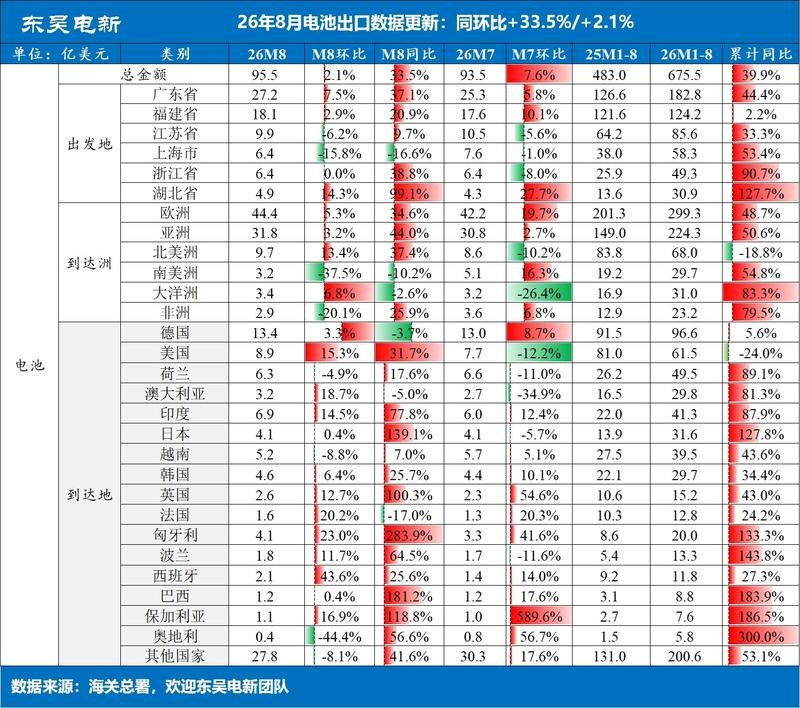
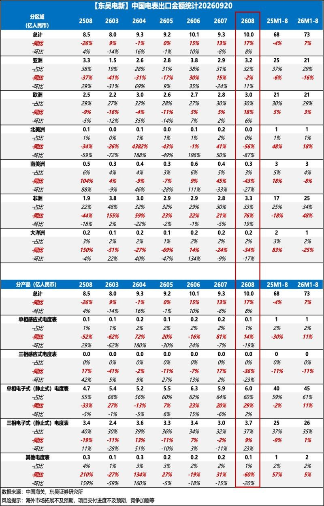
5 图
逆变器，电池，变压器，断路器，电表出口数据
逆变器，电池，变压器，断路器，电表出口数据
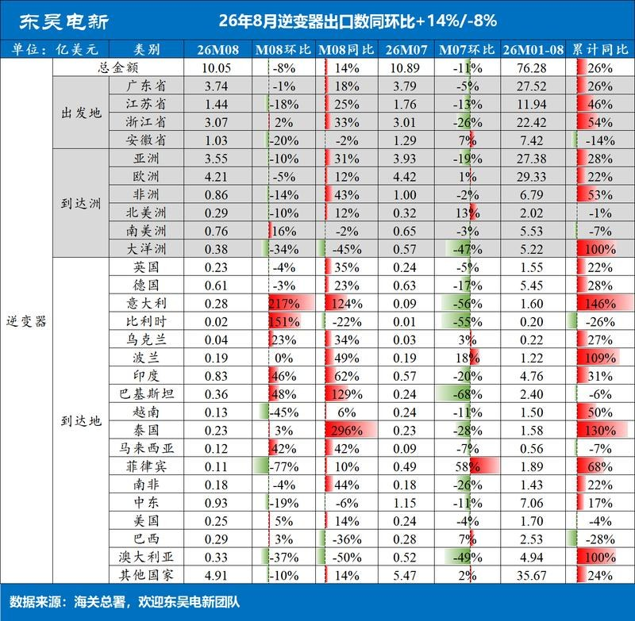
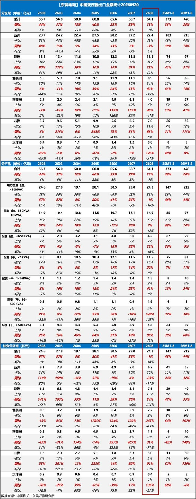
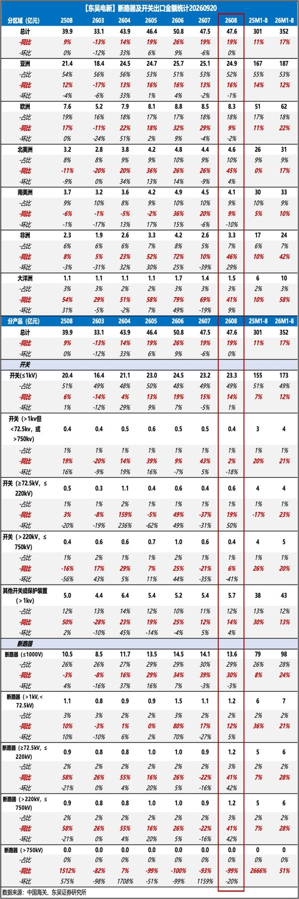
5 图
【申万计算机】LPO、NPO、CPO对电芯片影响几何?
【申万计算机】LPO、NPO、CPO对电芯片影响几何?
【中信策略】积极把握年内最后的进攻窗口
【中信策略】积极把握年内最后的进攻窗口
1）机构票见顶并不等于行情结束，产业超级周期的后段通常还有一轮非机构票的新高行情。复盘2009Q3、2015Q4和2022Q2三个案例，双顶结构的第二顶往往是机构票反弹有限、非机构票创新高的结果：2015年9月15日至年末，机构高持仓组合累计涨54.1%，明显弱于低持仓组合（73.3%）和低持仓小票组合（83.2%）。
2）目前有三点因素制约机构票：①AI算力投入没有放缓，但市场对前沿模型厂商业化空间的预期在调整。Ramp数据显示OpenAI和Anthropic约80%的企业收入来自前1%的客户，且8月这批最重度用户的人均支出环比下降9.7%，说明塔尖的支付意愿已触及天花板，未来空间在更广泛的企业付费。②全A非金融盈利三季度环比有望继续上行，但同比增速顶点可能在今年四季度出现，明年在科技高基数与商品涨价放缓下增速或缓慢下行。③美联储控通胀姿态强硬，年内流动性氛围偏紧，9月加息基本在预期内、即便年内再次加息也不应视为风险事件，投资者会把加息看作是短期的扰动或博弈性事件，这可能会影响到年内机构票的反弹和重估空间
3）不过站在情绪与筹码周期的角度，进攻的土壤已经具备：样本活跃私募仓位降至73.0%，处2020年底以来约29%分位，投资者情绪指数和全A换手率也都回到低位，9月以来市场集中定价了加息、AI放缓、高油价与中欧贸易摩擦等风险，中欧摩擦若落地更可能表现为风险落地而非重定价。三季报或成为市场从情绪修复转向景气定价的关键催化。
4）配置上，高利率环境下K型分化可能重新扩大、AI重新占优，科技关注光通信新技术、PCB、先进封装以及晶圆制造、燃气轮机等量增方向，非机构重仓弹性更大、阶段性更偏好北美链；非科技聚焦能化和具备出海潜力的头部券商。
欢迎联系中信策略团队：裘翔/高玉森/陈泽平/陆天一/许元睿/张铭楷/陈峰/朱立伟/李世豪
【广发农业】重庆生猪草根调研
【广发农业】重庆生猪草根调研
#生猪大数据中心负责人
1️⃣成本：优秀养殖主体现金成本在10元/公斤左右，行业平均现金成本约11+元/公斤。
2️⃣产能：7-8月份能感受到产能有去化，因为看到8月份输精管销量同比下降 8%–14%，母猪料销量同比下滑也比较明显。
3️⃣资金情况：头部猪企相对融资渠道多元、资金充足，中小散户普遍负债经营，依托各类贷款维持生产，但从业者无其他谋生技能、扛亏意愿强，叠加涉农贷款有投放指标，信贷托底放缓行业自发去产能。
4️⃣仔猪价格：当地成交价目前在130-140元/头左右。
#当地屠宰场
1️⃣目前单日屠宰量约500头左右，同比去年下降100头左右，一般冬至前后高峰单日屠宰 1500-1600头。
2️⃣目前140 公斤以上大猪宰量每日稳定在60+头，跟前一段时间没什么变化，高峰时期单日大猪屠宰量接近100头。
3️⃣标肥价差：标猪价格现在5.2-5.3元/斤，140kg以上标肥价差在0.8元/斤。
4️⃣冻品：4、5月份做腊肠的深加工场囤了一批冻品，最低到场价3.8元/斤，最近很少做冻品的，要有2元/斤的价差冻品才有利润。
[玫瑰][玫瑰]欢迎交流～
【浙商大制造】上纬新材启元机器人正式发售，开启国产机器人产品力时代
【浙商大制造】上纬新材启元机器人正式发售，开启国产机器人产品力时代
#要点： Q1/T1 起售价 19,999 元，汽车节拍量产，10 月 1 日起交付——率先把''万元定价+万台量产+真实预售''三件事同时跑通的公司。
#产品： Q1 是 88cm 全身力控小人形（陪伴/教育），T1 是行业首创''轮足↔四足''可变形态机器人，场景覆盖跟拍/家务/户外，2 万价位卡位家庭刚需。
#制造： 自研 QDD 关节+ 蓝思万台产线背书，量产确定性高。
#AI 与生态： 三大小脑+ PrimeMind 家务基座模型 + Harness Agent，全栈自研路线明确，7 城体验店+天猫/抖音/B 站全渠道铺设。
#催化： 10 月 1 日首批交付+双 11 放量是近期催化；中期跟踪万台产线爬坡
浙商大制造 陈红
【GLMS电子】恒运昌调研更新-0918
【GLMS电子】恒运昌调研更新-0918
→规模格局：24年中国大陆半导体用射频电源系统市场规模66e（25-29年CAGR 15.6%），国产化率12%，本土规模对应8e，公司国产市占率60%。国内市场中，28nm及以上仍以MKS+AE主导，28nm以下使用欧日+国产替代。
→公司业务：自研+贸易+技术服务
自研：射频电源 + 匹配器等，下游覆盖薄膜沉积、离子注入、刻蚀、清洗、去胶等设备；
贸易产品：MFC（在自研）+ 真空泵（有自研想法）；
技术服务：为国内头部客户提供原位替换，2030年向海外大厂看齐，有望达：维护收入/总收入=10%目标。
→年底产能：25年1w台→26年1.5w台→27-28年扩至5w台，29年达产。ASP 5w，结构升级后有望达6-7w，净利率20-25%。
→重点关注：1）截至8月公司滚动订单超预期；2）大客户验证进度，26H1拓荆科技、中微公司、屹唐股份订单明显增长；3）爬产进度，当前产能1.1w台，年底预计1.5w台；4）产品结构升级，25年二代、三代出货各占50%，四代一体机26H1已进入小批试产，盈利能力有望持续提升。
# 具体交流情况，欢迎联系GLMS电子团队！[庆祝][庆祝][庆祝]
做多阶段，建议关注在主线且业绩稳稳幸福的老朋友，# 三环、优迅、华润微、星宸
做多阶段，建议关注在主线且业绩稳稳幸福的老朋友，# 三环、优迅、华润微、星宸
各位领导好，AI硬件再迎做多窗口，基于Q3业绩确定性+相对低位，有以下个股机会建议关注：
——MLCC三环集团：Q3利润预计16-18亿（Q2 11亿环比50%+增长），Q4继续环增；长逻辑角度，高容产品涨价趋势至少延续到27Q2，且作为国内龙头三环也是最有概率突破AI核心物料的公司。
——电芯片优迅股份：Q3利润预计同比30%+；美股映射公司semtech已突破前高，产业趋势明确，核心演绎逻辑在于CPO/NPO阶段单模块（单端口）的TIA/DRIVER价值量有望迎来2-3倍的通胀，semtech绑定NV，优迅有望逐步突破国内头部光模块客户。
——功率器件华润微：Q3利润环比至少30%+增长且有超预期可能（具体可私聊）；7月份10%~15%涨价动作在Q3将集中体现，10月有望再启动代工业务线涨价；且为长存概念股。
——SOC星宸科技：Q3涨价30%+毛利率继续上行，利润预计达8亿，环比30%+，26年估值25倍PE。长逻辑角度，端侧AI核心玩家，期权众多（LPU、机器人、眼镜等硬件）。
【广发传媒周观点260920】景气度关注程序化广告与游戏出海，应用催化关注AI互动剧方向
【广发传媒周观点260920】景气度关注程序化广告与游戏出海，应用催化关注AI互动剧方向
AI：本周模型持续更新，应用渗透的驱动力正从智能上界抬升，延伸至任务成本、响应速度与工作流适配的改善。GLM-5.3-FlashX（强化高速推理）、Jev（面向分类、路由等高频任务，直接输出结构化决策及置信度）上线，我们认为，通用模型与专用决策模型的协同，有望降低Agent完成完整任务的成本与时延，推动AI在特定场景的进一步渗透。商业化方面，据媒体报道，Anthropic年底ARR预计超过1000亿美元，我们认为假设中隐含的是后续新模型&产品形态再次拉动ARR。
后续建议一方面看海外新大模型迭代，另一方面看国内大模型能力追赶与商业化兑现情况。#近期或有kimi、Qwen新大模型发布，看好国内云产业景气度进一步提升；字节10月或发布新世界模型。基建层+入口看好阿里、腾讯。题材建议关注AI互动剧方向。
影视：（1）国庆档新片陆续定档，头部片暂缺，后续可能定档的有《
敦煌英雄 ↗ 》、《
澎湖海战 ↗ 》、《
群星闪耀时 ↗ 》等。预计今年国庆档大盘相对冷淡，后续建议主要针对27年春节档布局（关注《
流浪地球3 ↗ 》）。
（2）#建议关注AI互动剧/互动影游的产业端演绎，多家大厂已在工具端布局，9/20剪映最新发布了AI影游创作平台ICG studio；字节团队AI互动影游《
不问凡尘 ↗ 》近期将开启试玩。我们在7月的深度报告中已分析过AI互动剧的爆发潜力，Q2以来AI短剧市场供给逐步出清后，产能逐步转向精品化，并在新AI内容端（如AI互动剧）释放。AI互动剧基本遵循小说与剧集的线性叙事，受众更接近IP网文、短剧消费群体，在海外已有成功投流案例；AI互动剧具备较高的广告挂载效率，在制作端也需要更多对于模型的消耗。建议关注制作端有AI内容布局的华策影视、德才股份等；版权方中文在线、奥飞娱乐等。
广告营销：继续推荐#汇量科技，公司新Infra预计10月上线，近期备受市场关注。公司自25年底引入Meta技术人才后加速搭建新infra，Q2完成开发、Q3测试，整体架构搭建进度超出内部预期。营销方面，近期海外模型Jev模型发布，长期有望助力营销当中的决策环节，助力广告优化，关注易点天下。线下品牌广告赛道，预计分众全年分红稳定，当下性价比强、股息率可观，建议关注。#如需分众周度草根调研欢迎联系悦纯~。
游戏：估值性价比仍突出，建议首要关注#世纪华通；流水重回增长，看好近期创新高。若后续新程序化广告公司跑通，则中期建议关注游戏出海厂商，如华通、三七以及泰岳等。此外建议关注业绩稳定+估值低位的 巨人、恺英、完美以及吉比特等。
[抱拳]【中信证券交运物流】周观点：运力损失螺旋上升共振Crack强推力，继续推荐油运周期范式重塑
[抱拳]【中信证券交运物流】周观点：运力损失螺旋上升共振Crack强推力，继续推荐油运周期范式重塑
[玫瑰]原油：运力损失螺旋上升共振Crack强推力，VLCC有望运价高位继续上行
市场关注VLCC运价创历史性新高后的持续性及旺季运价是否进一步上行，我们认为核心矛盾为有效运力损失螺旋上升和货盘放量共振对运输端的挤压，短期运费仍存进一步上涨的韧性，当前运费尚未充分反映供求关系的紧张程度。一方面，富察伊拉、埃及艾因港码头拥堵效应日益突出，“一船难求”带来的紧张程度持续的时间和张力或超预期。大中东区域保持每天900~1000万桶的出货量，中性假设下粗略估计湾外有效运力损耗18.8%~28.6%，苏伊士运河绕行带来更高运力损耗。另一方面裂解价差扩大形成需求端强推力，9月18日当周美欧柴油裂解价差扩大百元/桶以上，强化大宗贸易商和湾内产油国抢货冲动，料湾区9月中转货量进一步增加，旺季需求韧性可期。4Q26油轮龙头估值和利润有望创历史新高，继续推荐招商轮船、中远海能（H/A）。详油运周期周谈系列《运力损失螺旋上升，1YR租金近20万》（20260920）。
[玫瑰]成品油：有效运力损失亦传递至成品油，多重因素推动四季度需求脉冲
根据Clarksons，9月18日当周韩国-欧洲的LR2运价环比增长8.8%至80341美元/天，TC7（新加坡-澳东）环比增长9%至48840美元/天。冬季欧洲成品油季节性需求、俄罗斯成品油禁令持续延期叠加区域主要炼厂受损，伊拉克等湾区产油国出口诉求有望与原油消费增长共振。根据CME和S&P Global数据，美国和欧洲柴油裂解价差升至113.6美元/桶和110.4美元/桶。国成品油或继续‘进出口并行’策略，以海外出口利润补贴炼厂现金流”的模式。成品油的区域贸易开始向跨区贸易转变，高裂解价差、季节性需求上行叠加航距拉长预计将推动成品油运输需求上行，继续推荐招商南油。详数观2026年中报专题 《航运周期范式重塑，关注快递旺季价格》（20260910）。
Global Macro Weekly Notes 20260920
Global Macro Weekly Notes 20260920
1.市场热点&资产核心逻辑：
（1）美联储加息25bps至3.75%-4.00%，点阵图暗示年内再加息，主导本周全资产定价。
（2）美股：本周指数先跌后修复，科技领涨、软件跑赢半导体，美联储加息及点阵图指引连续加息压制道指、等权与小盘；AI安全与研发放缓讨论一度冲击硬件，但算力需求的积极信号支撑其修复：IGV+2.79%，MAG 7+1.05%，纳指100+0.94%，费城半导体+0.83%，纳指+0.72%，标普500-0.08%，标普500等权-1.26%，罗素2000-1.50%，道指-1.69%。
（3）美债：Warsh鹰派加息，曲线平坦化——2Y +13.0bp至4.76%、10Y +5.0bp至5.01%、30Y -1.0bp至5.34%，2s10s收窄约8bp至+25bp。市场定价连续加息，长端期限溢价回落。
（4）美元：DXY +1.14%至100.22，创一个半月新高。美联储鹰派加息，强化后续继续收紧、利率维持高位的预期；周五日央行表态不及预期鹰派，进一步助推美元。
（5）商品：（a）黄金：伦敦金现+0.68%至4377.29美元/盎司，加息落地、周四美债收益率下行推动反弹，但DXY站上100限制涨幅。（b）原油（CO1）：布油-0.71%，海湾国家与伊朗会谈推迟，沙特东西输油管道遇袭，供应担忧推动油价一度冲高；随后管道部分重启预期缓解供应担忧，油价回吐涨幅。
2.宏观经济：
（1）经济数据：8月零售销售环比+1.2%（预期+0.8%，前值-0.5%），主要得益于线上销售的反弹、汽油价格上涨以及机动车销量的回升，美国消费支出依然保持韧性。
（2）Fed：9/16加息决议全票通过，本次FOMC记者会上几乎看不到Warsh对美国经济和就业市场丝毫的担忧（认为经济强劲、就业良好），仅有对更及时timelier回归2%通胀目标的承诺，加之Warsh以外的 12 位委员认为年内还有一次加息，4 位委员认为年内还有2 次加息，以及今年和明年终点利率均为4.1%，则higher for longer是本次FOMC 为市场呈现的信息，整体信号偏鹰。
（3）BOJ：日央行虽加息25bp，但两名委员反对，后续加息指引低于市场预期。
3.下周重点关注：
9/21（周一）：据央视新闻，商务部新闻发言人表示，经中美双方商定，中共中央政治局委员、国务院副总理何立峰将于9月19日—23日率团赴美国与美方举行经贸磋商；芝加哥联储主席古尔斯比发表讲话；
9/22（周二）：纽约联储主席威廉姆斯和美联储副主席杰斐逊在2026年美债市场会议发表演讲；
9/23（周三）：欧美9月PMI初值。
【西部银行】本周银行股怎么看？（20260921）
【西部银行】本周银行股怎么看？（20260921）
#核心观点：
📊上周复盘：大盘存量轮动趋势不变，上周科技情绪局部反弹造成资金抽水，板块内险资持仓较重个股相对抗跌；
🧭本周操作建议：9/17 FOMC议息落地，点阵图指向年内仍有一次加息，短期内强美元叙事或扰动科技情绪修复，大盘存量轮动趋势预计持续，红利资产有望迎来阶段性补水，上周银行股回调提供加仓支点，本周建议适度补仓绩优城商行，持仓大行股则仍建议拿住、逢低加仓。
#板块选股：
1、底仓配置：中国银行A+H、建设银行A+H、中银香港H、中信银行A+H、江苏银行；
2、灵活动仓：齐鲁银行、青岛银行、苏州银行、南京银行、宁波银行、渝农商行
#本周我们可路演内容如下：
1、银行策略&资金面分析（机构资金行为跟踪+Q4银行板块配置策略）；
2、上市银行股东全持仓情况；
3、上市银行2026年中报业绩综述；
4、地区中小银行（如东北、江西地区）化险进展&后续风险前瞻；
5、国有大行资负行为&下半年金市配债策略；
6、地产新规对银行涉房业务风险前瞻；
7、金融机构税务征管口径变化；
8、拉美银行分析框架及选股
#银行研究数据库【更新版】如下📊
🌟【新出炉】上市银行股东全持仓数据库（更新至26H1，梳理国资/险资/AMC/社保/公募/外资等股东持有银行股情况）
🌟上市银行大数据库（更新至26H1，极度好用）
[玫瑰]42家上市银行个股数据库（更新至26H1）
[玫瑰]42家上市银行FV-OCI浮盈数据库（更新至26H1）
[玫瑰]金融机构不良转让月度数据库（更新至26年8月）
☎️欢迎联系对口销售/【西部银行团队】：周安桐/程宵凯/喻麟靖
MLCC：
MLCC：
1、周末几个涨价信息：天风汽车跟踪，本周常规料现货涨10%，高容涨15%—20%，个别料号涨25%；国联民生军工称三环已通知代理商，10月1日起原厂出货价上调30%—80%。两组涨幅对应的环节、料号和执行时间不同，不能混着看。
2、央视报道的0603-104，价格从二季度5元/千颗涨到6月底30元，目前回到10元；周末复盘跟踪的是0603-106，不是同一个料号。复盘里提到现货领先股价一两周，只能作为阶段观察，不能当固定规律。消费料的渠道库存和炒货行为，对现货影响很大，不能拿一个料号代表整个行业。
3、AI侧要单独看。天风认为AI、车规和稀缺料号主要走原厂直供；东北汽车预计2026/2027年AI服务器MLCC出货量增长71%/54%，日韩产能向AI倾斜，又会挤占部分普通高容产品供给。所以现货和AI需求不能直接画等号，但两边也不是完全没关系，要看具体料号是否共用产线。
4、国内原厂除了涨价，更重要的是承接日韩退出的订单，以及往高容、AI和车规升级。东北汽车预计三环年底总产能达到650亿颗/月，但产能不等于销量，后面要看客户导入、产品结构和实际出货。10月调价能否落地、份额能否提升，比单看华强北某个料号涨多少更能说明原厂的利润变化。
游戏观点周度更新0920：关注中秋+国庆催化，核心长线产品构筑利润底
游戏观点周度更新0920：关注中秋+国庆催化，核心长线产品构筑利润底
[玫瑰]观点更新：1）关注双节核心长线产品表现：巨人《
超自然 ↗ 》完美《
异环 ↗ 》心动《
小镇 ↗ 》；2）AI“互动”影游突破：AI生成时间短于播放时间，剧情连续性问题解决、玩法即成立。创新直播产品YoLive：直播AI互动剧情频道，观众弹幕投票决定后续剧情；3）8月游戏出海维持高增，同比+20.9%。
[太阳]本周重点：【腾讯】《
王者万象棋 ↗ 》免费榜Top1、畅销榜当前Top13，付费涉及较轻；8月中国App Store手游收入榜，腾讯包揽Top5，手瓦、金铲铲、和平新高峰。
【网易】《
无限大 ↗ 》27年1月，预约2369万；《
遗忘之海 ↗ 》9月测试调整，出海12月封测。
【华通】WS与KS联动举办“双星同行”活动，8月境外市场产品流水增长Top3，TTM短期第三方流水略降。
【巨人】《
超自然 ↗ 》关注中秋+国庆活动，储备版号：《
冰雪之笼 ↗ 》《
月圆之夜 ↗ 》《
热血王朝∶篮球 ↗ 》《
无尽修仙 ↗ 》《
五千年 ↗ 》。
【三七】《
LA ↗ 》爬坡趋势中，《
Z Route ↗ 》持续新高，《
赘婿 ↗ 》8月新游首月流水Top4。
【心动】核心产品《
小镇 ↗ 》淡季流水稳健，《
火炬 ↗ 》较Q2略将、较Q1稳中有升，关注双节催化。
【恺英】参股娱美德，传奇IP生态闭环形成；《
烈焰觉醒 ↗ 》Q3月流水3-4亿稳健运营。
【完美】《
异环 ↗ 》1.4版本9月24日，新角色黑羽、明音凛，开放全新游乐园区域。
[太阳]重点标的：网易、腾讯、心动公司、世纪华通、巨人网络、恺英网络、三七互娱、完美世界、吉比特、哔哩哔哩。
【PCB产业链】成本上行开始转化为板厂盈利，关注Q3—Q4利润弹性——周度推荐 20260920
【PCB产业链】成本上行开始转化为板厂盈利，关注Q3—Q4利润弹性——周度推荐 20260920
本周PCB产业链最重要的变化，不是电子布再次提价，而是上游成本开始穿过CCL，进入板厂报价和利润表。中国巨石9月电子布厚布、薄布分别提价15%、20%，建滔及海外基板厂商同步调整报价。从近期排产与采购反馈看，玻纤布、HVLP铜箔等关键材料短期难以快速补量，本轮价格高位维持时间可能明显长于一般库存周期。
#板厂盈利进入修复窗口。部分PCB厂商已连续调整报价，新接订单更多参照交付期材料成本，而前期库存仍保留较低成本，由此形成阶段性的价差收益。调研口径显示，部分中小板厂Q3净利率已回到双位数，Q4有望继续改善。当前交易线索正由电子布、CCL逐步扩散至具备稳定采购能力和闲置产能释放空间的板厂。
#订单与利润正在向上市公司集中。材料紧张阶段，规模采购、现金流和交付稳定性的重要性明显提高，部分长尾订单有望从小型非上市厂商转向上市板厂。短期重点关注【奥士康、崇达技术、金禄电子、四会富仕、博敏电子、中京电子、世运电路】等盈利基数较低、产能利用率仍有提升空间的公司，以及兼具涨价与AI PCB产品持续推进的【景旺电子、方正科技】等。
#高端材料仍决定中期胜负。国际复材将新增资源更多投向Low-Dk二代布和Q布，反映普通电子布扩产相对容易，高端产品仍受制于织机、配方、良率和认证。重点关注上游材料的持续涨价和高端产品突破，铜箔环节【德福科技、铜冠铜箔】，电子布环节【宏和科技、国际复材、中材科技、中国巨石】，树脂环节【东材科技】，CCL【生益科技、南亚新材、华正新材】。
#CPO带来的更多是价值迁移，而非PCB需求消失。光连接可能缩短部分高速电信号路径，但机柜内部互联、传统交换机升级及新增训练系统仍需要高阶板材；同时，部分价值量可能由主板转移至面积更大、层数更高的载板。短期围绕“CCL降规”的调整主要反映技术路线分歧，后续应跟踪CPO实际出货、M9/M10材料定型及载板订单，而不是简单按全产业链降级处理。
【DW电子】每日观点汇报
【DW电子】每日观点汇报
#观点：
[玫瑰]国产 AI 算力：本周华为全联接大会发布 Atlas 950/960 超节点与灵衢统一互联架构，昇腾 950DT 将于 Q4 上市；云栖大会上平头哥真武 M890 芯片首秀，搭配自研 ICN Switch 1.0 互联芯片与磐久 AL128 超节点，国产超节点方案密集落地，互联与组网需求同步放量，利好国产算力链。受 HBM 供应持续紧张影响，华为昇腾 950DT 意向报价+ 20%~50%涨幅，寒武纪 690、沐曦、天数智芯报价亦上调 20%~30%，存储涨价成本压力顺延至 CSP 侧，芯片厂商自身成本压力有所缓解，量价齐升逻辑清晰。下半年国产算力卡放量在即、超节点进入规模交付期，利好算力链与超节点环节 #华勤技术 #盛科通信，国产 AI 芯片 #寒武纪 #海光信息等。
[玫瑰]沪电股份：上周CPO影响PCB及CCL降级传闻对整体板块产生扰动，实际情况看中期无显著影响。当前时点海外算力板块压制因素逐步解除，10月前后产业链能见度有望进一步向28年展望，沪电作为AI PCB龙头有望率先受益。叠加Q3业绩确定性强，且当前位置对应27年业绩仅20倍PE，反弹建议重点配置。
[玫瑰]芯碁微装：我们每天都在提醒领导们一定要重视芯碁，每次调整都在提示按手买入，芯碁下半年无论是收入还是毛利率都会上大台阶！明年更是大爆发的一年！可以说芯碁一定是半导体设备公司里面往后看三年最具有弹性，最具有确定性的标的，简单复盘近期设备板块的行情，芯碁绝对是调整最少，但是涨的时候弹性最大的，背后是行业层面越来越多的超预期进展，加上公司超预期的突破，我们给大家选出了板块设备板块里面最具有锐度的品种，坚定看2000e市值！
[玫瑰]MLCC：村田停产部分消费级及车规料号，重心转向超高容及小尺寸高容，并评估3-5年扩产计划；三星上调2026Q4消费级X5R报价25%-30%，为高端产能腾挪空间。日韩龙头动作印证AI需求高景气，高端产能存在扩产刚性约束，AI订单有望向国产链外溢；产能挤占效应下涨价有望向全品类扩散，国内中高容原厂有望充分受益于国产替代与涨价双重红利。建议关注三环集团、风华高科等。
[玫瑰]三环集团：国内高容MLCC最大敞口原厂，受益于AI产能挤占效应，量价齐升趋势已获中报验证；后续超高容产品随AI服务器、电源放量，盈利中枢仍具上修空间。此外，光通信及SOFC持续催化，多β共振强化公司成长韧性，维持推荐。
[玫瑰]长光华芯：产品已明确确认在头部模块厂放量，Q3光芯片收入有望进一步增长，持续重点推荐！
[玫瑰]杰华特：公司#发布涨价函，开启涨价周期，drmos及其余模拟料号同步上涨。未来按国内市场50%的份额去产能的。Drmos当前毛利率50%以上。28年drmos市场规模是今年的6-7倍。核心重点推荐！
[玫瑰]晶方科技：主业上半年去库存基本完毕、Q2起稳、预计 Q3-Q4逐季改善，光学部分#Q4商业化落地可期，公司或凭借多年TSV+异质集成的成熟技术能力或能吸引#更多光业务客户合作。请重视公司在光电合封大趋势下的巨大市场潜力！
[玫瑰]载板：引科创板日报，NV、AMD以及CSP已将ABF载板长约延伸至2028年，仍难以解除短缺焦虑。BT载板、ABF载板行业景气高，重点推荐设备芯碁微装、载板深南电路、兴森科技。
恳请支持东吴电子！
【德邦高端制造】#苹果折叠手机发布，3D打印加速渗透
【德邦高端制造】#苹果折叠手机发布，3D打印加速渗透
事件：9月9日苹果发布首款可折叠iPhone Duo，起售价1999美元，10月23日发售。
【1】苹果3D打印应用由小型接口件延伸至折叠屏关键结构区域：#①铰链盖板由100%再生钛3D打印； ②产线以共聚焦激光扫描表面起伏后，#3D打印最多25层定制光敏聚合物，消除残余波纹。
【2】3D打印有望向3C复杂结构件和精密装配环节渗透。3D打印适配薄壁、异形结构，近净成形且材料利用率高，可降低钛材损耗，并兼顾铰链轻量化、强度与空间利用。
【3】设备与耗材端：多激光配置、扫描系统提速提升成型效率并降低单件成本；钛合金粉末价格已从约3000元/公斤降至200–300元/公斤，设备提效+材料降本有望加速3C渗透。
投资建议：工业级建议关注铂力特、华曙高科、大族激光、天工国际、哈森股份、汇创达等；消费级建议关注家联科技、创想三维等。
报告链接：
苹果折叠手机发布，3D 打印加速渗透 ↗
风险提示：iPhone Duo 销量不及预期；3D打印渗透不及预期；行业竞争加剧。
☎欢迎联系：德邦高端制造丁健/周天昊/杨安东/吴冰予/姜政宏
【交运】观点更新
【交运】观点更新
📝复盘：上周受VLCC、东南亚集运运价大涨、义乌快递涨价消息，油轮、集运、快递涨幅居前。受焦煤价格回落、油价持续冲高影响，嘉友、航空、空运股价承压。
下周要点🔥🔥
1️⃣VLCC：上周涨沙特原油改道STS，下周涨欧洲进口改道❓
运价屡创极值，运费数据我就不赘述了。上周核心是沙特东西输油管道被炸之后，出口改道霍尔木兹海峡经由Sohar港进行STS；最新消息，沙特阿美已通知至少两家欧洲炼厂暂停10月原油供应；Poland Orlen据报道已经转向北海原油补充，Poland Orlen已额外购买16船原油，用于保障波兰、立陶宛及捷克炼厂9—10月需求。新增货源来自挪威、英国、阿尔及利亚、哈萨克斯坦、阿塞拜疆及美洲，并继续寻找北海、巴西和圭亚那原油。沙特阿美此前占Orlen原油供应40%，欧洲原油出现真实的进口来源重构，对Aframax/Suezmax以及部分VLCC吨海里均有正向影响。
2️⃣VLCC中长期运费均值大幅上移：1年期租20w[哇]，10月锁定ws800
据路透社，10月初Fujairah—亚洲200万桶VLCC报价已经达到WS800。最新消息，VLCC 1年期期租价格上涨至18.5-20万美元/天，按照20万美元/天计算，招轮若将全部船按此价位期租1年，全年仅油轮利润预计超过200亿❗️持续推荐#招轮 #海能 #南油 #海通 #海丰
3️⃣快递：义乌、江苏涨价，先填平波谷➡️，后旺季涨价❓
周中和周末，快递分别宣布义乌底价上涨0.3元📈、江苏底价上涨0.1元📈我们认为，这是持续深化反内卷的又一次佐证。市场监管总局强调：“十五五”期间加快修订《
价格法 ↗ 》，对带头开展恶意低价竞争的企业，依法从严处理。快递反内卷大方针不变，持续推荐：#中通 #圆通 #极兔
4️⃣航空：双节预售价格+9%📈，股价对油价钝化
截至9月17日，国庆国内经济舱平均预订票价同比+9%；预计中秋国庆期间日均旅客量同比+3.1%。7月含油票价-7%、8月-4%、9月至今+3%、国庆预售+9%，整体趋势向好，短期股价对油价有所钝化，底部左侧布局正当时。推荐：东航物流、华夏、东航。
继续推荐 AI 应用，关注 RSI 与云栖大会
继续推荐 AI 应用，关注 RSI 与云栖大会
[烟花]继续推荐 AI 应用，港股重点关注 AI Infra、Ai4S，A 股传媒逻辑延续。港股重点推荐#汇量科技、#晶泰科技，#阜博集团；A 股继续推荐#上海电影、#南方传媒、#芒果超媒、#易点天下、#风语筑。
#汇量科技：AI Infra 预计 10 月上线，从算力、数据、模型训练到实时决策全面升级，有望提升模型迭代效率及广告 ROI。参考 AppLovin AXON 2.0、Unity Vector 上线后的表现，算法升级有望成为下一阶段增长催化。公司 IAA 基本盘稳健，并持续拓展 IAP 及混合变现，新 AI Infra 尚未贡献主要增量，继续看好后续业绩释放。
#晶泰科技：Ai4S 方向继续推荐。公司 AI 药物研发持续兑现，子公司 LCC Technologies 与斯坦福大学达成药物发现合作，进一步验证“AI+机器人+实验闭环”平台外部合作能力；同时计划向美国 FDA 提交 KQTD-126 IND 申请，关注后续 IND 获批、临床推进及外部合作落地。
[烟花]A 股 AI 应用逻辑整体延续。#上海电影 继续关注 AI 内容创新及上海国资传媒资产整合；#南方传媒 关注 AI 内容生产及教育、书店等资产整合；#芒果超媒 继续受益 AI 长剧等新内容形态探索；Token 运营方向继续重点推荐#易点天下，海外模型能力持续提升、Agent 任务复杂度及调用场景扩张，有望推动 Token 消耗持续增长；物理AI方向关注#风语筑。
[烟花]大模型：重点关注 RSI与AI安全，AI 研发 AI 开始进入工程实践阶段。智谱近期披露 RSI 工程化实践，由 GLM-5.3 驱动的 Infra Agent 参与 GLM-5.3-Flash 推理基础设施搭建和优化，并在大规模国产芯片集群上实现吞吐提升。
我们认为，RSI 逐步打通 Coding Agent→Infra Agent→AI Research Agent 的能力链条，有望提高研发效率、加快模型迭代。Anthropic 近期持续讨论RSI并同步强调前沿模型的安全评估、红队测试等机制，反映模型能力提升与安全治理正在并行推进。
国内同时关注 MiniMax M3Pro 模型上线预期。
[烟花]互联网：重点关注云栖大会，新模型、新 Agent 产品、AI 基础设施升级及商业化落地。阿里和腾讯均有望受益“模型+应用入口+云”的产业趋势。
🍬【mlcc周末思考更新】非常重要
🍬【mlcc周末思考更新】非常重要
#现货价格价格往往领先股价一到两周，#市场以这种现货价格为锚的交易有效但容易过度
🍬周末复盘了一下mlcc历史走势，mlcc每次走势以0603106为代表（因为此料号成交量大且下游应用场景广泛），让我们拿mlcc现货价格和股价对照，最后会发现，#现货价格是非常有效的提前的锚
🍬mlcc现货价格走势分为几个阶段
🍬#5月底到6月底:现货价格持续向上，股价也不断向上，不断演绎，此时现货价非常有效
🍬#6月底到7月底：现货走势向上，股价于6月底见底，当时受流动性影响，mlcc股价快速下跌，现货价格一直往上，0603106已经基本从底部10-20块翻到6-7月历史峰值80-90/k，甚至100，现货价格在股价跌最惨的时候来7月中旬的100块/k，当时非常坚定建议继续捞，但走势脱离基本面，又晚了一两周才反弹
🍬#7月底-8月中：股价开始反弹，现货价格持续创新高，但二阶导趋缓，甚至有下跌趋势，mlcc当时是硬件中反弹最猛的细分方向，因为现货价格反应的隐含价值对应原厂的pe只有10-15x，但此时现货价格上涨加速度已经趋缓，甚至下跌，再次领先股价
🍬#8月中到9月初:现货下跌，股价下跌，现货价格再次领先
由于部分原厂扩产以及海外大厂的尾单，库存累积，现货价格先于股价下跌，8月初已见顶，但是市场又晚了一两周反应
🍬#9月初到现在：我们第一个提出现货价格触底，因为可以观察到库存和交货周期这些参数又回到6月的位置，库存基本去完，当时判断这波mlcc现货价格又会迎来一波行情
🍬#复盘历史表现：每次市场都会非常有效的反应现货价格的变化，只是一般会晚一两周，现货价格是非常非常重要的锚，也是为什么我们持续调研华强北，跟踪现货价格的原因，且据观察，mlcc现货价格是趋势走势特别明显的，难反转，一旦开始就会时间比较长
🍬研究历史是为了更好地预测现在
欢迎领导们和我交流mlcc，最早去华强北调研，最坚定最前瞻的call🍬
by ty
[红包]【天风机械】光模块散热三剑客：功率不高但局部热流密度是核心卡点
[红包]【天风机械】光模块散热三剑客：功率不高但局部热流密度是核心卡点
[發]核心矛盾：#光模块整体绝对功率不高，但光电芯片、激光器等发热器件被压缩在极小面积内，局部热流密度极高；800G向1.6T、3.2T迭代过程中，激光器对温度高度敏感，热量堆积直接抬升误码率、降低器件寿命，散热能力成为制约高速光模块功率提升的核心卡点
[福]#富信科技：#Micro-TEC微型半导体制冷方案，可对光芯片实现精密温控，精准解决激光器温漂问题
[烟花]#中石科技：#具备VC均热板、TIM导热界面材料全套热管理产品体系，覆盖光模块散热全链条
[爆竹]#鸿富诚（即将上市）：#主打高性能导热凝胶、取向石墨烯导热垫片等热界面材料，解决光模块狭小空间内界面低热阻传导难题
🔥【国盛张一鸣】t链与国产共舞，机器人战略性买点将近
🔥【国盛张一鸣】t链与国产共舞，机器人战略性买点将近
[红包]九月中旬t链开启供应商验收，第二轮大订单预计很快落地，10月份产能爬坡斜率会很陡峭。目前各环节交付在周500左右，下月底爬到1000以上，年底要求达到2500台。26年全年预计2w台，27年产能要爬到年化50w以上。随着北美整机产线良率的优化，订单的量级、频次也会快速提升。
[福]国产消费端机器人也开始步入量产。9.20启元机器人发布会很超预期，两款机器人，q1和t1售价仅19999元起，爆单可能性很大。陪伴类的大卖只是个开始，家务模型Prime agent也将在年内发布，值得期待。
[福]机器人板块自年初以来已沉寂半年多，筹码结构相当好，但仍然是最有想象空间的赛道。t链量产摁下加速键+国产C端陪伴产品正式放量，板块战略性买点已近。
[發]投资建议：1️⃣t链买确定性：#福赛科技、斯菱智驱、科森科技、浙江荣泰、北特科技 等，tier2重视丝杠、谐波共用的刀具供应商：#恒锋工具； 2️⃣国产链重视C端陪伴产品的#上纬新材、中坚科技。
【申万机器人】上纬启元消费级具身机器人发布会要点
【申万机器人】上纬启元消费级具身机器人发布会要点
#产品介绍
1）启元Q1：身高 88cm，搭载自研QDD关节，具备全身力控能力，可折叠收纳，续航3h，支持全栈式二次开发；
2）启元 T1：轮足人形/四足形态自主切换，适配台阶、砂石、草地等非地形，集成AI跟随运镜能力，续航2-3h；
3）模型：PrimeMotion小脑运控、PrimeGo多模态感知跟随、PrimeVista多模态交互；并推进Agent开发和家务基座模型Primemind开发。
#目标用户
1）核心：机器人开发者、科技极客；2）B 端科创教育群体，用于教学、科创项目；3）C 端高净值家庭，用于家庭智能陪伴；4）自媒体、内容创作者，利用 T1 的 AI 跟随拍摄功能完成户外内容生产。
#价格体系
Q1 标准版 19999 元；Q1 探索版 26999 元；T1 基础版 19999 元；T1 Pro 版 29999 元
#销售渠道
线上：官方小程序、天猫、抖音、B 站官方旗舰店；
线下：上海、广深、杭州、西安等 7 城授权体验店。
#量产进度
引入汽车工业的制造节拍与质量管理方式，每2.5分钟下线一台机器人
[庆祝]首款消费级家庭机器人订单销量有望超预期，建议关注【上纬新材】及其供应链卧龙电驱、信捷电气、福达股份、蓝思科技、东方电热、银轮股份等。
欢迎联系申万机器人团队
【飞龙股份】液冷泵核心供应商，“英伟达+谷歌”双线驱动
【飞龙股份】液冷泵核心供应商，“英伟达+谷歌”双线驱动
[太阳]1、液冷（gg+nv）
假设nv+gg27年合计30w柜，nv单cdu3个22kw泵，gg单cdu2个37kw泵，飞龙占比60%，均按照1cdu拖4机柜计算，对应出货11.25w个，液冷大泵平均单价6w元，净利率30%，对应67.5e收入和20e+利润，给予30X，对应600e+市值。
[太阳]2、主业
主业26年预计2e+利润，给予15X，对应30e市值。
[庆祝]两业务合计看到630e+市值，仍有翻倍空间！
[烟花]后续重要催化：10.12英伟达OCP大会产品亮相；海外tier1送样加速；Q3/Q4利润释放；小泵业务订单放量；年底nv验证+量产加速；后续gg大泵产品价值量提升（集成度提升）。
【东吴电子陈海进】短中长期逻辑共振，看好 #盛科通信 业绩弹性释放
【东吴电子陈海进】短中长期逻辑共振，看好 #盛科通信 业绩弹性释放
📍短期看 Scale-out：率先落地的增量机会 算力网络升级与国产替代持续推进，打开高端交换芯片市场空间。公司网络产品覆盖多场景赛道，整体业务高增态势明确，2026H1 营收 6.71 亿元，同比增长 32.04%。同时公司 12.8T/25.6T 高端芯片已进入客户导入阶段，商业化持续提速，若后续突破头部互联网客户，将带来新增收入弹性。
📍中期看 Scale-up：超节点打开新增市场 国内大厂加速落地超节点方案，超节点架构对高速互联交换芯片需求持续抬升。公司已披露 48.05 亿元定增预案，其中 31.81 亿元拟投向下一代高性能交换芯片研发产业化，同步适配 Scale-up/Scale-out 路线。预案尚待推进，伴随超节点规模部署，该业务有望从产品布局转为收入贡献。
📍长期看独立第三方定位：决定份额上限 盛科为国内稀缺独立第三方交换芯片厂商，不绑定单一算力芯片与超节点路线。本次披露的定增预案中，8.24 亿元拟布局互联软硬件、光电融合与开放互联协议，业务从交换芯片向算力互联体系延伸。国内多技术路线并行环境下，公司有望依托低基数实现收入与利润弹性。
⚠️风险提示：下游需求波动、行业竞争加剧、新产品研发和客户导入不及预期、定增预案落地不及预期等
🎁东吴电子：陈海进 / 刘玥娇
【天禄科技】TAC膜产线调研反馈：震撼！[发呆][发呆][发呆]
【天禄科技】TAC膜产线调研反馈：震撼！[发呆][发呆][发呆]
[庆祝]产线move in进展顺利：#产线各环节设备和零部件已到位，并陆续安装调试中，预计十月份如期完成。本次调研由董事长带队逐一进行了参观讲解，#产线全长目测四五百米，#高度二十多米，规模之大在膜类产线中较为罕见。（欢迎领导们在产线正式落成后，预约实地考察、亲身感受）
[烟花]产线前置调试顺利：天禄聘请的海外核心专家、下游客户专家均已到岗，已规避日、韩、台产线建厂时期的多处问题，#预计后续带料调试周期相比海外至少缩短6个月。
[福]后续展望：公司一期产线预计十月份正式拉通，并开启投产、送样等工作，下游客户验证资源已准备就绪。同时，二期产线已开始部分设备的提前询价，目前预估投资额及交期相对一期均有望大幅缩减。此外，天禄的DBEF项目也在顺利推进中，产线有望于明年上半年落成。
[玫瑰]我们将持续看好【天禄科技】成长为#高端光学材料平台型企业，建议重视！欢迎交流！
【A+O 跟踪】(1) 0920 #企业AI预算正在加速流向最强模型
【A+O 跟踪】(1) 0920 #企业AI预算正在加速流向最强模型
1️⃣GPT-6 Astra 9 月 3 日上线，#两周内拿下 Ramp 平台企业 AI 支出的 13%，反超 9 月 1 日才发布的 Claude Fable（约 8%）；旗舰模型的领先窗口已缩到以周计。
2️⃣Astra抢的是存量而非增量：增长#主要来自GPT-5.6 Sol 及部分 Anthropic 客户迁移，frontier 预算池并未同步扩大，一家旗舰的突破就是另一家的失血，#份额波动将远比 ARR 总量波动剧烈；客户广度上 Anthropic 仍领先（8 月 43.8% vs OpenAI 39.8%），但最值钱的 frontier 单模型支出已经易主。
3️⃣行业状态是用量在涨、单价在跌：token 价格较 3 月#下降 41%，企业把默认模型切向便宜的标准款（前沿模型 token 份额自 8 月峰值 53% 回落至 45%)，#短期量增未必盖的住价跌，因此要体现到 Arr 可能会略有滞后。
📦AI 支出没有收缩，是预算在旗舰之间高速轮动，ARR 的韧性不取决于存量客户多少，取决于#下一代模型能不能把旗舰位置拿回来。
【xb机械】阿里云栖大会在即，关注阿里算力基础设施产业链
【xb机械】阿里云栖大会在即，关注阿里算力基础设施产业链
9月22日-24日，2026云栖大会将在杭州国际博览中心举办。本届大会以Agentic AI为核心锚点，串起芯片、云基础设施、模型能力与模型服务、Agentic应用的完整链路。
其中1号智能馆集中体现阿里云全栈AI技术；#2号算力馆重点展项CUBE5.0将模块化数据中心搬到现场、体现阿里在供电、散热、巡检和运维等环节的布局。
会上阿里或发布新一代模型及云端产品，关注阿里AI配套产业链催化机会。
1液冷：鸿富瀚
公司为阿里液冷T1供应商，Q3Q4出货的阿里液冷机柜有倍数级提升，Q3公司业绩拐点已现！2728年超节点机柜放量，公司预期有大客户40-45%+份额。此外机器人业务进展显著，27年业绩上修。
——————————————
2连接器：胜蓝股份
阿里超节点机柜高速背板连接器核心供应商，预期40%+份额，同时也是molex连接器国内唯一技术授权方。公司ZJ项目突破，预期27年业绩迎来显著增厚。
——————————————
3电源：中恒电气
上半年公司AI电源收入yoy+100%，公司是阿里HVDC最大供应商，宁德时代40e入股后，或进一步提升中恒在腾讯、字节等csp的份额：此外宁德与第三方IDC的合作中恒同样显著受益。未来中恒承接宁德赋能，业务不局限于一二次电源，朝向数据中心前端建设全环节覆盖。
详询or笔记联系 王昊哲/郭义俊
#AI下游需求产业update-0920
#AI下游需求产业update-0920
#TLDR：近期基础模型与下游应用景气度同步加速，AI产业正从“能力突破”迈向“需求兑现”，产业趋势的加速与资本市场的“地量地价”形成明显背离，建议积极把握当前配置窗口
#企业级AI（Enterprise AI）：
❶网络安全：RSI推动模型智能持续提升的同时，也进一步放大模型可控性的挑战，明确拉动“安全”相关预算投入，包括AI Lab自身用于安全对齐/CoT监控的算力资源投入、企业侧围绕Agent Runtime搭建的身份/网络/终端/治理/监控全栈体系，以及威胁主体从“人类黑客”向“Agent-state”升级后催生的新型攻防范式；网安龙头CrowdStrike当前已交易至约47x PS(TTM)，处于美股SaaS估值最高梯队，反映市场已开始交易AI安全预算扩张的叙事；
❷大数据/可观测：Agent负载激增正同步拉动数据底座/治理/可观测需求，企业数据竞争焦点由“谁算得快”转向“谁能为Agent提供可信/实时/可审计的上下文”，并推动数据库/OLAP/向量检索/治理进一步融合；Snowflake FY27Q2产品收入+37% YoY、连续第三季度加速，验证AI正在直接拉动数据平台消费。与此同时，Agent调用链变长/事件密度提升使可观测从IT成本项升级为Agent生产化刚需，Datadog 2Q26收入+36% YoY、MCP Tool Calls较4Q25增长22倍以上，数据/可观测/安全正逐步收敛为统一的Agent基础设施预算；
❸工业软件：GPT-6 Astra等前沿模型正在加速到基础工业软件的渗透。目前AI已实质进入芯片架构/RTL/仿真验证/逻辑综合/P&R等核心环节，EDA Runtime正成为新的边际瓶颈，而Sign-off仍处于早期联创阶段，新思/Cadence正加速和头部芯片公司开展合作；Astra进一步验证AI正从内容生成向游戏/设计/工程渗透，其中Unity+AI具备较强工程化落地基础。2027年有望成为工业软件AI收入的重要验证期，后续核心观察能否兑现可量化的AI收入/调用量/ARPU提升；
❹FDE：北美半年内已集结AWS/微软/Google/OpenAI/Anthropic等FDE团队，当前仍处于招聘培训/SOP/工具链沉淀期，预期Q4跑出更多可量化ROI；Accenture×GCP/OpenAI×DeployCo/Kimi“登月计划”表明，“模型厂自营+三方伙伴交付”正成为产业共识，并带动AI治理/审计/MSP等服务需求外溢。与此同时，Agent进入企业核心流程依赖权威/可审计/权限完备的数据真相源，因此CRM/SAP等System of Record型SaaS的长期壁垒反而进一步强化；Accenture×Anthropic的三方安全独立合作有望给咨询/MSP板块带来了明确的正向催化。
# 消费级AI（Consumer AI）：
❶个人Agent成为国内外大厂/创业公司新主战场：Meta Muse上线48小时内，Muse即冲上美国App Store免费应用总榜Top4，Sensor Tower数据显示其美区iOS下载量近10万次，至今持续霸榜免费应用总榜前4和效率榜单前2，并一度超越ChatGPT登顶；Instinct/Grok Bot亦在海外快速出圈，验证C端Agent需求正从极客向大众扩散；
❷产品形态正由“回答问题”迈向“结果交付”：个人Agent不再停留于一次性会话，而是逐步具备持续运行/跨App执行/交易闭环能力，可在设备离线或退出App后继续处理任务，并在缺乏API时通过Browser Use完成访问与操作；产品路线亦明显分化，海外更偏“VM/浏览器+跨App执行”，国内则依托超级App生态完成服务调度/支付交易；而流量入口正从“用户主动搜索”转向“AI理解需求→自主推荐/交易”，搜索/广告/电商分发体系均面临重构;
❸Agentic Internet成为C端AI的重要基础设施趋势，Cloudflare可作为C端Agent活跃度的映射指标：一方面Agent替代人连接更多网站/API/服务，显著增加机器间请求/鉴权/交易流量；另一方面AI持续生成并部署网页/Web App/可交互Artifact，从而拉动Hosting/CDN、Workers Runtime、R2/D1等存储与计算需求；Cloudflare收入已从25Q1连续加速到26Q2的36%，目前交易至46x PS(TTM)，和CRWD一样已成为全美股最贵的软件公司之一（PSG已高于Palantir）
#AI4S（AI for Science）：
❶AI制药进入事实验证期：RSI/Loop正推动AI4S从“辅助科研”向“自主科学发现”演进，AI制药成为顶级AI Lab/MNC/资本共同下注方向；9月16日字节Anew Labs完成2.9亿美元融资/投后估值15亿美元，Novo×Anthropic宣布用Claude推进药物研发，OpenAI GPT-Rosalind亦已从Research Preview走向全球合格机构可用，AI制药正从模型叙事进入真实产品/预算/资本投入阶段；
❷湿实验成为Scaling新瓶颈：Design端Scaling后，边际瓶颈正向Make/Test迁移；Lilly TuneLab同日引入Twist抗体表征数据与金斯瑞湿实验数据生成服务，直接打通“AI预测→生物学证据”闭环，验证高通量蛋白合成/亲和力/稳定性/CMC等实验需求上升，Twist/金斯瑞的实验量与平台价值有望同步提升；
❸自主科学发现加速落地：AI的终局不是减少实验，而是以更低单位实验/临床成本验证更多候选；随着RSI/Loop让人类专家调用大规模Agent并行完成文献/设计/实验/分析/自我验证，竞争焦点将从单一模型能力转向“模型+数据+Agent+实验自动化”闭环，模式生物批量数据/AIVC虚拟细胞等有望成为下一阶段Scaling方向。
#具身智能（Robotic Brain）：
❶世界模型正从“视频生成”扩展到“空间理解/机器人训练/交互式内容”：World Labs Atlas将图像/相机位姿/深度纳入统一空间上下文，Astra通过调用3D软件进入空间设计工作流，Runway GWM Worlds 2及字节Seedance相关探索则进一步指向实时交互世界；世界模型的价值开始从生成“看起来真实的视频”，转向生成可编辑/可交互/可用于训练的空间环境；
❷Robotics Scaling Law正在加速显现：具身基础模型正从单任务模仿迈向“大规模Human Data预训练+接触数据对齐+真实反馈闭环”，数据规模提升开始转化为更强泛化能力；Figure Helix 2.5引入Ego-centric人类数据预训练后，未见场景成功率由约6%提升至53%，再次验证“数据Scaling→泛化提升”的有效性。后续重点关注Scaling斜率/数据质量，以及动作/力觉/触觉数据能否突破物理采集瓶颈。
DJN
【西部郑宏达】何为Jev模型？
【西部郑宏达】何为Jev模型？
是TypeSafe AI推出的模型，不输出文本，只做判断。速度快，价格便宜：输入定价每百万 Token 仅 $0.042，输出 Token 永久免费。
意义在于：
[烟花]1. 让 AI 智能体真正跑起来。智能体每一步都在做大量小决策：选哪个工具、这条信息重不重要、该走哪个分支。如果每次都用大模型做解析，又慢又贵。Jev可以立刻执行，成本很低。
[烟花]2. 让 AI 嵌入海量小场景。以前只有重要环节才用得起 AI。有了快速便宜的Jev，那么每个按钮、每封邮件、每次点击、每个工作流节点都可以加一层智能判断。
[烟花]局限是Jev只能做封闭式判断：选项、标准得预先给定。不能开放生成、不能发现新选项。
利好应用，软件公司可以把Jev嵌入到企业客户流程里。国内已经有了Jev的开源版本。
🔥🔥🔥【Jev爆火：AI迎来“互联网时刻”，关注System One+Agent决策层产业机会】
🔥🔥🔥【Jev爆火：AI迎来“互联网时刻”，关注System One+Agent决策层产业机会】
📣📣事件：9月15日，TypeSafe AI正式发布首个System One模型Jev，随后迅速在硅谷AI开发者圈刷屏。据媒体报道，#发布后不到36小时约14万开发者进入内测，Vercel、Cloudflare、LangChain等开发生态快速跟进。Jev最大的突破不是更会“聊天”，而是直接放弃文字生成，只输出Choice、Score和概率判断，#将AI从“生成内容”进一步推向“机器自主决策”。
我们认为，Jev可能是继DeepSeek、MCP之后AI应用侧值得重视的新变量。官方测试中，System One工作流最高实现约193.6倍速度提升、444.6倍成本下降；本质是把Agent中大量分类、路由、评分、审核等“小决策”，从昂贵的大模型推理中拆出来，用低延迟决策模型完成。未来Agent架构或演变为“#LLM负责复杂思考+SystemOne负责高频决策+MCP负责调用工具”，AI真正进入大规模无人值守自动化阶段。
👉🏻👉🏻对应A股建议：
#中科创达 AgentOS+AquaClaw，将智能决策前移端侧，强调低时延与自主执行；
#彩讯股份 AIBox布局MCP网关、工作流编排及企业智能体，贴合Decision Agent逻辑；
#汉得信息 将企业规则沉淀为API、MCP、Skills，主攻复杂B端Agent；
#鼎捷数智： 制造业已有400余个智能体，覆盖决策、调度和执行闭环；
#新炬网络： 运维智能体形成“感知—认知—决策—工具调用”闭环；
#南威软件： 智启Agent平台直接布局MCP，并强调小参数模型处理特定任务；
#致远互联： AI-COP聚焦组织级Agent协同及智能体互联；
☎️ 我们认为，Jev真正值得交易的不是单一模型名字，而是#“AI决策层独立出来” 这一新范式。若国内科技圈继续扩散，Agent软件、MCP、端侧决策和企业流程自动化有望成为主要映射方向。
🔥【国金机械−前沿制造】PCB行业深度：PCB设备新技术怎么选
🔥【国金机械−前沿制造】PCB行业深度：PCB设备新技术怎么选
🍁#超快激光：0→1走向1→10。硬度（M9钻针寿命仅1/10）与孔径（10-50μm）收紧，"冷加工"成最优解。
🍁#层压机：三重通胀。层数（压合倍增、设备3x）、材料（380-400℃、单机价值+30-50%）、面积（mSAP单拼、需求翻倍）。
🍁#直接成像：中高端必选。mSAP将线宽/线距推进至15μm以下，先进封装与玻璃基板打开增量。
[太阳]建议关注：英诺激光、帝尔激光、德龙激光、合锻智能、芯碁微装、大族数控
☎️欢迎联系【国金机械团队】满在朋/倪赵义/刘民喆/郑秀秀
【国海通信】ECOC 2026即将启幕，光通信主线再迎催化
【国海通信】ECOC 2026即将启幕，光通信主线再迎催化
第52届欧洲光通信大会ECOC 2026将于2026年9月20日至24日在西班牙马拉加举行，同期展览将于2026年9月21日至23日开放。ECOC是欧洲最大、全球第二的光通信专业展会，与美国OFC并称行业"双年会"，该会议将充分展现光通信领域全球技术风向与欧洲客户生态，光通信主线有望再迎催化。
NPO/CPO仍是光通信行业广泛讨论的技术趋势
随着人工智能技术爆发式增长，面向AI计算网络的传统光互联技术，在集成密度与能效方面已成为关键瓶颈。华为将分享题为“Scaling AI From Optical Innovation to NPO and CPO Solutions”的报告，深入分析二者在降低功耗、提升集成密度方面的优势，并论证标准化NPO/CPO的重要意义。
#相关标的：NPO侧中际旭创、新易盛、华工科技、光迅科技等；CPO侧天孚通信、太辰光、蘅东光等。
光芯片仍为光通信领域核心器件，下一代光芯片及硅光技术重要性凸显
Coherent将联合多家机构发表题为“Light sources for next-generation optical communication systems for AI datacenters”的报告；Lumentum将发表题为“SiP Based Modulators”的报告，聚焦800G和1.6T，下一代光芯片及硅光技术重要性凸显。
#相关标的：光芯片侧源杰科技、长光华芯、仕佳光子、索尔思等；硅光PIC侧中际旭创、新易盛、羲禾科技等。
可插拔光模块仍具备长期生命力，分层互联架构有望成为重要发展支撑
英伟达将联合多家机构发表题为“Meeting Diverse AI Connectivity Needs: Architectural Choices for Next-Generation Pluggable Transceivers”的报告，可插拔光模块仍居于重要地位。分产品来看不同光模块适配不同应用场景：传统可插拔光模块为主流形态，自带DSP，具备标准化封装、热插拔、部署灵活等优势；LPO去掉模块内部DSP，更适合短距互联场景；相干可插拔光模块可应用于云数据中心DCI、城域骨干传输、园区算力组网等场景。
#相关标的：中际旭创、新易盛、剑桥科技、联特科技、华工科技、光迅科技等。
Wide and Slow范式快速发展，关注数据中心短距互联场景下microLED技术路线演进
Microsoft将发表题为“Optical switches and demultiplexers breaking the AI networking and memory wall with a wide and slow architecture and microLEDs”的报告，相较于当前Narrow and Fast的行业主流范式，Wide and Slow范式可以降低信号处理复杂度并简化电气链，有助于最小化延迟并降低成本，microLED路线在数据中心短距光互联领域的拓展进展有望加速。
风险提示：技术升级迭代风险、路线竞争与标准分歧风险、宏观政策波动的风险、汇率波动风险。
资料来源：瑞康光联科技公众号、协创微洞察公众号、ECOC 2026 conference guide、逍遥设计自动化公众号、华清龙湖半导体产业园公众号、梧桐树资本公众号、光迅科技公众号
【重要提示】以上信息为公开资料整理，不涉及投资建议及研究观点，仅供参考，本公司不保证其准确性、完整性与时效性；市场有风险，投资需谨慎！
国泰海通策略｜对当前中国市场投资的一些考虑：
国泰海通策略｜对当前中国市场投资的一些考虑：
1、未来1-2个季度，没有大涨新高的预期，没有大跌新低的预期，大盘横盘震荡3800-4200，底部区域3700-3800。没有大风险，也会有转机。
2、国际关系紧张，负面因素未消解；但是短期冲击已经在触峰，近期也无重要数据，风险评价开始有限下降。
3、共识担心微观结构问题并不在整体，在局部/少数标的，需要时间消化；绝大多数股票微观结构健康，整体市场与宽基指数问题不大。产业迭代也会表达在微观结构健康的股票上。
4、2027年国产算力中心建设相较今年增速加快。国产芯片与半导体零部件和材料相关的自主可控国产线是我们近期科技推荐的重点。
5、现有增量不足的条件下，投资着重考虑和兼顾“微观结构健康+预期可以上修”，机会在自主可控的科技与材料/黄金与安全需求提升的战略资源/大金融与高分红。
【广发非银】成长与红利风格轮动，政策韧性支撑非银修复
【广发非银】成长与红利风格轮动，政策韧性支撑非银修复
近期A股市场震荡反弹，风格轮动仍较明显。美联储9月加息25bp落地，市场关注点有望回归基本面与油价走势，中美会晤在即，非银板块有望在提升内在稳定性中修复。
证券：三季报业绩有望延续，关注低估值与含科量弹性。三季报来看，市场交投及权益融资仍处相对高位，券商业绩同比有望延续增长，但短期业绩弹性仍需量能支撑。当前板块估值与机构持仓仍处低位，配置价值逐步显现。看好三条主线：一是低估值、高ROE综合性头部券商，如国泰海通 AH、中信 AH、华泰 AH、中金 H 等；二是受益科技产业融资的券商，如招商、财通等；三是财富管理特色券商。
保险：关注投资端表现，资本补充强化配置能力。三季度权益市场表现及投资收益仍是险企利润的重要变量，去年同期高基数对利润增速形成一定影响。财政支持大型险企补充资本，有望进一步提升资本承载能力和风险抵御能力，叠加资负管理制度及保险法修订完善，险企长期资金运用能力有望增强。关注权益市场风格及长端利率变化，A股推荐平安、太保、国寿、新华，H股推荐国寿、太平、平安。
多元金融：租赁板块基本面稳健，估值低位具备性价比，持续推荐渤海租赁、江苏金租等。
欢迎交流：陈福、刘淇、严漪澜（券商）、李怡华（多元）、王京灵（保险）、耿张逸（券商）。
【中泰策略王永健周观点0920：可以持股过节】
【中泰策略王永健周观点0920：可以持股过节】
加息靴子落地。（1）本次FOMC会议基调保持中性，联储加息25bp符合市场此前预期，“点阵图”预计2026年还有一次加息，2027年则维持利率不变，部分缓解市场对强紧缩周期的担忧。（2）会后短端利率抬升，美债长端利率不升反降，与我们上周判断一致，加息证明了沃什框架的有效性，边际上稳固了联储信誉，美债期限溢价逐步修复，缓解长端利率上行压力。
持股还是持币过节？（1）上周提到的A股三大反弹条件仍然坚实，包括筹码压力减轻、赔率空间较大和政策维稳；本周我们还观察到，沪深300、中证1000等指数的隐含波动率回落至历史低位，反映市场压力测试基本结束，风偏边际回升。（2）A股通常有“节前效应”，不过我们倾向于本次可以“持股过节”，一是假期海外基本没有重要的经济数据发布，联储政策预期出现大幅摇摆的概率不大；二是中美会晤前的政策环境偏积极，经贸条件有进一步改善的预期。
配置建议：延续科技+医药的组合，关注顺周期上中游。（1）美债长端利率上行风险虽然减轻，但趋势性下行的条件还不具备，因此以AI为代表的科技股在高利率环境下，仍然具备相对景气逻辑，医药有独立景气预期。（2）我们预计四季度会有新一轮稳增长政策出台，可以关注建筑、建材、机械设备、钢铁等顺周期上中游品种。
风险提示：经济下行压力超预期，地缘风险超预期。
【长江煤炭】一周总结（9.14-9.20）：当前与21年保供政策对比解读
【长江煤炭】一周总结（9.14-9.20）：当前与21年保供政策对比解读
【近期要点】
9月18日，发展改革委、能源局、矿山安监局联合印发通知，加快推进煤炭稳产保供。与2021年保供政策侧重解决“如何尽快增产”相比，本次通知则侧重“如何让煤炭生产在安全与合规的轨道上长期稳定下来”，本质是“承认供给紧张+有条件放量”，对煤价是“控斜率”而非“改方向”。考虑到市场此前担忧的政策风险阶段性落地，叠加当前板块股价隐含煤价平均约850元/吨，仍低于现货水平，若回调即是布局机会。
投资建议：
a）弹性+量增攻守兼备：#兖矿能源(H+A)、昊华能源、新集能源、广汇能源、力量发展。
b）龙头稳健成长：#陕西煤业、中国神华(H+A)、电投能源、中煤能源(H+A)。
c）弹性动力煤：#晋控煤业、山煤国际、华阳股份等。
d）弹性炼焦煤：#平煤股份、淮北矿业、潞安环能、山西焦煤。
【国内动力煤】
价格：截至9月18日，秦港动力煤价格为979元/吨，周环比-3元/吨；Q5000均价873元/吨，周环比下降11元/吨。
需求：截至9月17日二十五省日耗530.0万吨，周环比+4.11%，同比-4.23%。
截至9月18日，榆林5800大卡指数905.0元/吨，周环比上涨23.0元/吨；鄂尔多斯5500大卡指数810.0元/吨，周环比下跌25.0元/吨；大同5500大卡指数853.0元/吨，周环比下跌2.0元/吨。
库存：截至9月17日二十五省电厂库存11011.1万吨，环比+127.1万吨，同比-1322.2万吨；可用天数20.8天，环比-0.6天，同比-1.5天。截至9月19日环渤海八港库存2245.0万吨，环比+1.1%，同比+8.9%。
【海外动力煤】
截至9月17日纽卡斯尔Q5500为111.05美元，周环比-0.5美元；欧洲ARA港口Q6000到岸价为137.30美元，周环比-3美元；印尼Q3900指数为77.00美元，周环比+2美元。
【国内炼焦煤】
价格：截至9月18日，低硫主焦煤均价2213元/吨，周环比-13元/吨；1/3焦均价1888元/吨，周环比+40元/吨，肥精煤均价2106元/吨，周环比+64元/吨，瘦精煤1964元/吨，周环比-11元/吨。
需求：截至9月18日铁水日产量237.63万吨，周环比+0.57%，同比-1.41%。
库存：截至9月18日煤+焦化厂+钢厂+沿海5港库存2166.03万吨，环比+0.46%，同比-3.55%。
【国外炼焦煤】
截至9月18日澳大利亚峰景矿价格指数295.00美元/吨，周环比-12.5美元/吨。
【焦炭】截至9月18日，焦炭价格(日照港一级冶金焦)2230元/吨，周环比持平；截至9月18日，终端焦炭库存合计(焦化厂+钢厂+沿海18港)周环比-2.7%；截至9月18日，全国独立焦化厂吨焦盈利55元，周环比+72元。
【天风医药杨松团队】生物类似药集采进展：最高申报价降幅最低30%，政策规则温和
【天风医药杨松团队】生物类似药集采进展：最高申报价降幅最低30%，政策规则温和
🔥事件：近日网传生物类似药省采联盟规则流出，将阿达木、贝伐珠、地舒、利妥昔、曲妥珠、托珠、英夫利西7款类似药纳入集采范围内，其中：
【降价幅度】 最高有效申报价为#“非集采挂网加权平均价的 7 折”及#“省级（含省际联盟）集采最高中选价” 中取低值，参照药在中国上市不满10年的（地舒），在上述结果回调10个百分点作为最高有效报价。
【中选规则】同品种中，以“入围企业申报价均价向下浮动1个标准差和“最低可比申报价”二者取高值为#锚点价格① ;以“入围企可比申报价均价向下浮动2个标准差”为“锚点价格2”。中选方式包括直接中选、入围复活、未入围带量复活、以及针对原研药的不带量复活，其中：
#直接中选： 入围企业可比申报价≤锚点价格①×1.5的，获得拟中选资格；其中，入围企业可比申报价<锚点价格②的，获得拟中选资格，纳入“入围企业名额"计算，不带量。#我们认为该规则将过低报价的企业纳入“入围企业名额"计算，不带量，体现出对防止低价竞争的意识；
【带量分量规则】（1）报量按照厂牌报量，带量按医药机构报量的90%确定带量比例；（2）类似药与参照药相比适应症少于等于2个的，按80%确定带量比例；少于2个以上的，按70%确定（2）中选价格在锚点①价格1.2~1.5倍的，报量打5折；1~1.2倍打8折；1倍以内不打折。特别提醒的是，剩余量是"由医疗机构根据临床需求在带量中选的企业中自行分配”（这意味着低价中选企业并没有额外抢量的机会）
🔥观点：
1）我们认为本次规则整体好于预期，参照第十二批药品集采，以标准差锚点、梯度带量、多重复活机制替代唯低价竞价，并叠加GMP门槛、关联企业视为1家等约束，降幅预计可控。直接中选规则或一定程度上抑制低价竞争的可能。
2）规则更有利于存量规模较大的品种。本次报量按照厂牌报量，带量比例直接挂钩医疗机构按历史使用量填报的报盘，存量越大的品种基础量越充足，且可通过带量规则选择高价带量打折or次高价带量不打折。
3）市场此前已多轮交易集采预期，本次征求意见稿落地属靴子落地，有利于缓解此前受集采预期压制标的的估值压力。
⭐相关企业：
中国生物制药、复宏汉霖、信达生物、海正药业、百奥泰、迈威生物、博安生物、科兴制药、贝达药业
类似药竞争格局及更多，欢迎联系：天风医药 杨松/刘一伯/曹文清
[太阳]四川白酒大商交流要点0920：
[太阳]四川白酒大商交流要点0920：
行业：2026年中秋国庆需求未集中释放，节前动销同比下滑8-9个百分点；预计双节中性情形同比下滑5%左右。供需两端调整中，需求回暖依赖地产、股市等宏观因素。
茅台：普通飞天批价1750-1780元，库存不足10天，动销同比增长3%；非标产品整体动销下滑60%-70%，精品相对较好。春节前飞天价格预计1700-1850元区间，非标价格随飞天波动。
五粮液：全年回款及发货已完成，动销同比增长近30%，主要抢占竞品客户及消费升级需求；当前库存约3个月，双节后预计降至1个月。价格780元为生命线，大概率在760-820元区间波动。
国窖1573：1-9月动销同比下滑超30%，9月调整策略后降幅收窄至26%-27%，预计双节后收窄至20%左右；当前批价820元，库存约2个月。通过补贴70元/瓶降低经销商成本，缩小与五粮液价差，终端推荐意愿增强，有望带动动销改善。
[玫瑰]详细情况，欢迎联系
【天风农业】坚定看好周期的力量！
【天风农业】坚定看好周期的力量！
1、生猪板块：择趋势＞择时，持续去化下看好新周期！
1）远期合约≠远期价格。本周，生猪远期合约回调拖累生猪板块股价，2705和2707合约分别回调4.65%和4.81%，拖累生猪板块指数同步回调3.71%。但我们认为，远期期货合约“价格发现度”较为有限，仅可作为参考指标之一，核心仍要看养殖板块产能去化程度。只要去化趋势不停止，远期供给就会持续减少，价格表现也有望更加乐观。截至8月，卓创、钢联等机构数据显示，累计去化幅度分别已达上一轮周期的118%和125%，已优于上一轮周期底部。叠加目前仔猪与育肥仍持续亏损且较上周亏损幅度进一步放大（本周仔猪亏损136元/头、肥猪亏损168元/头），资金端压力持续累加；政策端产能去化仍在持续推进，我们认为后续产能有望在主动和被动层面持续去化，看好本轮周期累计去化幅度，因此可更乐观地看待远期价格。
2）重视产能去化趋势、重视核心资产。我们认为，双重亏损（育肥猪、仔猪）、资金压力及政策调控下，行业去化趋势依然持续看好，继续坚定看好产能去化幅度！重视核心资产，半年报成本分化依然显著，对应的头均盈利方差显著；此外，公司资金压力环比提升显著，当前上市猪企所面临的资金压力已远超以往周期底部水平。因此标的上，重视资金充足、经营稳定、成本优秀的高质量公司，【牧原股份】、【温氏股份】、【德康农牧】，相关标的：【天康生物】、【立华股份】、【巨星农牧】、【神农集团】、【华统股份】等。
2、牛板块：盈利拐点已开启，奶肉共振弹性可期！
1）奶价反转趋势已明朗。最新（9月10日）主产区奶价为3.07元/kg，同比+1.3%（数据wind）。主产区奶价自2022年以来首次实现连续9周同比上涨，价格上行信号逐步显现。9月第一周，受开学季学生奶启动及中秋国庆双节乳企集中备货带动，全国多数地区散奶价格上行。北方主产区热应激后可流通奶源阶段性收紧，叠加乳企抢收，多地奶价大涨；华东、华中、华南、西南等区域受奶源紧张、北方涨价转导等影响，奶价高位运行。本周肉牛产业链各环节价格均同环比双涨: 截至9月19日，育肥公牛出栏价格30.04元/kg，环比+0.6%，同比+15.56%；犊牛价格42.24元/kg，环比+1.03%，同比+30.23%；淘牛价格25.93元/kg，环比+0.82%，同比+34.33%（数据来源：钢联）。
2）投资建议：①奶牛：26H1牧企中报业绩或迎盈利拐点，超2年的长期深度亏损叠加疫病冲击产能持续出清；叠加需求端深加工产能集中投产、工艺竞争力提升，烘焙、茶饮、运动营养带动乳配料需求扩张，同时国内原奶成本优于进口打开国产替代窗口，奶价拐点和弹性或更为乐观。②肉牛：国内长亏损周期叠加深度亏损去化，国内肉牛产能出清彻底，且当前养殖结构以育肥为主而非扩繁，后续涨幅与上行持续性有望超市场预期；8月11日国内第一大牛肉进口来源国巴西2026年对华牛肉年度配额综合使用率超90%，主要牛肉进口来源国之一澳大利亚已于6月18日用完配额、加征55%关税，后续价格优势或明显收窄，进一步夯实国内肉牛景气上行逻辑。相关标的：【优然牧业】、【现代牧业】、【中国圣牧】、【华统股份】、【紫燕食品】、【光明肉业】、【澳亚集团】、【天润乳业】等。
3、种植板块：关注北半球秋收情况
1）厄尔尼诺继续发展，未来需重点关注9月之后北半球秋收情况。进入9月后，印度部分地区的季风降雨量几乎减半，影响水稻、豆类、棉花和玉米等主要农作物；同时因恶劣天气影响，秘鲁蓝莓协会在最新报告中将2026/27产季的出口量预测从8月的40.4万吨下调6%至38.2万吨。
4）本周上游农产品涨跌不一。截至9月18日，豆粕均价3458.95元/吨（环比+65.53元/吨），玉米均价2290元/吨（环比-10元/吨），小麦均价2430元/吨（环比持平）。全球天气和国际贸易不确定性加速全球农产品供应链重构，国家粮食安全重要性凸显，政策呵护种业长期健康发展；国内转基因管理体系已臻完善，商业化种植有望加速。相关标的：①种子：【隆平高科】、【大北农】、【登海种业】、【国投丰乐】等；②种植及下游：【中粮糖业】、【诺普信】、【海南橡胶】、【晨光生物】、【苏垦农发】、【华资实业】、【金健米业】；③农资：【新洋丰】；④节水：【大禹节水】等。
4、动保板块：重视动保企业新业务拓局带来新增量，重点推荐瑞普生物
当前，动保行业受产品同质化、养殖企业议价能力增强、增值税提升等多重因素影响，盈利水平有所下降。部分企业率先改革，在原有业务基础上拓展新业务。以瑞普生物等为代表的企业正布局替代蛋白，寻求新增量。波士顿咨询预计，2035年全球替代蛋白市场规模将达2900亿美元，空间广阔。瑞普生物联合中科院天津工业生物所共同推进菌丝蛋白产业化落地，有望于今年年底投产，满产后有望带来约15-20亿元的收入增量。此外，宠物动保作为蓝海市场，随宠物老龄化和单宠支出增长持续扩容；国产猫三联等大单品陆续问世，国产替代前景看好。相关标的：【瑞普生物】、【生物股份】、【中牧股份】、【天康生物】、【科前生物】、【普莱柯】、【金河生物】、【回盛生物】。
5、禽板块：关注不同品种周期差异
1）白鸡：禽流感导致引种不确定性再现，后市盈利改善可期！①在产产能来看，截止8月下旬在产祖代鸡存栏164.90万套，处于历史高位，同比增加26.1%，但较6月中旬高点回落5.3%；样本在产父母代鸡存栏2348.62万套（中国畜牧业协会），今年整体存栏低于去年，种鸡疾病导致生产性能下降。②引种来看，1-8月祖代鸡更新量共计88.08万套，同比增长10.90%，（博亚和讯）；8月 31日在法国确诊高致病性禽流感，后期祖代鸡引种或受到影响。③价格来看，截止8月下旬，父母代鸡苗价格为49.08元/套，同比上涨10.1%；本周鸡苗价格重新走弱，截止9月18日商品代鸡苗均价1.83元/羽，环比下降25.00%，同比下降41.90%；毛鸡价格5.96元/公斤，环比下降5.99%，同比下降13.37%；鸡肉产品综合售价均价8150元/吨，环比下降1.81%，同比下降5.78%。（博亚和讯）④投资逻辑上，行业磨底已持续3年，引种高峰产能逐步下降，秋冬消费旺季有望提振鸡肉消费，供需关系处逐步改善通道中，重视盈利改善突出的弹性标的，重点【圣农发展】，相关标的【益生股份】、【仙坛股份】、【禾丰股份】、【民和股份】等。
2）蛋鸡：当前鸡蛋与蛋鸡苗价格呈现“蛋强苗稳”的分化格局。鸡蛋方面，本周主产区鸡蛋周均价达5.25元/斤，环比上涨4.17%，同比+43.44%；蛋鸡苗方面，本周鸡苗周均价为3.96元/羽，环比持平，但较年初2.76元/羽已上涨42%（数据来源：钢联数据），涨幅可观，且自6月以来价格持续相对高位稳定运行，后续若鸡蛋持续维持尚可的盈利叠加气温回调，鸡苗补栏意愿可能有所回升，有望支撑苗价突破当前价格水平。基于此，我们预计以雏鸡苗为主产品的晓鸣股份，有望受益于鸡苗价格上涨行情，盈利能力有望明显改善，相关标的【晓鸣股份】。
风险提示：养殖疫病风险；农产品价格波动风险；监管政策变化风险；报告中提及的“相关标的”仅为对相关公司的罗列，不构成任何投资建议。
大众品周观点：8月社零偏弱，继续关注上游原料涨价
大众品周观点：8月社零偏弱，继续关注上游原料涨价
8月社零环比放缓，需求在短期无政策催化下预计依然维持底部震荡态势，板块估值整体维持在15~20x左右波动，结构性机会为主。近期上游油脂、原奶、牛肉、进口鱼类、包材等价格上涨，但是依然有较多原料我们预计明年价格可控，关注后续行业竞争促销以及价格动向。投资建议：推荐1）供给侧维度，原奶周期触底上行有望推动乳品板块基本面未来几年上行，推荐蒙牛、伊利、优然、现代；2）细分板块景气度，推荐量贩零食景气逆势提升的龙头企业很忙、万辰；健康功能维度，农夫（无糖茶）、安琪（酵母蛋白）；3）低估值、稳健型的龙头企业，推荐H&H、安井、卫龙、盐津、海天；4）高股息维度，推荐康师傅、统一企业中国、颐海。
餐供：安井食品9月中上旬收入增速15~20%，预计10月/12月分别会有两次提价，9月景气度和后续提价均超出市场预期，部分原料成本上行已经开始驱动企业提价，我们建议重点观察安井后续提价传导，以及其他企业对提价行为的态度变化。观点方面，9月起餐供企业逐渐步入“高基数阶段”，建议积极关注各企业实际高频数据变化。建议关注安井食品、海天味业、颐海国际。
乳品：原奶价格横盘6周之后本周重新开始上涨，结合本周现代牧业x中国圣牧投资者交流日反馈的内容，我们看好10~11月奶价淡季不淡，奶价回落较为有限甚至不回落。继续看好原奶周期未来2~3年确定性上行，且这轮上行周期持续时间有望超出市场预期，推荐蒙牛、伊利、新乳业、优然、现代。
饮料：近期市场主要担心pet等成本涨价对企业利润的影响，饮料板块股价整体有所回调。推荐农夫山泉（无糖茶持续高景气、产品结构向上），推荐高股息龙头康师傅控股、统一企业中国。
零食：短期市场对于量贩零食出现风偏下降，担忧量贩零食业态在缺乏新业务的成长曲线下最好最快的发展阶段已经过去，但是我们认为这些无法证伪的担忧已经反应在估值层面，目前很忙、万辰对于2027年PE仅有10x出头的估值，进入配置窗口期。退一步说，即使未来出现增长明显放缓，但是较低的估值以及优秀的现金流，量贩零食龙头依然可以切换成高分红高股息的标的，继续保持坚定推荐。
保健品：H&H国际本周调整较多主要系美联储加息下市场对于公司利息支出增加以及股息率相对优势削弱的担忧。公司有息负债已经绝大部分转化为人民币贷款，而且对于少量的美元贷款公司已经在年初进行了利率锁定，美联储加息对于公司年内利息支出基本没有任何影响。继续推荐H&H国际控股。
🧧重要‼️【信达消费姜文镪】核心围绕业绩布局，强化中长期叙事权重
🧧重要‼️【信达消费姜文镪】核心围绕业绩布局，强化中长期叙事权重
整体市场表现偏低迷，9月高度预期下的加息落地，但美股整体表现平稳。后续市场仍有加息预期，因此更多关注业绩而非流动性。叠加美伊摩擦仍在持续，上游资产以及低估值绩优标的理性获得更好的相对收益。
利率预期持续上修可能会重新加大市场的K型分化，出海和结构性新消费仍是当下少数能够抵抗利率上行的消费板块。基于市场缺乏明确主线，我们认为高股息策略依然占优，但伴随美债收益率提升，高股息相对收益率优势有所收窄，尤其港股市场。
此外，基于科技成长业绩加速标的进一步缩圈，建议强化消费中长期叙事空间较大板块，典型的包括新型烟草、出海、AI硬件、AI应用等，部分科技资金或选择高切低。
#有业绩且有持续性： 巨星、众鑫、涛涛、英科再生、英科医疗、致欧科技、哈尔斯等；太阳、新澳、台华、百隆、仙鹤、玖龙等；乐舒适、比音勒芬、潮宏基、六福集团、布鲁可、九号、润本、悍高、登康等；
#业绩还行且有梦想： 中烟香港、思摩尔、老铺黄金、哈尔斯、康耐特光学、华宝国际、泡泡玛特等；
#业绩还行且估值低位： 安踏、晶苑、江南布衣、匠心、周六福、永艺、建霖、歌力思、开润、健盛、雅迪、爱玛、顾家、恒丰、华利、华旺等；
#业绩还行且分红突出： 永新、罗莱、伟星、海澜、森马、水星、富安娜、兔宝宝、紫江等。
黄金珠宝：订货会方面，#潮宏基订货会表现不错，符合公司预期，主要目的在于新品推介与培训，但口径相对不可比；#周大生订货会正在进行中，老凤祥即将开始。从7-8月终端市场景气来看，国内黄金产品需求端逐步稳定，需求端进入新常态，关注两方面结构性变化，一是行业格局变化，萃华珠宝退市、千叶珠宝爆雷是重要表征，我们预计后续市场份额将加速向头部品牌集中；二是产品结构变化，此前动销靓丽的头部品牌单店店效基本已达到历史级高位，向上仍有空间但爬坡速度或将放缓，更多强调精品黄金尤其一口价产品占比提升带来的盈利能力优化。本周美联储加息后金价呈现较强韧性，底层逻辑依然支持中长期价格向上，板块核心逻辑在于，1）多个股现金+库存-有息负债相较于市值比例较高，安全垫较厚；2）个股估值已回到10X或更低，分红意愿良好，低估值高股息属性突出；3）头部品牌门店密度逐步调整到位、经营改善；4）产品结构有望逐步优化。
潮玩：#布鲁可全球化布局顺利，海外IP矩阵显著多元化，变形金刚占比下降。目前，美洲已覆盖网点近2万家（70%+在美国），26H1沃尔玛合作门店数达4000家，Target合作门店数截至8月超1800家，此外还有梅西、GameStop等线下渠道可进一步开拓；欧洲已覆盖网点约1万家，英国为最大市场、法国进驻核心KA，德国/意大利正在开拓；亚洲深耕新加坡/印尼/马来市场，持续开拓泰国、越南、菲律宾、日本、韩国等市场。9月推出原创无IP可改装积木车、蝙蝠侠IP积木车，并计划于10月CTE展推出赛博朋克系列样车、奥特曼IP、蝙蝠侠IP新品样车，势能强劲。#泡泡玛特城市乐园嘉年华落户第一百货商业中心，同步开启巡展上海站的全场景体验，联动浦西第一百货和浦东东方明珠塔两大城市核心地标，复刻乐园标志性场景“LABUBU勇士峡湾”，通过潮玩IP和城市文化的创新融合，持续强化IP为核心的多元业务发展。
新型烟草：本周韩烟新款HNB正式发售，并在首尔推出快闪店、预注册访客已超3000人；烟具价格11万韩元（限量款12万）、促销价有望低至4.9万韩元（限量款5.9万），烟弹为4800韩元，同时举行以旧换新活动（享1万韩元折扣）。根据折扣店现场图片/记者采访显示，lil tonino营销氛围偏时尚（搭配VR以及游戏体验）/年轻化，#且折扣力度大于此前HILO日本上新，我们预计凭借韩烟在本土强劲渠道统治力，新款HNB市占率提升斜率或优于HILO，核心供应商思摩尔国际有望充分受益。此外，根据近期CDC研究，在美国最早实施电子烟目录法的三州内，整体电子烟销量平稳，#其中非烟草口味占比下降、薄荷醇占比提升（主要由VUSE ALTO推动），我们认为电子烟刚需属性突出，持续加强的执法力度对合规产品利好再一次被验证，伴随VUSE果味推出、市占率有望持续提升。此外，伴随中美缓和预期升温，建议加强关注#中烟香港（治理改善，27年业绩修复明确，中长期出海布局优化）。
商业航天：近日擎天星能柔性CIGS（铜铟镓硒）空间光伏组件及阵列单元先后接受了国内头部航天院所及权威第三方检测机构的空间环境模拟测试。#CIGS封装验证模块在极端真空高低温循环、全光谱（AM0）响应以及高能电子辐照测试中，展现出卓越的环境适应性和独树一帜的温光协同自修复能力。哈尔斯已战略入股擎天星能，我们预计擎天多个国家队首次上星验证将在Q4逐步落地；之后公司与擎天有望进一步展开合作，新业务增长潜力可期。
智能眼镜：根据广博会调研反馈，行业核心趋势为1）高折射率材料，特别是碳化硅在波导片的应用；2）光机小型化；3）更高清和更大视场角的波导路线；4）全彩的显示方案；5) 树脂基材在波导片的推广；6）调光膜（电致变色或液晶调光等调光技术的迭代）。另外，歌尔光学展示波塑一体光波导模组（更多为波导片本身的封装和保护，#采取全贴合方式的波导片可以更轻更薄、显示效果更优）。国内供应链持续收窄与海外技术差距，核心供应商康纳特光学研发方向与行业大势完全重合，先发优势有望延续。
跨境电商：持续强调，迎来多重利好。一是美联储加息有助于汇兑损益科目边际改善，同时增强中国卖家价格竞争力；二是9月24日中美两国元首会谈，涉及降税的品类包括低端消费品（服装鞋类、玩具等）、轻工业/日用（纺织品、基本家居用品）、其他（部分非关键工业零部件等），与此有关的致欧科技、赛维时代、卡罗特、傲基股份等有望受益。我们伴随加息落地，#美国消费K型分化会更为明显，利好海外线上渠道高性价比产品渗透趋势提升，同时行业格局在合规趋势、平台政策、供应链门槛等多因素作用下有望持续优化，头部品牌卖家营收端成长性突出，盈利能力方面，随着对内运营策略优化、对外应对措施落地有望持续改善，业绩弹性可观。
两轮车：本周市场再传某头部品牌正接触并寻求收购新势力品牌，我们暂未从上市公司处得到相关证实，但从中反映#国内大众电动两轮车市场在今年已明显呈现出存量品牌出清，新兴品牌却步的趋势，头部品牌市场份额有望迎来进一步提升。我们预计#涛涛车业26Q3电动高尔夫球车销量与26Q2基本接近，同比仍有望实现50%及以上增长；单车ASP方面，六座车新品有望优化产品结构，带动单车价格环比提升；产能方面，北美三条产线已达到满产，第四条产线正在规划中，预计年底落成后总产能有望达到9000-10000台/月。发电机组新业务进展顺利上海闵行研究院团队已就位，客户洽谈顺利，海外产能已在布局，按照27年200-300兆瓦的规模目标稳步推进，未来有望达到更大规模，值得期待。
出口：本次加息市场预期较为充分，美股波动有限，我国出口标的反应更倾向为靴子落地。此外，伴随9.24中美两国元首会谈临近，11月中美一年期休战到期，本次双方已准备对一批适合双边贸易的非敏感进出口商品降税（300亿美元或等多），轻工出口有望迎来成本改善（但东南亚或面临新一轮301影响，本土供应链建设企业影响偏中性）。结合近期行情来看，出口板块关注度有所回暖、但基本面面临基数抬升，#可实现H2增长提速的差异化龙头个股后续表现有望更优，比如巨星、众鑫、哈尔斯等。本周跟踪，1）#匠心发布股票激励，公司26-29年收入/利润增速逐步提速，CAGR目标均在20%左右，我们判断新品类、新品牌等增长战略或自27年起贡献显著增量；2）#英科再生订单表现稳健、Q3收入仍有望保持增长（近期海运&原材料波动或导致部分订单发运延后），Q4收入增长或将改善，同时原油价格波动有望助力公司盈利维持高位。
造纸：近期阔叶下游持续补库、国内转售货源偏紧，针叶供给收缩、纸浆期货反弹，后续重点关注下游需求改善情况（目前部分浆纸一体化企业采购仍偏谨慎）。纸价方面，浆纸系短期仍显颓势，但伴随浆价拐点确认、Q4起国内纸企将面临成本上行，以及海外自10月起文纸普涨（能源&运输&原材料全线走高），#浆纸价格向下空间或有限。黑纸方面，规模纸厂9月起频繁提价（最新提价函已涨至10月初），但中小纸厂库存高位、去库迫切，行业盈利差距持续扩大，#龙头聚焦产品高端升级&成本压缩、盈利表现有望保持稳健。此外，玖龙湖北拟新增35万吨生活用纸规划、玖龙东莞拟新增50万吨本色木纤维/25万吨磨木纤维/60万吨牛卡（替换旧产能），我们判断公司新增产能主线仍聚焦原材料端（生活用纸主要为耗浆），未来浆纸一体化优势有望持续扩大。
纺织上游：羊毛本周AWEX拍卖指数澳元口径小幅回落，但流拍率保持低位，供给紧缩+产业链低库存下易涨难跌判断不变。棉花内外盘延续回调，Cotlook A指数跌破95美分，内棉9月以来-4.9%，较高点明显调整。化纤链9月以来加速上行、本周涨势进一步强化。#新澳股份羊绒量增、羊毛价升共同推动业绩弹性。台华新材预计受益本轮锦纶涨价，普通长丝H2低基数+PA66差异化与再生锦纶放量，弹性可期。伟星股份下半年积极变化为国际品牌客户订单持续回暖，长期看份额提升逻辑延续。百隆东方7/8月出货下滑但价格提升推动越南净利环比显著改善，高基数出清后Q4量端弹性可期。
纺织代工：8月台系代工厂营收进一步验证订单结构分化，运动鞋中钰齐+35.3%、志强+6.9%，丰泰-2.8%、裕元-2.1%降幅较7月明显收窄，Nike链磨底改善信号明确；成衣中儒鸿-1.1%、聚阳-5.1%、广越-5.9%主要系7月高基数回落，但聚阳、广越单月金额均创近期新高，1-8月累计儒鸿+5.0%、广越+3.8%保持正增长。#整体呈户外强、Nike链筑底回升、成衣稳健格局。#继续推荐晶苑国际、并新增左侧布局华利集团，华利下半年产生大量紧急插单，Nike下滑趋势已稳住，Asics有新工厂投产，Hoka、UGG下半年订单确定多于上半年，Deckers此前砍单额度将恢复性回归；因此公司下半年同比降幅收窄，2027年有望进一步恢复正常。
服装家纺：关注结构性景气领域。推荐关注高端女装，重点推荐#江南布衣，FY26年报验证高端女装渠道正从加盟扩店驱动转向线上增长+直营提效+会员复购的质量增长：全年门店仅净增1家（下半财年净关约45家），增长不单纯靠门店扩张；线上收入+20.5%、占比升至24.0%，贡献全年近半收入增量且毛利率+2.4pct；自营店+10.7%、占比追平经销的38%；会员贡献零售额超80%，36万+高价值会员贡献线下零售超60%。此外，歌力思、海澜之家、比音勒芬等均有持续阿尔法。家纺板块分化，#推荐龙头罗莱生活，家纺主业预计维持高单到双位数增长，美国家具业务亏损收窄。
【周观点·0920】#Nebius提价17%-21%、昇腾960超节点将应用NPO、Fable/Opus5·2灰测开启、OpenAI未来五年算力成本8560亿美...
【周观点·0920】#Nebius提价17%-21%、昇腾960超节点将应用NPO、Fable/Opus5·2灰测开启、OpenAI未来五年算力成本8560亿美元
🔥计算
＃昇腾960DT较原计划提前三个季度发布
▪9月17日讯，昇腾960DT将于2027Q1发布，较原计划提前三个季度；昇腾960PR将于2027Q3发布。后续昇腾970计划2028年发布，昇腾980计划2029年发布。昇腾超节点已部署超过1000套，昇腾950超节点已开始规模商用。（快科技）
＃Nebius提价17%-21%、算力租赁价格中枢或继续上移
▪9月17日讯， Nebius将从2026年10月1日起上调部分按需计算资源价格；H200提高至5.40美元/GPU小时，涨幅20%；B300提高至9.50美元/GPU小时，涨幅约21%。（云头条）
#OpenAI未来五年算力成本8560亿美元
▪9月19日讯，OpenAI 最新财务预测，2026-2030年，营收将从约360亿美元增至3500亿美元，OpenAI 预计期间累计实现营收约8400亿美元，累计产生约2780亿美元负自由现金流；算力开支将累计达到约8560亿美元。（金融时报）
🔥网络/存储
#ALAB发布新一代Leo X及Leo 2 CXL内存控制器
▪9月15日讯，ALAB发布新一代Leo X及Leo 2 CXL内存控制器，公司称其可实现最高TTFT缩短62%、TPS提升22%；Leo 2 E/P支持 PCIe 6.0、CXL 3.2、x16/双x8主机连接，带宽和容量相比上一代翻倍，目前已向超大规模客户送样。（Astera Labs）
#昇腾960将首次把NPO用于超节点
▪9月17日讯，华为发布全球首个采用NPO技术的超节点昇腾960，同时披露新一代Hi-ONE NPO光引擎，单引擎7.2T，实现内置光源，整个超节点用5500个Hi-ONE，替代原本需要的4万8千颗800G光模块。（华为官网）
🔥模型/应用
#Gemini 4.0 Pro灰测开启
▪9月18日讯，Gemini 4.0 Pro灰测开启，预计在编程、智能体、推理等领域有较大提升，该模型为谷歌最大预训练规模基座模型，或可重新对标OpenAI Astra和Anthropic Fable。（AI前线）
#Fable 5.2、Opus 5.2灰测开启
▪9月19日讯，Anhtropic开启Fable 5.2、Opus 5.2灰测，主要在逻辑链条的完整性和长文本推理方面进一步突破。同时Anthropic 2026Q3有望继续实现盈利，年化营收有望突破650亿美元。（财联社AI daily）
#豆包二代手机开售
▪9月16日讯，豆包二代手机NaviX Ultra开售上市，主打AI智能体手机。智能体主要通过屏幕识别、模拟点击和系统接口来处理任务，同步增加行程、连续对话、记忆等功能，目前主要支持系统应用和字节系应用。（极果网）
⚠注：以上为根据公开信息整理，不涉及投资观点
【浙商计算机 刘雯蜀】大模型商业化周报（第26期）：开放模型与 Harness 重塑成本结构
【浙商计算机 刘雯蜀】大模型商业化周报（第26期）：开放模型与 Harness 重塑成本结构
🌹本周重点事件：
🔥 #厂商在Coding之后，探索金融、法律与生命科学等高价值场景。
1️⃣金融应用：Anthropic 推出金融顾问方案，连接客户管理、投资组合等系统；Kimi 金融方案整合 10 余个数据源、9 项技能，官方称已有数十家机构采用；
2️⃣法律研究：OpenAI 发布 Astra for Law，在 200 道法律研究题中正确率达 54.0%，高于网页搜索版的 38.7%；
3️⃣生命科学：Anthropic 开放 LSVP 研究测试申请，并与诺和诺德开展研发合作；千问接入医学与营养数据库。专业数据和工作流程成为厂商拓展应用的共同重点。
🔥 #开放模型当前规模仍有差距，但能力追赶与商业化增长同步推进。
1️⃣规模与能力：开放权重模型仅占 Vercel AI Gateway 8 月估算支出的 14%；但 Mozilla 报告估计，其领先模型与前沿闭源模型的能力差距约为 4.4 个月；
2️⃣调用增长：开放权重模型在该网关的 Token 份额由 4 月的 13% 升至 8 月的 56%，首次超过一半，能力进展进一步体现为实际使用；
3️⃣付费增长：OpenRouter 数据显示，三家主要开放模型厂商的月度使用支出年内增长超过 10 倍，快于起始基数更高的闭源厂商。当前份额仍悬殊，但开放模型正在加快增长。
🔥 #Harness影响同一模型的任务成本，执行系统成为软件的重要竞争能力。
1️⃣成本验证：HarnessTax 研究中，GPT-5.6 Sol 更换执行框架后，每个成功任务成本由 1.540 美元降至 0.441 美元，下降约 71%，样本中未检出经统计校正后显著的准确率差异；
2️⃣软件价值：将重复步骤沉淀为代码或可复用技能，减少不必要的模型调用；在收费与交付质量可比的情况下，执行效率直接影响服务成本和毛利空间，业务流程与评测积累的重要性提升。
风险提示：商业化不及预期；行业竞争加剧；安全与合规风险。
🌹欢迎联系浙商计算机刘雯蜀团队
【申万tmt】周度大模型趋势跟踪（260920）：RSI迭代加速下对网安提出更高要求，Anthropic IPO或二次推迟（路透社）
【申万tmt】周度大模型趋势跟踪（260920）：RSI迭代加速下对网安提出更高要求，Anthropic IPO或二次推迟（路透社）
[红包]#【模型能力持续迭代并降本】
智谱发布GLM-5.3-FlashX、推理速度达200 tokens/s。9月18日上线，基于320B总参数、18B激活的稀疏—线性注意力混合架构，保留原生多模态、1M上下文和Agent能力；API输入/输出价为2/7元/百万Token，约为Flash的2.5倍。
阶跃星辰发布Step 5 Preview、9月20日上线，600B总参数、27B激活的稀疏MoE架构，支持1M上下文，AA榜单位居全球开源模型前三。
[红包]#【RSI或为模型下一步发展路径、迭代加速的同时对网安提出更高要求】
大模型的发布周期正从季度级压缩到月度级，背后推手之一或与RSI有关。
①Anthropic披露目前安全相关研究算力占整体核心约6%、但如果分母为AI主导的研发，则安全占比12%，未来比例将继续提升。#RSI加速迭代促使训练端GPU资源重新分配、网安配套不及时可能是Anthropic再度推迟上市的原因
②OpenAI披露研究自动化进展、目标在2028年3月实现“自动化AI研究员”目标（完善的RSI）。
③智谱RSI驱动的Infra Agent在超10万卡国产集群仅13天完成5.3Flash适配优化； 股+债募50亿美金，其中60%用于RSI（#年末ARR已经上修至30亿美元，前值24亿）
[太阳]OpenRouter 数据 track：平均单次调用Token上升，长上下文和Agent任务占比或在上升。
#总Token约128.29万亿，环比+4.6%；文本请求约53.25亿次，环比-4.6%。
按slug口径，#DeepSeekV4.1-Flash以14.57万亿Token、贡献最大增量。估算平均单次请求Token约提升9.7%，长上下文和Agent任务占比或在上升。
[太阳]交流及详情联系林起贤/任梦妮/王昊
【浙商AI战队冯翠婷】算力租赁板块最新调研更新：行云科技、协创数据、蜂助手、粤港湾智算近期可能会有一些催化，下周9月下旬进入三季报前瞻，算力租赁三季报是核心验证...
【浙商AI战队冯翠婷】算力租赁板块最新调研更新：行云科技、协创数据、蜂助手、粤港湾智算近期可能会有一些催化，下周9月下旬进入三季报前瞻，算力租赁三季报是核心验证期，可以关注一下板块及有交付能力公司的反弹机会🚀🚀🚀
1. 三季报前瞻（资产负债表）会有交付兑现的：行云科技、协创数据、宏景科技、杰创智能等三季度交付力度比较大的公司密切关注。
2. 新订单更新或者涨价相关的催化：行云科技、蜂助手、粤港湾智算等。
3. 国产算力有关：协创数据、杰创智能等。
4. Token工厂有重要进展：协创数据、杰创智能等。
相关公司更新和算力租赁最新观点欢迎私信沟通，我们下旬会加紧摸排一下算力租赁相关的业绩兑现情况，欢迎沟通！
☎️算力租赁相关欢迎详询：浙商AI战队 冯翠婷 17317141123。
【东北汽车】特斯拉Optimus来华审厂，量产提速开启规模化交付！
【东北汽车】特斯拉Optimus来华审厂，量产提速开启规模化交付！
据21世纪财经，特斯拉相关团队已于9月17日开启新一轮针对机器人业务的量产审厂。此次审厂目标是配合审查Optimus机器人量产独家性和一致性等，包括帮助企业进行设备调试，将美国工厂的制造能力进行迁移等。
产能持续爬坡，特斯拉Optimus量产拐点信号明确。弗里蒙特工厂已完成原S/X产线拆除改造（规划年产能100万台），量产规划方面，2026年7月至8月启动小批量SOP量产，年底产能爬坡至2000台/周。特斯拉近期向供应商下发了约5000台的新订单。这是继此前数百台试产订单之后，首个千台级别的量产订单。审厂+订单，特斯拉机器人有望加速量产。
国产机器人本体厂发展迅速：2026年上半年，中国人形机器人产量接近2.5万台，同比增长312%；出货量接近2万台，同比增长314%，量产能力集中释放。全球维度来看，上半年全球人形机器人出货量达1.9万台，同比增长275%，中国厂商出货占全球总量约97%，主导地位凸显。MIR睿工业预测2026年中国产量达5.5万台、出货量达4.8万台。
国内核心供应链有望充分受益：Optimus的整机BOM成本中，中国供应商的参与份额接近七成，据Counterpoint，特斯拉已搭建成熟的人形机器人供应体系，超过十家中国供应商已进入Optimus V3供应链，国内供应链有望充分受益于特斯拉以及国内人形机器人行业发展！
相关产业标的：斯菱智驱，福赛科技，拓普集团，三花智控，新泉股份，模塑科技，凯众股份等
风险提示：行业竞争加剧风险，技术落地不及预期风险，地缘政治对出海的影响，下游需求验证不及预期。
欢迎联系东北汽车团队李恒光（SAC：S0550518060001）/赵启政（ASC：S0550526040003）
🍁🍁🍁华创电新张一弛: 看好金刚石热沉片在国内芯片厂的优先大规模应用
🍁🍁🍁华创电新张一弛: 看好金刚石热沉片在国内芯片厂的优先大规模应用
🍁金刚石在散热板块应用三方向：
1、芯片内部封装：3d封装下700μm硅挖300um金刚石，做硅与金刚石键合，以1700mm2计算，单价或在400美元左右。受益于工艺成熟以及国内芯片散热的要求提高，我们认为金刚石热沉片有望在今年底到明年实现大规模放量。以明年600万片gpu来计算，如果极端假设渗透率100%，市场规模或在24亿美元，大概150亿人民币左右；海外由于台积电本身工艺的难度，或许会存在一定的滞后，但是基本方案也是以金刚石热沉片为主的工艺加工。
2、tim材料：tim材料环节金刚石难应用，核心原因为石墨烯的散热原理是稳定连续晶格结构振动散热，金刚石微粉的功能是粘结，无连续晶格结构就意味着其传热是中断的，而且本身金刚石微粉难粘结；
3、导热垫片之上的金刚石铜：从成本端来看，以2cm厚度铜板来测算，其小块液冷板售价基本在300-350美元/片；如果考虑到内部微流道的金刚石铜，假设距离为0.5cm金刚石厚度+1.5cm铜，总体成本或在900美元，如果考虑复杂的加工成本，成本轻松破1000美元。目前海外和国内都是在测试阶段，nv给国内各家公司图纸，来做研发，确实可为下一代技术，但是具体是否明确，未看到下游nv等厂商确认使用。
🍁为什么金刚石热沉片大概率会率先应用？
热由芯片产生，但是芯片内部无法做大规模热量流入流出，需要更好的导热材料，自然延伸出比硅散热更好的材料金刚石，以及本来用做粘结的导热垫片的升级-石墨烯导热垫片。当架构确定下，只能内部不停的寻找更好的材料。但是液冷板通过换更好的导热材料提高散热只是其中之一的方案，另外一个方案就是提高流速，冷水泵入速度变快一样可以快速把热量带走。
🍁芯片裸die到液冷板散热方向，我们建议关注两个重要的子方向：
1、金刚石热沉片的大规模普及应用：金刚石企业-沃尔德、国机精工、黄河旋风、共达电声等。
2、石墨烯导热垫片：中石科技、阿莱德、金戈新材。
[红包]【华泰】电解电容年会调研更新0917-0918
[红包]【华泰】电解电容年会调研更新0917-0918
#浙江洪量：
1. 专利：官司胜诉，技术路线完全自研，法律上认定不构成侵权行为。
2. 积层箔参数/价格：目前供应的积层箔主流厚度在140-150厚，主流供应电压在480～510V之间（对应电容器耐压200V），销售价格约在120～130元/平米（含税）。高端一些如150厚660V耐压，比容0.7，大约160元/平。#我们据此规格判断AI用量尚不高。
3. 产销：#目前产能85w平/月，#出货约60w平/月。二期计划再扩2600w平年化产能（150w/月），土地已经拿到了，但是设备采购周期，预计28-29年产能投放，稼动率打满预计29年。
4. 下游客户：目前60w平中，20w平+给到日本（#其中TDK占大头），其他江海、艾华一个月各采购10w平+。
#东阳光：
1. 销售：#目前大约60-70w平/月（较5月增加10w+左右），AI用占比暂无法区分。
2. 客户订单预期：#TDK预计10月要近50w平，27Q1要70-80w平，下半年要100w平；#3Con明年各家可能也要40-50w平，国巨大概10w平上下，#预计27年出货量有望达3000w平。
3. 积层箔产能：原计划10月底实现一期2000w平的达产目标，目前看产能利用率爬坡没有那么快，#预计年底2000w平达产； 扩产规划27年6月再上2000w到4000w平/年，27年底再上三期2000w平到6000w平/年，扩产的核心瓶颈主要还是设备；环评没有腐蚀那么高的要求。
4. 产品参数：从量产角度看，目前厚度还不太做得到150厚以下，同厚度+电压下，#目前比容差不多高8%上下（技术口径）。从实际出货看，规格主要集中在#650-720V等耐压段，#0.6+的化成后比容，#150厚度，对应电容器最高比容大概2200左右微法。
5. 涨价：目前传统不涨价，积层箔9月1日已经开始执行新价，#涨价幅度12～15%。
6. 成本：积层环节光箔+铝粉一共占成本的6-7成，目前铝粉是不缺的，但是未来扩产之后公司确实也有担心，现在在找包铝扩产；电力方面，目前内蒙电价在0.34（取消补贴后），未来预计可能会涨到接近0.4元/度电。
7. 毛利率：如果稼动率能打满的话预期能到50%+。
#海星股份：
1. 工艺：现在公司化成也在推新工艺，提高转化率，#后续预计化成后比容可做到0.68～0.70，以前必须用积层箔才能达到容值要求的一些场景（非AI），#现在腐蚀可以实现反向替代，同等规格下成本低20-30元（与洪量主流出货规格比）。
2.涨价：第二轮涨价将从10月1日起执行。
3.成本：三季度四川地区电费上涨30%，公司加快优化产能基地布局，未来随着新疆高压产线持续投放，占比提升（我们根据产能估算26Q3占比38%，26-28年底预计44%/50%/60%），综合用电成本压力有望下降。
[烟花]鸿富诚即将上市，TIM板块核心催化
[烟花]鸿富诚即将上市，TIM板块核心催化
鸿富诚即将登陆创业板，定位热管理+电磁屏蔽“小巨人”，是极少数能量产石墨烯导热垫片并规模应用的企业，#已进入全球头部AI芯片TIM供应链批量供货。
[太阳]AI散热下沉到“近端界面”
#AI热管理是远端散热+近端导热均温的双层体系：
1）远端：芯片及整机柜功耗总量抬升，风冷转向液冷成为散热刚需；
2）近端：单芯片TDP及局部热流密度抬升，更贴近热源处需实现横向均温+纵向导热。
#远端+近端散热二者串级互补，不可替代。8月中际旭创拟受让中石科技10.47%股权、9月鸿富诚将上市，光模块龙头股权下注+纯正TIM新股上市，连续催化近端散热高景气。
[太阳]近端核心：TIM是散热链路的“第一接触面”
TIM填补发热源与散热器件间微观气隙，降低接触热阻，打通芯片→散热器/冷板导热通路。
#应用场景多元。TIM广泛应用于AI、5G、新能源汽车、消费电子等领域，据QYResearch，2024年全球TIM市场规模约20.12亿美元，预计2031年增至41.48亿美元，2025–2031年CAGR约10.74%。
#AI是重要增长极。数据中心端覆盖AI芯片、高速光模块、服务器、交换机、固态硬盘等；据IDTechEx，2022–2034年#数据中心TIM市场规模有望增长约18倍。
#行业壁垒高。具备典型的#配方+工艺壁垒，新进入者通常难以在短时间内形成大量的配方及工艺积累，同时#高端领域客户认证周期长达1-3年。
[玫瑰][玫瑰][玫瑰]相关标的：
鸿富诚、科创新源（东莞兆科）、中石科技、飞荣达、苏州天脉、德邦科技等。
【资料来源】公司公告、沃碳公众号、每经网等
【重要提示】以上信息为公开资料整理，不涉及投资建议及研究观点，仅供参考，本公司不保证其准确性、完整性与时效性；市场有风险，投资需谨慎！
0921粤芯半导体：硅光量产大陆唯一，对标Tower打造特色工艺先锋高地
0921粤芯半导体：硅光量产大陆唯一，对标Tower打造特色工艺先锋高地
#硅光晶圆是AI算力光互连版本答案，大陆唯一量产链主，价值系统性重估
■AI集群速率向1.6T、3.2T跃迁，可插拔硅光模块成为数据中心光互连主力，硅光晶圆是“传”环节核心底座；粤芯已实现12英寸90nmSiPho硅光平台规模量产，为大陆唯一具备12英寸硅光晶圆大规模量产能力的晶圆代工厂，产品覆盖400G、800G、1.6T高速硅可插拔光模块，累计投片超3500片，同步导入3.2TNPO产品、预研65nm硅光及光电融合。
#感传算存控显全链路八大平台，29年底直奔12万片/月，再造一座特色工艺大厂
■23-25年营收10.44/16.81/25.82亿元，三年复合增速57.3%；26年H1营收17.77亿元、+68.76%；
■MS、HV、CIS、BCD、eNVM、MOSFET、IGBT、SiPho八大特色工艺平台，制程覆盖180nm至55nm，围绕“感、传、算、存、控、显”多品类闭环；电容指纹晶圆代工全球领先、硅基CMOS超声波指纹国内少数大规模量产、高压显示驱动12英寸出货中国大陆第三，细分卡位密集；客户超200家，消费/工业/汽车/AI多场景落地，H1在手订单15.33亿元。
■一、二期合计月产能4.6万片，制程55-180nm，主打高精度数模混合、电源管理、功率器件；三期25年1月通线，90nmSiPho硅光平台已在此规模量产，25年末合计月产能6.33万片，25年产能利用率96.38%，订单已排至26年下半年。
■四期工厂年初正式启动，总投资约252亿元，规划月产4万片、制程下探65-22nm，聚焦SiPho、CMOS通用逻辑、eNVM、CIS、OLED-HV等高附加值产品，预计29年底建成投产，建成后累计月产能达12万片，制程从180nm攻坚至22nm，相当于再造一座大型特色工艺厂。
#对标Tower：全球特色工艺龙头，湾区链主稀缺性重构估值锚
■Tower是全球特色工艺代工标杆，26年H1营收8.74亿美元、同比+19.7%，净利润1.58亿美元、净利率约18%，Q2营收4.60亿美元、毛利率30.0%创历史新高，硅光业务年化收入已达约12亿美元；全球产能约310万片/年（200mm当量），以色列/美国/日本TPSCo/意大利Agrate多点布局。粤芯约为Tower同期的三成、成长曲线刚刚起步。
■GPU功耗迈向千瓦级，SPS/DrMOS价量齐升，BCD工艺是主流转产平台。Tower正是"供电+传输"双平台样板，65nmBCD电源管理深度卡位AI/服务器供电，粤芯是国内唯一同时具备12英寸BCD（180-90nm，募投扩产直指车规/工规）+12英寸SiPho硅光的Fab，BCD放量预计早于硅光。
#可沟通大概的发行定价情况
[红包]浙商大制造 邱世梁 【罗博特科】
[红包]浙商大制造 邱世梁 【罗博特科】
——#近日公司到访剑桥科技
期待公司与国内光模块厂商在自动化方面深化合作，持续看好！
#事件： 9月20日信息，罗博特科管理团队到访剑桥科技，双方围绕“全球制造合作”等进行深入交流。
#核心逻辑： 公司依托高精度光子学对准技术底座，兼具稀缺性与延展性，始终卡位最前沿的光互联方案。
[太阳]#边际变化： 公司订单有望进入海内外共振阶段。
此前公司披露客户多为海外头部厂商，此次与剑桥的接触，#或表征公司在国内主流光模块厂商处亦取得突破性进展。
海外工厂的自动化需求应重视，据【剑桥科技-公众号】：
双方未来将围绕#全球生产基地建设与制造效率提升等，深化合作，支持剑桥全球制造能力快速拓展。
[太阳]#港股渐近，梳理来看：
9月10日，公司举行港股上市聆讯
9月11日，公司披露聆讯公告
9月13日，公司披露聆讯后资料集。
[太阳]#后续催化： 国内客户突破、 CPO/NPO/OCS等订单释放、港股渐近
❗️风险提示：硅光、CPO/OCS等渗透率不及预期等
[玫瑰]浙商大制造 邱世梁/陈红/陈俊韬
【华安机械】瑞松科技重大更新-20260920
【华安机械】瑞松科技重大更新-20260920
1、#MPO跳线自动化整线即将迎来首条线正式订单，大客户本周预算批复完毕。本次整线下单，意味着革命性的MPO跳线生产方式将步入批量生产阶段。超大ODM厂的MPO跳线整线及单机台的首套正式订单将紧随其后。
2、#CPO耦合六轴位移平台样机完成。用于耦合段的Nano PLR 大客户指引为100nm 步进精度，偏高端场景50nm，而实际产品能力已可看齐PI顶级产品20nm，产品已经ready，临近入关，申请配套专利。预计仅考虑单一大客户需求近千台。瑞松Nano PLR 产品力、寿命及性价比均较竞对有明显优势。明年CPO/NPO放量，需求量几何增长。
3、#CP测试探针台布局逐步浮出水面，支持同时进行40层堆叠的wafer cp测试。已有一台成品，于日本某存储fab厂做测试验证，日前完成验证，并已被该厂下单订走。国内存储大厂也要求公司尽快再做一台以用于配套验证。
4、#传统业务上修，高毛利业务转型超预期。北美某存储大客户下单2000万美金的UV固化自动化设备，无人 矿卡、无人机自动化整线设备等持续落地订单，带动明年营收稳步增长，净利率也有望同步提升。
[玫瑰]结论：我们认为当下，是三大新兴业务明确出现积极变化，且可见明年传统业务EPS上修的节点。#我们认为瑞松是一家研发基因优秀能充分整合技术资源的高速高精自动化设备平台型公司，建议高度重视！
☎联系人：王璐
造纸涨价
造纸涨价
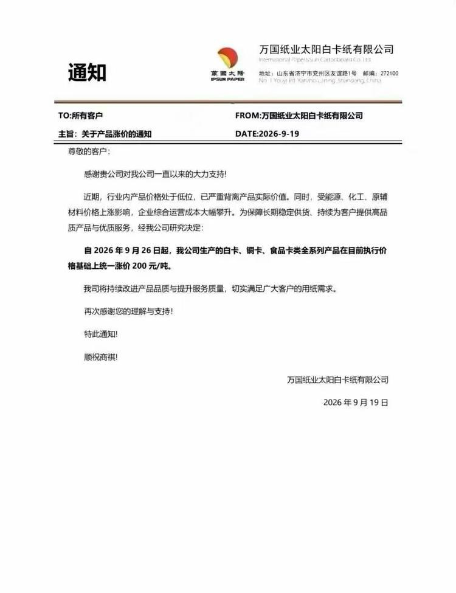
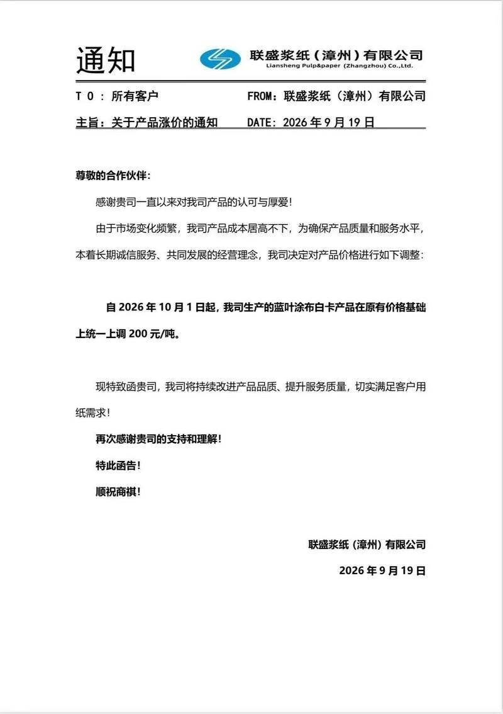
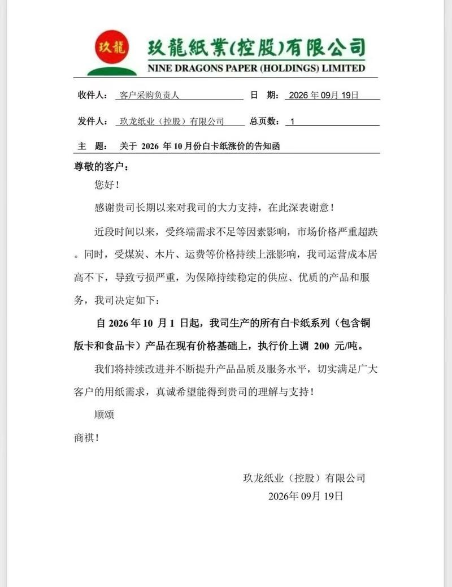
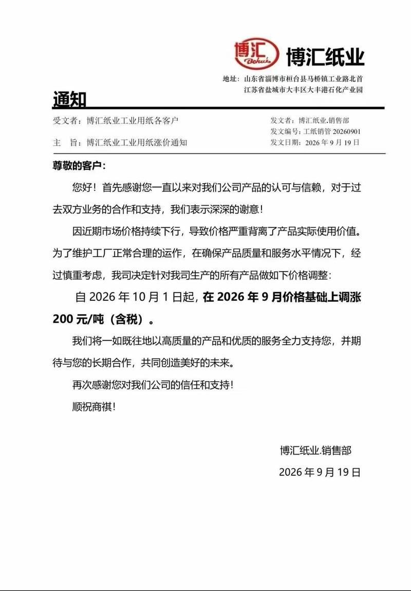
4 图
【中信海外策略|周聚焦】2026-09-20：宏观收紧开启，关注微观流动性
【中信海外策略|周聚焦】2026-09-20：宏观收紧开启，关注微观流动性
【广发金工】基于最新的公募基金持仓数据及高频持仓估计模拟，截止至0918，最新的数据模拟显示，相对0630持仓，偏股型基金整体在一级行业上看相对加仓电子、计算机...
【广发金工】基于最新的公募基金持仓数据及高频持仓估计模拟，截止至0918，最新的数据模拟显示，相对0630持仓，偏股型基金整体在一级行业上看相对加仓电子、计算机、机械设备、煤炭等板块，相对减仓医药、食品饮料、建筑材料等板块，二级行业上看相对加仓半导体、专用设备、消费电子等板块，相对减仓医疗服务、化学制药、玻璃玻纤等板块，详细数据欢迎索取跟踪[玫瑰]
[礼物]【国联民生军工】MLCC更新0920
[礼物]【国联民生军工】MLCC更新0920
[玫瑰]国内跟踪：
1️⃣本周三环集团已正式通知所有代理商上调MLCC价格，涨幅30%—80%不等，新价格自10月1日起正式执行，以原厂出货价为准。此次调涨也带动近期现货价格企稳回升；叠加Q4行业旺季催化，现货价格有望进一步上行，行业价格趋势重回上升通道。
[玫瑰]海外跟踪：
1️⃣消费电子砍单从二线到一线。上半年只有二线手机的 MLCC 供应被砍，目前一线供应商已开始削减对 iPhone 和三星手机的供货。前两周，因其他供应商降低供应量，苹果找村田要产能，村田同意做产能调配，但未签 LTA 或涨价，推测村田借此换取苹果射频的市占率。村田下月第二次削减中国手机MLCC供货配额，据传再砍20%（首次砍约 10%），让客户转找台系或大陆供应商；三星电机也让Samsung Mobile外寻货源。
2️⃣当前MLCC渠道库存整体健康，受NVIDIA GPU升级驱动，需求从22µF跳至47/100µF，供应商集中生产高容料号，数据中心MLCC产品组合显著改善；村田不涨价实为捍卫其他产品线市占率，但若台系或陆系厂商开始涨，村田必定跟进。
[玫瑰]中长期，村田/三星/太诱等将逐步选择性淘汰低毛利率成熟料号甚至部分车规料号，产能加速向AI服务器规格倾斜，未来逐步释放大几百亿颗/月中低端MLCC订单。村田副社长近期公开表示：AI相关需求至少将持续至2028年。#本轮国内原厂面临的涨价周期与国产替代机遇均属历史级别强成长机遇，且当前仍处于中早期阶段，后续空间广阔。
[玫瑰]持续重点推荐MLCC板块，首推原厂：三环、风华、火炬、宏达电子。
☎ 欢迎联系【国联民生军工团队】吴爽/殷超
【HF大制造】9月积极布局机器人，建议节前提升机器人仓位！！！
【HF大制造】9月积极布局机器人，建议节前提升机器人仓位！！！
特斯拉量产提速，零部件先行备产，9月开始拉产能，到年底斜率会很高。
#特斯拉量产节奏：
原计划12月底产线自动化改造完成，包括本体线组装/检测产线、旋转模组及直线模组组装线，目标周产2000-2500台；结合最新进展，我们认为有望提前至11月底到12月初，12月实现稳定周产1000-1500台，并开始向目标周产爬坡。
实际周产进度：8月：100-150台→9到10月：400-500台→11到12月：1000-1500台。
#零部件需提前且要备1个季度安全库存，因此9-11月特斯拉加快下单频率和量级。
催化：#9月底和10月第二周核心供应商赴北美沟通产能。
1、丝杠：
灵巧手微型滚珠丝杠(0401)下单量最大，大幅超过产能爬坡节奏。#供应链：浙江荣泰、恒立液压、杭州新剑（五洲新春）。
身体关节丝杠更新为：4根行星滚柱丝杠+12根滚珠丝杠。#供应链：天创时尚（配套韩国万都，小腿滚珠丝杠）；三花智控（五洲新春配套）；恒立液压、杭州新剑（五洲新春配套）。备选产能：震裕科技。
2、结构件：轻量化+散热类占比大幅提升，#供应链：模塑科技（主力，已获得胸腔、后背、灵巧手结构件量产单，北美生产无需PPA）、均胜电子、岱美股份（送样）；T选定材料供应商：金发科技。其他结构件：蓝思科技、长盈精密等。
3、减速器：#谐波减速器：日本哈默纳科（手腕2款价值最高的）、尼德科。国内当前主要是测试订单并要求加速建产能：科达利。#新增RV减速器：日本纳博特斯克；国产对标：双环传动。
4、电机：三花、拓普；灵巧手空心杯电机切换为微型无框，核心是定子、绕线和铁芯。铁芯新增NDA：震裕科技。
5、轴承：非常重要，是灵巧手、减速器、电机的产能释放的关键瓶颈。T机器人轴承当前ASP超过2万，难点集中在柔性轴承和交叉滚子轴承、关节角接触轴承.#供应商：天创时尚。
6、其他：头部模组升级为塑料面罩及3D景深摄像头，总成：蓝思科技、星宇股份；3D摄像头：奥比中光。 PCB:世运电路。
#组合：天创时尚、模塑科技、科达利、拓普集团、三花智控、恒立液压、震裕科技、五洲新春、奥比中光、均胜电子
【广发机械】周观点更新：推荐半导体设备&船舶，机器人即将迎来放量-20260920
【广发机械】周观点更新：推荐半导体设备&船舶，机器人即将迎来放量-20260920
1.#船舶。马士基官宣26艘18600TEU级LNG双燃料集装箱船订单，计划29-30年交付，其中恒力重工承接20艘、保留12艘备选船；新时代造船承接6艘。这也是马士基与恒力重工首次合作，单船造价在1.93亿‑1.95亿美元。同时，恒力重工即将建造首批LNG船，四期产能投放带来潜在业绩大幅超预期空间。
当前全球船厂排期超过2008年，行业供需失衡加剧是驱动船价上行的最核心因素。看好松发股份、中国船舶、中国动力，是市场中极为稀缺的低估值+高股息+业绩高增长的大市值公司。
2.#半导体设备。逻辑方面，昇腾960DT预计27Q1推出，提前三个季度；960PR预计27Q3发布，提前一个季度。存储方面，长鑫新的扩产框架订单正在逐步落地，长存三期下一批设备有望下单、晋华扩产超预期，拓荆、华海清科等半导体设备厂商陆续上修全年订单预期。
#正如我们从上半年开始就反复强调的，伴随着两存订单的陆续落地，#设备板块后续会持续上修订单预期。加之后续国产算力拉动的逻辑扩产，此轮半导体设备的订单高增有望延续到28-29年。核心推荐长川科技、强一股份、华峰测控、精智达、精测电子、金海通等。
3.#人形机器人。Tesla本周在国内供应商处审核产能，近期爬产速度大幅提升、提前确认产能保障，预计年底达到周产2500台产能。机器人板块已近一年没有行情，交易拥挤度极低、交易量降至冰点水位。优先推荐T链核心公司：恒立、科达利、荣泰、斯菱、北特等，以及供应链最大公约数绿的谐波、奥比中光。
今晚21:00 #人形机器人电话会议，欢迎接入
今年我们重磅推出：机械行业框架十一讲，欢迎收听回放。
[礼物]【国泰海通通信】#26年8月--海关数据出炉@0920
[礼物]【国泰海通通信】#26年8月--海关数据出炉@0920
1️⃣#【江苏光模块】： 出口21亿元（环比+29%），#旭创/天孚/COHR等。
2️⃣#【四川光模块】： 出口16亿元（环比+12%），#新易盛/东山精密-索尔斯等。
3️⃣#【湖北光模块】： 出口3.7亿元（环比-37%），#汇绿生态/联特科技/光迅科技/华工科技/嘉元科技-恩达通等。
4️⃣#【上海光模块】： 上海出口2亿元（环比-11%）；浙江出口3.1亿元（环比+13%），#剑桥等。
5️⃣#【光缆广东-美国】： 出口8.4亿元（环比+16%），#太辰光/特发等。
6️⃣#【光缆湖北-美国】： 出口7.1亿元（环比+98%），#长芯博创等。
7️⃣#【光缆上海-美国】： 出口2.6亿元（环比-28%），#康宁等。
海关光缆出口单价再创年内新高，DCI光缆出口北美云厂是今明年大趋势；光纤出口单价仍处历史第二高位；光纤缆及光模块MPO海关数据库欢迎交流~
[拥抱]余伟民/王彦龙/董伟康15102187507
汇报2❗️【天风电新】硅电容更新推荐（1）: 光模块率先放量，AI服务器市场需求弹性大- 0920
汇报2❗️【天风电新】硅电容更新推荐（1）: 光模块率先放量，AI服务器市场需求弹性大- 0920
———————————
🌟【核心结论】硅电容主要用于超高频去耦领域，光模块领域率先放量，#AI服务器用量弹性很大：一是功率提升，超高频去耦需求增加；二是随着制造工艺迭代（DTC →VIC），硅电容容值持续提升，对MLCC替代空间打开，重点标的【英集芯】【颀中科技】。
1、技术优势：相较其他电容，硅电容是用半导体工艺制造，核心是高频性能好：
①ESL极低（可忽略），在10GHz超高频场景下，滤波效果远优于MLCC；②尺寸小，厚度薄，可与芯片封装在一起；③高温下容值无衰减。
当前问题：①成本偏高；②容值上限低（目前量产容值最高为104，105及更高容值仍在研发中，VIC工艺突破后可做到106以上）；③产能受限。
2、技术工艺：台积电、三星这类具备半导体制造能力的厂商有天然工艺优势，Fabless厂商需寻找代工企业，封装产能是限制硅电容厂商出货的瓶颈。
深沟槽DTC：当前成熟路线，为光模块场景的主流方案，但无法嵌入封装内部，容值上限较低，沿用传统MEMS产线。
过孔集成VIC：可实现容值提升（硅电容主要技术迭代方向），且能够埋入封装内部，适配先进封装高电流、高集成度需求，是未来AI服务器的主流方案，主要玩家包括台积电、三星、Empower。
3、竞争格局
当前硅电容市场龙一是村田，市场份额约为50；其余为Empower、罗姆、三星电机、威世、台积电等；其中光模块领域以村田为主，GPU、CPU则以Empower、三星电机为主
4、AI上的应用
✅AI服务器：用在芯片周边超高频滤波场景。随着功率提升，10GHz以上的高频杂波信号的影响会逐步增强，Rubin Ultra成为硅电容应用节点。
用量&价格：容值高，需要用在104及以上，105及以上需要VIC工艺；当前单机柜用量为50颗，单价为1.5美元左右；未来单机柜有望通胀至5000颗+
与mlcc的关系：互补，搭配使用）。硅电容是解决超高频去耦，MLCC是解决中频高频。
当前AI服务器单机柜MLCC总用量约50-60万颗，其中去耦MLCC占50%，而去耦MLCC中容值105&106占比50%；1颗硅电容可替代2-3颗MLCC，单机柜理论硅电容用量上限约6万颗左右（目前是在芯片周围使用），若容值上限突破后，用量更大。
✅光模块：1.6T单模块用量约30颗，3.2T单模块用量预计50-60颗。
容值较AI服务器低，主要用103为主；并非所有1.6T光模块都标配硅电容，取决于厂商设计能力，今年3-4月以来光模块硅电容订单明显放量，6个月生产周期。
———————————
欢迎交流：孙潇雅/杨志芳
【海外观察】中东基建更新：美伊释放谈判缓和信号，伊朗重建预期升温 - 0920
【海外观察】中东基建更新：美伊释放谈判缓和信号，伊朗重建预期升温 - 0920
————————————
据央视新闻，当地时间9月19日伊朗高级消息人士披露，卡塔尔、巴基斯坦斡旋下美方表态准备与伊朗谈判并谋求达成协议，# 核心前提为美方重返伊斯兰堡谅解备忘录并履约，伊朗方要求获得可信安全保障，下周伊朗总统访美有望成为外交关键催化节点。
海外 EPC 工程属于资金密集、地缘高度敏感业务，长期受国际制裁约束，伊朗境内交通、工矿、市政基建大量项目停滞，制裁解除预期将直接打开工程总包业务空间，安全履约保障是海外工程落地的核心前置条件。
国内头部工程企业早年在伊朗市场积累大量项目经验，具备完整勘察设计、成套设备供应、施工交付全链条 EPC 能力，中工国际、中钢国际均有中东大型项目落地案例。
随着美伊外交缓和预期发酵，若后续谈判取得实质性进展，伊朗国内基建补短板需求有望重启，国内具备中东项目积淀的工程企业将优先受益订单释放。
投资建议
地缘缓和预期下海外工程订单落地壁垒边际下降，伊朗重建市场空间有望重估，事件驱动带来海外工程业务增量预期。
继续重点推荐中东 EPC 总包【中工国际】、【中钢国际】，关注【铁拓机械】、【苏交科】。
————————————
☎最新更新欢迎联系
国内超节点专家交流要点：
国内超节点专家交流要点：
1、2026年国内超节点实际出货与交付节奏
Q3为小批量交付，单季交付量≈上半年整个半年；Q4为正式批量交付，单季≈Q3的两倍，各家单季接近1000套
2、2027年头部三家超节点规划
2027年字节超过一半可能采用华为方案；腾讯约一半、阿里约20-30%。用到华为方案的芯片累计约150万颗
3、整机总成角色与供应链体系
1）CSP主导锁定高价值关键物料——算力芯片（GPU/PPU/CPU）与存储（与原厂年度框架/产销协议锁定）、交换芯片、光模块、连接器、液冷、电源
2）组装厂自主把控环节：PCB（CSP只给白名单）、机柜结构件与滑轨、机框、部分线缆、风扇、组装等
4、单机柜价值量拆分
阿里128卡方案约1700万、腾讯64卡方案约800-900万、字节72卡方案约900万
5、需求驱动：超节点快速上量，支撑国产大模型推理任务
6、CSP资本开支与资金状况
字节3000多亿元，腾讯最高可能到约2500亿元，阿里2300-2400亿
7、服务器滑轨环节专题
川湖份额约70-80%，核心是专利壁垒：超薄、公差、无工具滑轨解决方案，国内海达尔、星徽等
【国盛计算机臻选】华为领航三大看点：单芯提速+系统工程创新+软硬全栈优化
【国盛计算机臻选】华为领航三大看点：单芯提速+系统工程创新+软硬全栈优化
🌟#单芯：节奏提前、性能翻倍。①960进度超预期：960DT 27Q1就绪（提前三个季度）；960PR 27Q3就绪（提前一个季度）。②一年一迭代：970、980在算力、内存、互联带宽均有较大提升。
🌟#系统级工程：再度明确超节点技术路线、910C及950超节点已规模商用
①960超节点首用NPO技术：4x提升至4096卡规模，最大8E FP8算力，1PB HBM容量，二层CLOS组网系统上限达百万卡，#首用NPO技术、Hi-ONE量产推进，单引擎7.2T传输容量，4.8万*800G光模块→5500*Hi-ONE。Atlas 860风冷版、960液冷版将分别于27Q2、27Q3推出。
②通算超节点方案升级：最大支持4096节点，并形成高达256TB的统一内存池，优化十万级别沙箱场景和复杂向量检索场景。
🌟#软硬共建：对内统一协议、对外生态共建
①互联协议：灵衢UnifiedBus统一互联，把多种互联协议统一为灵衢协议，来大幅度减少协议的转换开销。
②Infra优化：基于灵衢推出AI记忆存储OceanStor M900，减少数据搬运次数和CPU转发，降低I/O时延和首token时延。
③生态构建：与Deepseek等公司生态合作加深，CANN计算架构及算子库持续完善，夯深生态壁垒。
🔥观点重申：华为单芯片节奏超预期、超节点系统级工程优化、Hi-ONE量产推进、软件优化及生态能力上均有亮点，华为凭借【单芯性能攻坚+计算&互联能力贯通推动工程化能力突破+软硬全栈自研赋予的软件端优化空间】，迭代能力和生态壁垒正向飞轮加速，华为链有望持续受益。
⚡️建议关注：华为服务器关联厂商（软通动力、神州数码、拓维信息等）及国产算力产业链核心环节标的（代工、GPU、交换芯片、关键环节零部件等）。
⚠风险提示：技术迭代不及预期；行业竞争加剧风险
☎详情欢迎联系：孙行臻/王心悦
🔥【招商电子】PCB产业链周度观点更新-20260920
🔥【招商电子】PCB产业链周度观点更新-20260920
#对二三线PCB厂商Q3-Q4业绩超预期表现的交易行情尚未结束。
结合产业链调研，CCL每月涨价节奏保守预期持续至 2027 年 6 月、后高位横盘，乐观预期将持续至 2027 年底，本轮与历史周期的本质区别在于供给端存在硬约束（玻纤布供给紧张，AI 需求占用玻纤布大量产能；铜箔HVLP升级推动加工费用持续上涨），涨价核心驱动为供给端而非需求端。#PCB环节顺价机制全面打通，定价模式发生根本性变化，从"跟随材料同频"升级为"提前锁定未来 2-3 个月涨价预期"，按照出货时点的市场即期现货CCL价格进行定价，Q3多数中小PCB厂商净利率已修复至历史高点10+%，结合订单排产情况，预计净利率在Q4还有进一步上升空间。
建议继续关注中小PCB厂商：#【超声电子、奥士康、崇达技术】、满坤科技、澳弘电子、博敏电子、YD电子、中京电子、四会富仕、万源通、金禄电子、世运电路等。
#CPO对CCL/PCB的降规的传闻更多是影响情绪，不影响中短期的基本面。首先这是训练场景下的新增市场，其次CPO商业化部署进度和出货量被市场显著高估，再者CPO交换机PCB的价值量更多的转移到了载板上。传统高速交换机的升级和需求将依旧保持快速增长态势。#相关CCL、PCB标的的短期回落将成为新一轮的买点。建议关注：#【生益科技、南亚新材、华正新材】【沪电股份、深南股份、生益电子、兴森科技】，#尤其生益科技从下半年正开始在高阶高速材料上大幅提升份额，并在载板基材有不错的技术储备和潜力。
中大票看好#【景旺电子（参考我们最新的观点更新）】【生益科技/电子】【方正科技】【广合科技】等。
近期PCB产业链跟踪报告：
【招商电子】PCB行业跟踪报告：AI需求驱动高景气周期，供需、涨价与技术迭代交叉验证 ↗
鄢凡18601150178/程鑫13761361461/涂锟山，欢迎与我们交流
#矢量网络分析仪（VNA）将成为AI PCB交付良率的关键检测设备。
#矢量网络分析仪（VNA）将成为AI PCB交付良率的关键检测设备。
26-28年产品交付良率或将成为比产能规模成为订单份额划分更为重要的评判指标。AI-PCB作为算力设施基础元件，其可靠性和稳定性是下游客户极为关注的性能指标。PCB厂商为提升自己的良品交付率，将进一步加大对检测设备的采购。而随着AI PCB高频高速性能的逐代际大幅提升，下一代：PCIe 6.0/7.0（64/128GT/s）、1.6T 以太网（224G PAM4），三次谐波需覆盖110GHz+，普通 TDR 示波器带宽上限不足 30GHz，无法捕捉高频损耗、串扰，只有 VNA 满足全谐波频段测量。VNA是全产业链唯一可同时完成材料表征 + 频域通道 S 参数 + 时域阻抗缺陷定位的核心仪器。目前 40GHz 以上毫米波 VNA 此前由是德、罗德、安立垄断，采购交付周期大幅拉长；当前#中【电科思仪、鼎阳科技、普源精电】、南京厚德均有相关高端VNA的产品布局和送样。
这个PCB设备方向有点像炒光模块的示波器设备，预期差很大，产业链逻辑（国产替代空间大）很好，可以关注一下。我也在学习跟踪[呲牙]
【开源机械】务必重视金刚石散热0-1量产元年，预计率先用于GPU散热！-金刚石系列更新6
【开源机械】务必重视金刚石散热0-1量产元年，预计率先用于GPU散热！-金刚石系列更新6
💎第一性原理来说，世界上最快的东西是光，所以连接最后一定是光，这个世界上最硬的是金刚石，最后一定用它打孔，这个世界上导热最快的是金刚石，最后一定用它散热。
[太阳]金刚石在散热应用上，预计首先在#国产芯片内封装率先落地。
1.怎么用在芯片内部封装？将厚度约7-800微米的裸die削薄约3-400微米后，贴装金刚石片键合/金属化低温焊接，整体厚度与原有裸die尺寸一致，不影响后续封装流程。甚至老芯片也可通过该改造搭载热沉片，试验周期仅需2-3个月。
2.芯片厂为什么要用？该工艺本身成熟，假设4die的GPU价格20w+元，成本增加仅几千元，但对GPU性能增益10-20%，算力提升性价比极高
3.放量时间点怎么看？预计今年Q4国内芯片厂有望率先规模化放量。台积电海外尝试多种方案，包括难度较高的wafer to wafer，预计可能在27年能看到方案路线明晰，但预计最早落地的也是芯片端的金刚石热沉片。
4.市场空间怎么看？中期维度看，以年GPU1000w颗来看，考虑GPU多die，金刚石热沉片匹配每个die一个，按极端渗透率100%假设，芯片端市场空间可以看到约200-300e；再考虑光模块、芯片侧以外的应用，金刚石散热市场可看到千亿规模。
[太阳]详细纪要和近况欢迎联系我们。
联系人：佘炜超/孟欣
[太阳]【国海医药】工信部等发布《 》，全面看好创新药/CXO产业链；
[太阳]【国海医药】工信部等发布《
医药工业发展“十五五”规划 ↗ 》，全面看好创新药/CXO产业链；
[玫瑰]9月18日文件公布，要点：
定量规定指标，至2030年：
（1）、医药工业企业营收规模；（2）、研发费用≥10；（4）、FIC产比超过25%；（6）、创新器械上市≥200个；（7）、创新药产业增速CAGR≥20%；（8）、年营收超过100亿企业超过50家；（10）、年销售超10亿美元品种超过5个；
规划时间2026~2030年
[玫瑰]较2022年发布“十四五”规划：
（1）定位提高：“新兴支柱产业”
（2）明确定量≥临床阶段FIC新药占比超25%（前次无）
（3）技术方向更加具体：重点领域ADC表述变更为XDC；新增递送机制AAV/LNP，iPSC，脑机接口，类器官/器官芯片，AI制药等表述；
（4）规模/出海更加明确：前次为“龙头企业集中度提高”，本次：50家百亿企业、20个千亿园区、5个十亿美元品种；
（5）首次强调全链条医药国际竞争力：CRO/CDMO；
[玫瑰]观点：
五年文件前后对照，更多指标量化：FIC数量、10e美金销售额产品数量等，凸显创新药行业未来5~10年确定新；
技术方向更加具体，AI制药赋能新药研发范式；
看好全产业链：（创新药+CXO）×AI
[玫瑰]标的：
创新药龙头【恒瑞医药】年内新低，国际合作出海加速；
平台化出海企业【信达生物】【石药创新】等；
中小市值α首推【康诺亚】
CXO方面仍然看好【3药明】、【百奥赛图】、【维亚生物】
[太阳]文件原稿/对照稿、观点交流联系【国海医药】曹泽运
【广发煤炭｜数据跟踪】8月用电量～
【广发煤炭｜数据跟踪】8月用电量～
[玫瑰]#8月全社会用电量10332亿千瓦时、同比+1·7% （7月同比+1.7%，增速环比持平）；1-8月累计用电量71730亿千瓦时，同比+4.3%。
[玫瑰]8月第二、三产业和居民用电量同比+2.4%、+5.1%、-4.0%（7月增速+3.0%，+4.8%，-5.1%），#增速相比7月二产回落、三产回升、居民用电降幅收窄。1-8月累计二产+4.4%，三产+7.1%，居民+0.3%。
[玫瑰]#高技术及新兴行业用电量维持高增： 高技术及装备制造业用电量8月和1-8月同比分别+7.2%/+9.3%；此外，充换电服务业、互联网数据服务1-8月用电量分别占总用电量约1.6%和1.0%，同比分别+55.1%、+42.5%；8月增速分别+51.2%、+37.9%。
【浙商轻工史凡可】周更新：延续出海成长主线，液冷和烟草β景气；关注本周造纸调研更新
【浙商轻工史凡可】周更新：延续出海成长主线，液冷和烟草β景气；关注本周造纸调研更新
[烟花]观点：1）出海分化，欧美高端消费vs跨境电商景气/品类中摩托车vs潮玩超额/地产链低位；2）箱板阶段性底部显现，旺季提涨渐近；3）液冷产业链高景气。
[玫瑰]出海：1）#西锐 #乐舒适 产品/渠道/供应链/组织多维度领先，久期成长确定性强； 2）9.24前后中美300亿美元对等关税降税安排有望落地，轻工产品有望纳入，跨境电商受益最为直接，推荐#致欧 vs关注#恒林 #乐歌；其他轻工赴美产能已转至东南亚的受益幅度有限，优选底部龙头 #俩英科 #匠心 #建霖 #永艺； 3）近期沟通#隆鑫 SR450爆款出货快速提升、500cc极屿智行概念车CU-X亮相摩展，#春风 四轮大单品快速放量。
[玫瑰]造纸：本周深度沟通造纸，反馈箱板近期供给端受转产和进口纸冲击、下游库存较高等拖累，10月旺季龙头企业停机&涨价函有望推动价格提涨；此外针叶浆龙头挺价和落地意愿强。持续首选推荐#太阳 #玖龙 #理文， 关注#仙鹤 #博汇等。
[玫瑰]包装：塑包短期受制于高油价，但#永新 #紫江 预期利润稳增且均具分红价值（股息率5-6%）；金属罐底部价值显现，重视9-10月外资与年末价格谈判。
[玫瑰]潮玩：#布鲁可 关注10月WF/CTE玩具展密集上新；#泡泡 国内线上GMV 8月环比7月企稳略增（久谦）；#晨光 通过情绪文具+渠道赋能份额优势稳固。
[玫瑰]个护：#润本 秋冬季主推蛋黄油系列，新增乳木果润唇膏；#登康 大单品仍在成长期，预期Q3成长仍优异；#百亚 全国份额仍在上升期。
[玫瑰]家居：8月电商住宅家具同比-15%（7月-30%）环比改善，但仍受交房&消费力不足影响，三季度经营或仍承压，展望Q4在828现房政策下二手房预期向好，综合实力&分红首选#公牛 #顾家 #慕思 等。
[玫瑰]烟草：利税压力下国内新烟节奏提速，HNB国标反馈截止9.26、27年预期逐步试点销售，关注产业链机遇：首选低预期#中烟 （进出口平台+业绩改善+管理层变化），耗材 #恒丰 #华宝，器具 #思摩尔 #盈趣。
[玫瑰]AI+：1）液冷：#裕同 Q4预期液冷兑现+iphone18系列发布催化 #金富 快融落地扩产在即 #美盈森 导热垫片&凝胶预计26Q3开始放量。2）#3D打印： 高光纯PLA涨价，上游耗材景气度提升，关注#家联 等。
风险提示：下游需求不及预期，竞争格局恶化等
【信达消费】主要纺织原材料价格跟踪0920
【信达消费】主要纺织原材料价格跟踪0920
[太阳]羊毛：价格高位回落，但留拍率维持低位。9月16日AWEX东部市场指数（EMI）收报1858澳分/1323美分，较上周分别-1.12%/-2.51% 。羊毛价格有所回调但流拍率保持低位，供给紧缩+产业链低库存下易涨难跌判断不变。
[太阳]棉花：内外棉较高点明显回调。外棉方面，9月18日cotlookA收于92.30美分/磅（周环比-6.01%，月同比-3.85%），回落明显；内棉方面，国内CCIndex 9月18日收于17464元/吨（周环比-3.85%，月同比-2.81%），亦有明显回调。内外棉经历了前两周创新高和高位震荡行情后，本周回调明显。内外棉差价3835.9元/吨，回升至高位。
[太阳]锦纶产业链：延续涨价，加工费环节有修复。PA6方面，9月18日主要原材料己内酰胺收于14420.00 /吨（周环比+1.09%，月同比+16.27%），PA6切片价格收于15400元/吨（周环比+6.21%，月同比+19.69%），锦纶POY收于16075元/吨（周环比+3.54%，月同比+14.82%）；差价即加工费约1655元/吨（周环比+31.35%，月同比+3.55%），有所修复。PA66方面，9月18日原材料己二酸收于9600.00 元/吨（周环比+4.92%，月同比+14.63%），PA66收于19266.67元/吨（周环+0.87%，月同比+8.04%），下游产品涨价明显。
[红包]联系人：姜文镪18817619332，刘田田15101097934
【国金电新】锂电池产业链价格数据周度跟踪（9月第3周）
【国金电新】锂电池产业链价格数据周度跟踪（9月第3周）
✚ 本周价格上涨比较多的是：PC（4.07%）、石油焦（3.41%）、针状焦（3.19%）、EMC（2.78%）、DMC（1.33%）、5μm湿法基膜（0.71%）、9+3μm湿法涂覆膜（0.62%）。
▬ 本周价格下降比较多的是：氢氧化锂（-6.18%）、碳酸锂（-5.76%）、硫酸钴（-5.51%）、三元材料622（-4.02%）、三元材料523（-3.77%）、海运BDI指数（-3.91%）、三元材料811（-3.14%）、四氧化三钴（-2.94%）、MB钴标准级（-2.65%）。
其他材料本周价格变动不大。
📮【铜周度更新】关税降温及加息落地，低库存+补库共振，铜价先抑后扬
📮【铜周度更新】关税降温及加息落地，低库存+补库共振，铜价先抑后扬
1️⃣铜价回顾
本周周初延续关税降温后的跌势，叠加中东推升油价与美联储加息计价，但基本面非美低库存与矿端紧缺格局未改，叠加中美经贸交流积极，铜价先抑后扬。本周LME铜收于14562.0美元/吨（+2.36%），COMEX铜6.7155美元/磅（+2.42%），SHFE铜109620元/吨（+0.58%）。
2️⃣宏观方面：FOMC加息落地
1）美联储将联邦基金利率目标区间上调25bp至3.75%–4.00%，票委全票通过；声明称通胀仍高、经济活动稳健扩张；点阵图中值暗示年内或再加息一次（多数官员偏再加1次）。加息本身已被充分计价，决议未释放更强鹰派冲击，铜价更多交易“利空出尽”。中美经贸团队就降税等议题交流提振风险偏好。根据CME FedWatch，截至9月20日市场对美联储10月加息预期为57.6%。
2）数据方面：国内8月M0同比为11.2%（前值11.6%），M1同比为4.1%（前值4.0%，wind预期3.95%），M2同比7.5%（前值7.7%，wind预期7.64%），8月社融规模存量同比为7.2%（前值7.4%，wind预期7.28%），8月工业增加值当月同比为5.2%（前值4.5%，wind预期4.71%），固定资产投资累计同比为-7.2%（前值-6.7%，wind预期-7.19%）；美国8月零售销售同比为6.01%（前值5.03%），9月12日当周初请失业金人数为19.6万人（前值20.6万人）；欧元区8月CPI同比为3.2%（前值2.9%），环比0.4%（前值0.2%），核心CPI同比为2.4%（前值2.5%），环比0.2%（前值0.0%）。
3）展望下周：国内将披露1年期与5年期LPR，美国将披露9月19日当周初请失业金人数，欧元区将公布8月货币供应量数据。
3️⃣矿冶方面：TC续创新低，印尼冶炼复产，矿紧格局未改
9月18日SMM进口铜精矿指数（周）报-221.89美元/干吨（-12.19美元/干吨），负TC续创低位，矿端紧张格局未改；本周现货市场成交数量较上周持续下降，冶炼厂对当前深度负加工费抵触情绪持续升温。Freeport Indonesia旗下两座铜冶炼厂相继恢复生产；Konkola Copper Mines（KCM）宣布，旗下赞比亚Nchanga铜冶炼厂已正式恢复生产，并完成复产后的首批铜阳极板浇铸。
4️⃣需求方面：铜价回调激活下游补库，开工率有所回升
本周（9月11日-9月17日）精铜杆开工率65.82%（+4.32pcts），电线电缆开工率67.46%（+3.75pcts），漆包线开机率72.73%（+5.20pcts）。铜价回调后下游积极点价补库，且少数企业提前存有节前备货计划，订单得到边际提振，但当前线缆方面终端市场尚未迎来实质性需求回暖。
5️⃣库存方面
截至9月17日周四，国内电解铜社会库存8.91万吨，较周一去库0.12万吨，较上周四累库0.16万吨；保税区库存3.45万吨（上海3.16万吨，广东0.29万吨）。截至9月17日，全球LME铜库存约25.51万吨，较上周五累库1.22万吨，截至9月18日，COMEX铜库存约76.74万短吨，较上周五去库71短吨。
6️⃣矿端动态
1）Freeport Indonesia旗下两座铜冶炼厂相继恢复生产。PT Smelting冶炼厂8月因炉体故障停产检修约两周，目前已恢复正常运行，扩建后阴极铜产能约34.2万吨/年；Manyar冶炼厂则随着Grasberg Block Cave（GBC）地下矿铜精矿供应逐步恢复，于8月重新投料，并于9月恢复阴极铜生产，目前正处于爬产阶段。
2）秘鲁能源与矿业部发布的数据显示，秘鲁7月铜产量为236,515吨，同比增加3.7%。1-7月累计铜产量为1,599,115吨，同比增加2.2%。
7️⃣上市公司动态
1）紫金矿业于9月16日公告，全资子公司紫金厦门控股与厦门溥泉、昆坤投资等合伙人签署《厦门时代深远创业投资基金合伙企业（有限合伙）之合伙协议》，紫金厦门股权作为有限合伙人之一参与投资厦门时代深远基金，紫金厦门股权认缴出资金额为人民币100,000万元，持有基金20.4081%的认缴比例，基金主要投资于人工智能、具身智能、科技应用、前沿科技等领域。
8️⃣风险提示
美联储货币政策超预期风险、中东地缘政治风险、矿山扰动及罢工超预期风险、冶炼检修动态超预期风险、下游需求不及预期风险、进口铜到港节奏超预期风险等。
XZ能源化工：❗️化工抄底正当时，次序可抄Q2作业
XZ能源化工：❗️化工抄底正当时，次序可抄Q2作业
第一，高溢价、高运费对炼厂和下游的传导压力，可能已经达到极致，后续有望缓和。静态来看，下游传导肯定是不畅的，点对点价差肯定是收窄的，但是最差的时候正在过去。第二，关注成品油出口配额和保油减化。
📈改善的次序可以抄二季度的作业：①涤纶——先从协同品种开始，一定程度上对原油脱敏的。除了涤纶，还可以关注氨纶、染料等。
②炼化——逻辑不能完全摆脱油价，但是随着油价回落，现货溢价和运费缓解，炼化价差会得到改善。1200-1300亿的荣盛恒力位置上我觉得也没什么问题。
③其他回调低估品种——万华、扬农、宝丰、卫星等。（以上是指时间顺序，不是受益顺序）
<浙商食饮|张潇倩> 食饮周观点：白酒双节动销符合预期，黄酒估值先行（20260921）
<浙商食饮|张潇倩> 食饮周观点：白酒双节动销符合预期，黄酒估值先行（20260921）
本周沪深300/食饮/白酒涨跌幅分别-0.6%/-0.5%/-1.1%。子赛道看，其他酒类/软饮料/预加工涨幅居前（+15%/3%/3%）；个股看——A：会稽山/古越/西麦涨幅居前（+39%/24%/15%）；H：溜溜梅/安井/百威涨幅居前（+18%/7%/3%）。
1️⃣白酒：预计双节动销接近持平，高端酒批价稳定
一、盘面情况：本周因资金面叠加双节调研反馈符合预期影响，盘面表现相对稳定。
二、双节前瞻：预计26年双节动销接近持平（25年双节动销同比-30~-40%）-符合预期，其中大众宴席/高端礼赠消费同比改善，商政务拖累。品牌/各价位带分化，预计动销正增单品：飞天-精品-系列酒/八代/青花20-玻汾/柔雅淡雅单开/洞6-9/海之蓝等。礼赠本周达小高峰，飞天/八代批价仍稳在1730+/970元+。下周为宴席预定小高峰，关注大众消费是否超预期。
三、投资建议：坚定看好α突出的茅台，及Q2-3业绩率先回正的区域酒标的（今世缘/古井/迎驾等）。
2️⃣非白酒：黄酒估值先行，大众品或迎双节催化
一、盘面情况：本周黄酒涨幅居前，主因逻辑催化（渠道利润率较高下白酒大商入局加速，后续高端黄酒动销若起来，则收入向上空间打开+净利率或提升，预期估值先行）。
二、调研反馈：①西麦：7-8月预计发货增速25%+，9月送礼旺季降至+粉粉放量（加大投放），有望延续较好增长；②安井：近期主业经营在高基数下表现积极，同时在鱼浆成本上涨背景下、预计旺季部分产品有望带头提价；③伊利：以集中竞价交易方式回购公司股份（10-20e）；④ 农夫：26Q3无糖茶延续高增，H2成本压力略升但可控，预计27年收入双位数增长。
三、投资建议：双节将至，礼盒属性较强（春节已超预期）相关产品亦或迎催化，零食/餐供低基数下有望迎弹性增长，重点关注。“均衡配置”风格下，重点推荐：
① 大众品里业绩稳+高股息+有安全边际+价值底标的。伊利/颐海/海天/东鹏/农夫等。
② 有β逻辑的乳制品板块推荐。上游优然/现代/天润；下游新乳业/蒙牛/伊利/妙可。
③大众品强α/或迎双节催化标的。安井/燕啤/安琪/百龙/盐津/西麦/卫龙/万辰/百润等。
----------------------
浙商食饮 张潇倩Iris/孙天一/杜宛泽/何宇航/隋牧含/杨美云
【周观点 0920】草铵膦、聚乳酸价格延续上涨，中美互降关税清单或利好化纤及染料
【周观点 0920】草铵膦、聚乳酸价格延续上涨，中美互降关税清单或利好化纤及染料
[礼物]#本周行业观点1： 草铵膦产需向好、持续去库，产品价格触底反弹
👉🏻2017年以来国内草铵膦行业产能、产量保持增长，目前国内草铵膦产能17.1万吨/年，1-8月产量达到9.43万吨（同比+34.4%），年化开工率82.7%，2025年5月以来行业月度开工率高位震荡，行业库存持续下降。2025Q4以来价格触底反弹，9月18日草铵膦价格55,000元/吨，同比+23.6%。【推荐标的】利尔化学、利民股份等。
[礼物]#本周行业观点2： 成本支撑+3D打印需求向好，PLA产业链景气向上
👉🏻聚乳酸PLA主要采用“乳酸—丙交酯—聚乳酸”的“两步法”工艺，2025年国内PLA表观消费量17.6万吨，同比+42%。2026年上半年3D打印设备产量同比增长48.5%，消费级3D打印需求旺盛带动PLA在熔融沉积成型3D 打印领域的消耗量在快速增长，乳酸/聚乳酸景气上行、价格上涨。【推荐标的】金丹科技、海正生材、联泓新科等。
[礼物]#本周行业观点3： 中美互降2000亿商品关税利好纺服上游化纤、染料
👉🏻美国贸易代表办公室正加快推进对华约300亿美元进口商品的“对等降税”程序，重点降税产品范围消费品涉及纺织服装鞋帽等，将有效缓解轻工、基础制造等行业的出口成本压力；叠加各跨境电商平台的旺季流量加持，服饰类卖家或将迎来业务发展期，进而带动上游化纤、染料等原料需求向好。
[礼物]#欢迎联系资料发送
1️⃣金选路演15期PPT
2️⃣中盐化工/新和成/宁科生物/藏格矿业KP钾矿项目解读等纪要
[礼物]#推荐标的
1️⃣拐点明确以及高弹性：
纺服化纤链：桐昆股份、恒逸石化、新凤鸣；华峰化学、新乡化纤、泰和新材；三友化工、中泰化学；浙江龙盛、闰土股份等；
制冷剂：巨化股份、三美股份、永和股份、东岳集团、昊华科技等。
磷化工：云图控股、川恒股份、云天化、兴发集团等；
2️⃣双碳背景下具有全球优势的龙头：
煤化工：华鲁恒升、鲁西化工、宝丰能源等；
石化：恒力石化、荣盛石化、万华化学、卫星化学等。
3️⃣ AI材料：
传统龙头布局AI材料：巨化股份（PFA+PTFE）、苏博特（AI4S，液冷管道）、兴发集团（磷化铟）、泰和新材（芳纶）等；
PSPI&电子化学品：利安隆、瑞联新材、滨化股份、东材科技、圣泉集团等。
【染料更新】
【染料更新】
9月19日，H酸报价从15w涨到20w，H酸-活性涨价是近期染料行业最大的预期差。
利元爆炸停产后，H酸目前实际的格局不比还原物差。
重点推荐唯一在产H酸的上市公司浙江龙盛，建议关注活性染料龙头闰土股份、吉华集团、锦鸡股份、安诺其。
20260920周末消息汇总
20260920周末消息汇总
其他
1.伊朗消息人士：美方称已准备好与伊朗进行谈判
2.商务部：何立峰将于9月19日-23日率团赴美国与美方举行经贸磋商
3.医药：美国据报拟放行中国新药授权交易
4.十部门：鼓励旅游企业整合房车销售 培育壮大房车消费市场
5.快递“反内卷”引发新一轮涨价 多家公司今起安徽区域单票最低上调0.15元
6.染料：9月19日，H酸报价从15w涨到20w
AI
1.应用
①腾讯WorkBuddy上线“应用生成能力”
②阿里AI登顶《
科学 ↗ 》：全球首个专家级通用医疗影像模型 一个模型识别146种病症
2.MLCC:“电子工业大米”价格最高涨十倍 行情剧烈波动
3.光纤：电信集采A2光缆，头部四大家均220元顶格报价，和散纤市场价相同，由此可见，供需仍非常紧张
4.Anthropic据悉将原定的IPO推迟至11月
5.特朗普：将组建一支“人工智能部队”
个股
1.长鑫科技宣布第五代技术平台正式量产
2.海光信息将发布新品类芯片
3.新华传媒：拟发行股份购买界面财联社100%股权 股票下周一复牌
4.上交所：依规对新股沈鼓集团异常交易相关投资者采取暂停账户交易等自律监管措施
【华创海外】美股每日简报2026.09.19（周五）
【华创海外】美股每日简报2026.09.19（周五）
🍁美国宏观
1. #美国市场： 10年期美债收益率盘中升破5%，10月加息概率升至55.4%
标普500收涨0.17%、纳指收涨0.40%、道指收跌0.18%；WTI收于$100.30，市场宽度仍偏弱。高油价与高利率继续强化通胀压力，并压制权益估值扩张。
2. #美国： 新俄罗斯制裁法引入最高100%关税工具
特朗普签署新法，要求对俄罗斯油气最大买家及主要制裁规避方实施最高100%关税。若执行范围扩大，可能进一步影响全球原油流向并增加贸易、能源价格及通胀不确定性。
🍁AI
1. #OpenAI： 预计2026—2030年累计负自由现金流$2780亿
公司预计2030年前计算及基础设施支出约$8560亿，收入由今年$360亿增至2030年$3500亿；3月融资$1220亿预计2028年前耗尽，AI算力扩张的持续融资需求进一步明确。
2. #甲骨文： $180亿AI数据中心贷款跌至面值89—91美分
新墨西哥Project Jupiter相关债务向更广泛投资者出售受阻，项目还面临当地环保阻力及天然气管线受阻；市场正重新评估甲骨文以高杠杆推进AI基础设施扩张的融资成本和执行风险。
3. #Anthropic与#Accenture： 五年各至少投入$10亿建设AI模型独立评估能力
双方合计承诺至少$20亿，由Accenture旗下Faculty评测及红队测试Anthropic前沿模型；Accenture盘后涨约7%，AI安全评估开始形成可量化的企业服务投入。
🍁燃气轮机
#韩国与#美国： 讨论$223亿、6.3GW德州燃气发电项目
项目拟为AI数据中心和半导体工厂供电，计划先建设1.4GW燃机设施、再增加4.9GW联合循环；方案仍在讨论，若落地将形成大型新增燃机及配套电力设备需求。
🍁核电
#美国能源部： 要求加快铀浓缩扩产，俄罗斯进口豁免2028年到期
能源部正推动Centrus、Orano和General Matter加速浓缩能力建设，并明确俄罗斯浓缩铀进口豁免暂无延期计划；核电扩张正在把燃料供应从长期风险转化为更现实的产业瓶颈。
🍁商业航天
#SpaceX： 获NASA追加$9.46亿载人航天合同
NASA新增三次国际空间站载人任务，将SpaceX相关任务延长至2030年；合同累计增至17次、总价值升至$59.2亿，进一步巩固Crew Dragon在美国载人航天中的主供应商地位。
🍁数据中心电源
#美国联邦政府与弗吉尼亚州： 数据中心电力成本及审批约束同步收紧
特朗普表示正推动参议院审议数据中心电网成本法案；弗州同时推出新框架，拟限制25MW以上项目保密协议并鼓励可再生备用电源，大型数据中心面临更高成本承担及项目透明度要求。
开源模型持续抢占市场份额。不仅是令牌用量，如今在开源模型上的支出已超过 OpenAI。
开源模型持续抢占市场份额。不仅是令牌用量，如今在开源模型上的支出已超过 OpenAI。
这对 AI 基础设施领域是利好消息。
开源模型抢占份额正将利润从模型层转移至基础设施层和应用层。
今天可能是 Vercel AI Gateway 上开源模型令牌量占比创下纪录的一天：
📉 开源 78.4% 🟨 闭源 21.6%
虽然支出 $ 通常呈现出不同的情况，但今天的第 3 名和第 4 名分别是 Moonshot AI 和 DeepSeek。加上 Z.ai，它们的合计支出已超过 OpenAI（第 2 名）。
（请注意，这是跨提供商〔主要在美国〕进行模型推理的支出，而非直接流向开源权重实验室的收入。）
领导好，我觉得到了科技反弹的布局阶段，逢低可逐步增加对科技的配置已待十月的反弹窗口期。更新如下：
领导好，我觉得到了科技反弹的布局阶段，逢低可逐步增加对科技的配置已待十月的反弹窗口期。更新如下：
-美联储如期加息，但会后表述偏鹰。目前年内两次加息预期已确立，若10月不出现连续加息情形，那么我认为宏观最差的逆风期已临近尾声。本周日银如期加息，如期拉胯表述偏鸽，可能也是周五美债利率反弹的诱因。下周关注地缘问题是否会得到好转。但从宏观的角度来看，现在应该是提前布局十月反弹窗口期的时候了。
-目前美股A股仍然缺量处于轮动区间，那么除非下周触发一支穿云箭，否则应该会有较长的窗口期进行布局，在经历了今年7月的出清和8下旬至今的二次探底之后，切勿FOMO，因为成交量能仍然较为欠缺。以今年的A股来看，在2.5万亿之上的稳定成交量才足够引动大题材的连续上涨，目前还看不到这个情形。
-但似乎反弹的主攻方向仍然有争议，这也符合布局阶段的特征。在筹码更好叙事更新的小光小PCB、超跌的大光存储和正规军引领的设备和国产三个方向中，我反正聊下来看好哪个的都有（剔除高喊银行红利的捣乱分子之后。按照今年的经验，我选中的那个通常表现最差，那就不要做选择了，三个方向都配置上等待国庆节后的修复吧。
以上。省流：不要FOMO，耐心等待机会布局节后科技反弹。
1、mSAP工艺的良率从7月70%左右提升至9月85%以上，Switch tray 良率从8月60+%提升至9月近80%。
1、mSAP工艺的良率从7月70%左右提升至9月85%以上，Switch tray 良率从8月60+%提升至9月近80%。
2、27/28年高端产能规模预计约130/250e
【广发交运许可团队】20260920继续首推航运
【广发交运许可团队】20260920继续首推航运
🌹首推：锦江航运、中远海能、密尔克卫
1、航运：油运再创新高、东南亚集运加速，散运高位分化，建议油运、近洋集运优先
1️⃣集运：SCFI 9月18日报3688点，周环比+1%，其中上海—东南亚运价升至1104美元/TEU，周环比+9%，SEAFI周环比+13%，东南亚继续显著跑赢。十·一前集中出货叠加船期紊乱，上海、宁波平均等泊时间升至78、77小时，延误继续向东南亚枢纽港传导，短期运价拐点尚未显现。继续推荐锦江航运、海丰国际，其中锦江东南亚新增运力处于爬坡期，弹性更大。
2️⃣油运：TD3C中东—中国TCE周均升至112万美元/天，周环比+43%，日度VLCC TCE升至121万美元/天；BDTI周环比+19%，行情由VLCC进一步向其他原油船型扩散。Yanbu出口受阻后，沙特增加霍尔木兹出口及Sohar附近STS转运，船舶等待、二次转运进一步降低有效运力，同时霍尔木兹通行量仍处低位。继续坚定推荐中远海能、招商轮船；
3️⃣散运：本周转入高位分化，BDI较上周下降4%。大船受到太平洋货盘偏弱和运力增加压制，但十一前补库、巴西铁矿及几内亚铝土矿长航程需求仍有支撑。散运已由全面beta转向结构分化，长期推荐海通发展。
2、快递物流
1️⃣化工物流：配置性价比提升。股价短期仍受化工板块影响，但基本面逐步脱钩，各公司第二曲线均有进展：宏川关注化工补库+算力租赁及存储业务；密尔克卫关注半导体物流订单落地及化工货代周期上行；兴通关注内贸价格回暖及外贸业务受益油运景气扩散。
2️⃣快递：从利润兑现走向现金流改善。目前板块对应2026年PE普遍降至10倍以内，安全边际提升；9月旺季涨价陆续落地，广东底价上调约1毛，河南涨价2毛，9月17日义乌涨价3毛，价格已基本修复至年初水平。圆通、中通半年报交流均强调资本开支收窄和自由现金流改善，板块价值属性增强。重点关注圆通、申通、中通、韵达。
3️⃣极兔：2026-2028年是市占率、利润率共振改善的关键阶段。当前处于短期催化真空期，TT越南自建物流类似国内菜鸟，并非自建末端物流，短期回调提供长期布局机会。
3、大宗与高股息
1️⃣大宗物流：关注关联商品走强标的。嘉友国际方面，甘其毛都蒙焦煤价格继续走高，精煤场地价升至约1800元/吨，但短期通关量明显承压，后续重点观察量的修复；公司非洲新建项目即将投建，盈利预期与估值中枢有望同步修复。发改委近期推动疆煤外运以补充供给缺口，当前动力煤价仍处高位，若新疆地区产量、运量同步提升，广汇物流有望迎来量价修复。
2️⃣高股息：稳定优质高速公路资产配置价值继续值得关注，包括成渝、皖通、山东、宁沪、招路，目前股息率约4%-5%。
4、航空机场
1️⃣航空客运：9月价格渐趋改善，后续重点跟踪油价及“十一”预售。9月行业进入淡季后主动减班，价格有所修复，含油票价同比+2%；截至9月14日，国庆假期国内经济舱含税预售均价981元，同比+12%，裸票均价868元，同比+7%，预售表现好于去年同期。Q3受美伊冲突反复影响，油价再次上行，对航司利润形成压制，短期利润和股价仍需重点跟踪油价变化。
联系人：许可/陈宇/周延宇/李然/钟文海/魏依
【中信证券前瞻】甲骨文Project Jupiter融资事件点评：短期经营影响有限，融资与项目交付仍需跟踪
【中信证券前瞻】甲骨文Project Jupiter融资事件点评：短期经营影响有限，融资与项目交付仍需跟踪
【事件背景】
北京时间9月19日，据英国《
金融时报 ↗ 》及Reuters报道，与甲骨文承租的新墨西哥州Project Jupiter数据中心相关的约180亿美元项目贷款，近期被部分银团银行报价至面值的89～91%，向更广泛投资者分销的进度有所放缓。《
金融时报 ↗ 》报道认为，甲骨文债务规模上升、信用评级被下调，以及当地居民对项目用水、排放和供电方案的反对，是投资者风险偏好下降的主要原因。值得注意的是，上述180亿美元主要为数据中心开发商围绕Project Jupiter筹集的项目融资，并非甲骨文直接发行的公司债。根据甲骨文及STACK Infrastructure披露，甲骨文是该项目的租户，项目建成后将由甲骨文为OpenAI部署AI算力。因此，我们认为，本次事件反映的是甲骨文信用风险与项目审批风险向表外数据中心融资的传导，尚不代表甲骨文或Project Jupiter已经发生违约。
【影响判断】
我们认为，本次事件对甲骨文短期经营的影响有限。根据公司公告，FY2027Q1公司IaaS收入同比增长121%至74亿美元，剩余履约义务RPO达到6,640亿美元；公司GPU利用率达到97.9%，当季到期GPU容量的续约或转售价格较原合同提升约20%，且其中多数GPU已使用四年以上，反映当前AI算力需求、租赁价格及存量设备残值仍具有较强支撑。短期看，公司已经完成约199亿美元ATM股权融资，并在FY2027Q1获得约114亿美元带有融资属性的客户预付款；新增AI合同也较多采用客户预付款或客户自购GPU模式，有助于降低甲骨文前期现金投入。但公司当前标普企业信用评级距离非投资级仅一档，后续建议重点跟踪：1）算力租赁价格变化情况；2）甲骨文后续融资安排与RPO转化效率；3）Project Jupiter项目投产进度。
----------------
欢迎联系中信证券前瞻研究团队！
[礼物]【中信电子】长鑫科技：G5平台宣布量产，先进DRAM制程持续跳代突破！
[礼物]【中信电子】长鑫科技：G5平台宣布量产，先进DRAM制程持续跳代突破！
[玫瑰]事件：长鑫存储在2026世界制造业大会上宣布第五代DRAM技术平台（G5平台）实现量产，并展出两款基于该平台打造的LPDDR5X量产产品，进一步验证公司自主工艺迭代与产品产业化能力，我们看好存储制程突破带来的成本改善，以及向更高端存储产品延伸的成长空间：
1⃣【持续缩小与海外先进水平差距】：横向看，长鑫与海外先进制程的差距持续收窄。据TechInsights拆解，长鑫G4 DRAM特征尺寸约为16nm，对应海外1z制程水平；海外三大原厂先进DRAM已推进至1c、1γ代际（约10-11nm级），上一主流代际为1b/1β（约12-13nm级）。长鑫此次G5通过DUV多重曝光实现有源区半间距微缩至11.95nm，达海外1b/1β代际水平，与海外先进量产节点的差距由此前约三代缩小至一代。纵向看，G4至G5的显著微缩体现公司“跳代研发”策略持续兑现。G5结合HKMG、45:1高深宽比电容等先进工艺，每片晶圆产出裸片数量较G4提升至少50%。
2⃣【高端产品有望乘制程升级持续拓展】：据公司在世界制造业大会上的披露，G5平台已应用于两款LPDDR5X量产产品，面向中高端智能手机、便携式消费电子等场景。展望未来，高端存储产品对性能、功耗及密度提出更高要求，先进DRAM制程是高带宽、大容量存储产品落地的重要基础。以HBM为例，SK海力士、美光HBM3E、HBM4均采用1b/1β工艺，三星HBM3E、HBM4分别采用1a、1c工艺。我们认为，随着G5平台成熟及良率提升，公司有望进一步夯实HBM、DDR6、LPDDR6等高端产品开发与迭代所需的工艺基础，推动产品结构与价值量升级，打开中长期成长空间。
[玫瑰]此次G5量产进一步验证长鑫自主研发与产业化能力，公司作为国产AI产业链核心标的之一，我们坚定看好，持续推荐！
具体欢迎联系中信电子交流！
青木科技交流要点
青木科技交流要点
1. H1收入同比+9.1%，利润同比+67.9%，归母净利率由2023年5.4%提升至11.9%；归母净利与扣非有约1400万元差异，系源美项目退由长期股权投资权益法变更为其他权益工具带来一次性计提，后续不再影响利润表。
2. 分业务板块表现：代运营收入+6.1%，毛利率由41.9%提升至50.2%，主动优化项目结构、到期不续约低利润项目；品牌经销收入+15.9%，毛利率由18.5%提升至44.3%，推进优质项目独家经销；品牌孵化业务承压；AI智能营销与技术服务板块合计增速约9.8%，新签近千万元国际顶级电商平台AI工具开发项目。
3. 费用端变化：销售费用同比+7.6%，低于品牌孵化+经销业务合计11.3%的收入增速；管理费用同比 10.6%，连续三年收敛，H2 AI资源投入后台部门后有望进一步下降；研发费用上涨主要为增加AI、算法人才，削减传统编码人员。
4. AI体系与人效兑现：搭建“1+6+N”AI能力体系，截至8月底AI工具超70个；广州试点事业部年初90余人，至6月末人力下降27%，H2预计再降10%，收入利润超额完成；公司员工从2024年底2200余人降至2026年8月1840人；2026年人均创造利润较2023年增长200%以上。
5. AI落地成效与提效目标：AI短视频承担抖音团队30-50%内容生产，月产能自500条提升至2000条；啄木鸟智能投放系统实现投产提升42%、加购成本下降23%；每月Token费用约三四十万元；整体提效总目标30%分两阶段推进，2026年底完成全公司10%提效，2027年团队目标提效20%。
6. AI竞争壁垒：管理层评估AI落地应用领先同行半年-1年；核心优势一是底层系统基建成熟，二是AI由业务理解驱动而非单纯技术部门推动，多年沉淀业务场景数据资产，对手短期难以复刻；行业定位是在平台底层接口之上做业务场景应用服务商，与平台、品牌形成互补。
7. 品牌孵化模式与规划：选择海外已验证成功品牌以合资模式开拓国内市场，不走从零自创品牌路线；单项目底线3亿营收打平，目标5-10亿规模；每年新增合资项目1-2个，极限3个；10月中旬拟签约运动鞋服细分品类第一名，12月有高天花板储备项目待签约；单个项目成熟周期2-3年，6年后实现新老品牌利润滚动释放。
8. 出海业务策略：聚焦具备技术门槛的中国品牌出海，避开低门槛品类；动态血糖仪标杆项目已经盈亏平衡，2026年预计实现100-200万利润；已沉淀完整海外项目运营方法论，9-10月计划签约新项目；3-5年追求规模效应，短期对报表贡献有限。
9. AI收入口径：现阶段不将AI作为独立业务线，优先用于现有业务降本增效；财报口径AI相关收入包含三部分：数字营销直接投放赋能业务、品牌营销全案的投放部分、技术解决方案（陪跑开发、私域定制开发）；待能力成熟后再考虑对外独立商业化。
10. 组织与人才机制：核心团队长期稳定；内部培养人才占6-7成，外招约3成；自2026年起P4及以下层级全部内部培养，仅开拓全新品类时引入外部高级人才；组织向AI原生组织转型，前台按照项目复杂度配置资源，中台将设计、客服、投放等职能中台化，后台搭建报表自动化与三层知识库体系。
详细版本欢迎联系~
【中信电子】聚辰股份投资价值分析：AI存力扩容，配套芯片核心受益标的！
【中信电子】聚辰股份投资价值分析：AI存力扩容，配套芯片核心受益标的！
我们发布聚辰股份深度报告，核心逻辑聚焦：存储行情不止于涨价，存储配套芯片格局明朗，充分受益AI存力扩容，属于长坡厚雪“小而美”赛道。我们发布聚辰股份深度报告，围绕公司VPD新品空间、CPU端存力提升带来的DDR5 SPD机遇，以及NOR Flash涨价的业绩弹性，梳理公司成长路径。
[太阳]公司概况：聚辰股份是国内第一、全球第二大EEPROM芯片设计厂商，2025年全球市占率17.1%，目前拥有存储类芯片、混合信号类芯片及NFC芯片三条主要产品线。公司主要营收来源为与澜起科技合作布局DDR5 SPD，截至2026H1按收入计市场份额超过40%，产品已在全球主要内存模组厂商实现规模应用。
[玫瑰]核心增量一——VPD：AI存力扩容催生新需求，公司先发优势显著。AI推理向长上下文、多轮交互及Agentic AI演进，推动存储需求向企业级SSD及CXL内存扩展，带动VPD配套需求增长。公司产品已完成多轮交付并进入终端客户验证阶段，产品进度领先主要竞争对手约1年。我们预计2030年全球VPD市场规模达2.5亿美元以上，公司有望凭借先发认证及客户优势率先取得领先份额，打造下一阶段核心增长引擎。
[玫瑰]核心增量二——SPD：深度受益DDR5渗透，CPU端存力提升26H2主业迎拐点。Agentic AI推动CPU侧存力需求增长，SOCAMM2、LPCAMM2等新型内存模组进一步拓展SPD应用空间。公司已形成覆盖DDR2/3/4/5的SPD及TS产品组合，凭借与澜起科技的合作研发能力、较高认证壁垒及稳定客户关系，26H2随Rubin等AI服务器拉货强劲，DDR5 SPD业务有望迎拐点，未来持续贡献业绩增量。
[玫瑰]涨价逻辑——NOR Flash：依托NORD工艺加速布局，量价齐升可期。公司NOR Flash产品覆盖512Kb—128Mb，依托NORD工艺在可靠性、芯片面积及成本等方面的优势，持续向汽车电子、工业控制等高附加值市场拓展。行业供需偏紧背景下，公司自2026年7月6日起将全系列NOR Flash产品价格上调25%，中小容量市场份额提升、车规及工业产品放量与涨价有望共同驱动成长。
[红包]盈利预测与估值：我们预计公司2026—2028年营业收入分别为16.32/23.77/30.08亿元，归母净利润分别为7.78/8.63/11.90亿元，对应EPS分别为4.89/5.43/7.49元。#给予公司2027年35倍PE，对应目标市值302亿元、目标价190元，首次覆盖给予“买入”评级。
☎欢迎联系中信电子团队
🔥【招商电子】再度重申对景旺电子中长期重点推荐的观点--写在公司港股上市前夕-260920
🔥【招商电子】再度重申对景旺电子中长期重点推荐的观点--写在公司港股上市前夕-260920
近期市场与我们团队对景旺以及AI PCB行业的观点🈶️较多的交流和碰撞，结合我们对行业和公司的跟踪，发现公司和行业正发生着重要且深刻的逻辑变化！
公司的重要边际变化：公司近期的良品交付率大超客户预期，大客户就此携同头部CCL台厂及陆厂领导拜访景旺管理层，#一方面要求公司加快新增产能落地，#另一方面要求上游材料厂商全力支持景旺后续新增订单的原料供应。结合我们紧密跟踪，我们认为：
1、#公司优秀的生产工艺管理流程是其良品交付率大超预期的关键。近期，公司光模块mSAP工艺和Switch tray 等高端PCB加工的良率提升速度超出市场和我们团队的预期。我们认为这是公司多年以来深耕车规级产品市场中锻炼和积淀下来的细致入微的生产工艺管理能力和严苛的产品品控，造就了公司在工业级产品中的良率表现。
2、#26-28年产品交付良率或将成为比产能规模成为订单份额划分更为重要的评判指标。AI-PCB作为算力设施基础元件，其可靠性和稳定性是下游客户极为关注的性能指标。结合近两年PCB产业链Capex来看，从24H2开始，多数PCB厂商均在加大对面向于AI算力领域的PCB产品的投入，高阶HDI、超高多层板等新增产能预计26H2-2027年将持续释放，#产能规模这一先发优势将不再是关键因素。而据我们观察，未来1-2年内，高速M8-M9等级的CCL依旧是全行业最为珍贵的稀缺资源，下游算力客户一定会以高良品交付率作为对供应商核心考察指标，增加对高良率厂商的激励力度，而品控不佳的厂商会有掉队风险。
3、考虑到公司和行业的发展趋势，#我们认为景旺未来在大客户中的订单份额将持续获得超预期的提升，除了超高多层料号，高阶HDI的计算板亦将得到量产突破，且参考其mSAP工艺能力来看，高阶HDI的良率爬坡亦值得期待。此外，在CSP厂商中，我们预计26Q4-2027年景旺将在G、A、M等客户都会陆续取得量产突破，未来公司算力业务收入的增长将取决于其高端产能规模的释放。
4、对于公司港股上市，内地及香港的投资者均于我们团队交换了观点。鉴于当前港股IPO的环境和美联储加息的影响，公司港股上市以完成融资为优先考虑，此外，结合公司未来扩产的资金需求和对自身发展趋势的信心，公司的融资规模亦有控制（惜筹）。
5、根据我们近期对非AI领域PCB、CCL行业的跟踪，CCL每月涨价节奏保守预期持续至 2027 年 6 月、后高位横盘，乐观预期将持续至 2027 年底，而#PCB环节顺价机制全面打通，定价模式发生根本性变化。公司传统主业将显著受益于此轮涨价周期，盈利能力有望持续修复，并贡献超预期的利润弹性。
我们中长期看好景旺向上的成长空间，坚定看好！
鄢凡18601150178/程鑫13761361461/涂锟山，欢迎与我们交流
0918长光华芯调研更新：
0918长光华芯调研更新：
1️⃣100G eml已批量出货，200G目标年底小批量出货；
2️⃣26H1平均月出货100w颗以上，26Q3单月预计可达200w以上，26Q4可达月400w/月，27H2可达800w/月，若200G eml出货顺利则可再增加200w/月；
3️⃣26年目前90%以上为100G eml，cw约10%；27年预计60%eml+40%cw，若200G进展顺利则eml占比进一步提高；
4️⃣26H1 90%以上面向苏州头部光模块厂，26Q3开始成都头部光模块厂开始上量，Q3两家客户占比可接近1：1；
5️⃣27年苏州客户产品价格预计有提升；
6️⃣整体产能建设预计在27年6月完成。
zttx Stella
【信达消费】华利集团推荐更新
【信达消费】华利集团推荐更新
[太阳]H2订单将体现补库效应
下半年改善明确，核心驱动力来自批发商补库需求，部分品牌表示此前对终端判断偏保守、下单谨慎，导致部分款式上市后售罄，产生大量紧急插单，显著拉动下半年销量。分客户看，Nike下滑趋势已稳住，Asics有新工厂投产，Hoka、UGG下半年订单确定多于上半年，Deckers此前砍单额度将恢复性回归。下半年同比降幅收窄，2027年有望进一步恢复正常。
[太阳]关注盈利修复之外的结构性变化
我们认为当前时点公司正在发生几个层面的结构性变化，一是客户结构变化，Adidas（合作第二年订单达2800万双）、Hoka等权重快速提升，客户多元化对冲了Nike系的保守；二是产能与盈利结构变化，印尼一厂月产能已达80万双、获利水平达公司平均的95%，明年初将超越越南工厂平均；印尼二厂年底月产目标60万双、达50万双即可盈亏平衡。新工厂亏损是压制毛利率的最大因素，明年预计有多个新厂实现盈亏平衡并贡献利润，叠加人均产出提升，毛利率修复路径清晰。此外原材料涨价部分已通过新季报价调整传导。
[太阳]业绩底+2027年修复弹性明确。我们预计2026-2028年归母净利润25.6/30.9/35.2亿元，对应PE为14.8/12.3/10.8X。建议重点关注华利集团~
[月亮]风险提示：品牌订单恢复不及预期；新厂爬坡拖累毛利率修复节奏；人民币继续升值。
[玫瑰]双登股份反路演邀请（在线or线下）：3Q业绩拐点明确，海外订单放量在即！
[玫瑰]双登股份反路演邀请（在线or线下）：3Q业绩拐点明确，海外订单放量在即！
时间：9月21-24日
形式：线上或线下，线下仅限于【香港】
Slot: 上午9：30-10：30，11：00-12：00，13：30-14：00，14：30-15：30，16：00-17：00，均为1v1
出席领导：董秘，以及深圳研究院院长（部分场次可出席）
[玫瑰]公司近期更新，基本面拐点将至，海外订单进展有望突破：
🔥盈利拐点逐步显现，业务结构优化驱动利润率修复。
➡️1H26利润率主要受到原材料涨价、顺价存在交付周期，以及汇兑、一次性税务因素影响；进入7-8月后，公司优化订单结构，毛利率、毛利额及净利润均明显改善，3Q业绩拐点明确，基本恢复到去年上半年盈利情况。
➡️往后看，低毛利储能订单逐步消化，同时公司主动收缩低毛利通信项目，高毛利AIDC锂电收入占比持续提升，盈利能力有望进一步修复，公司毛利率修复目标不止于15%。
🔥海外AIDC锂电备电迎来突破，订单结构和盈利能力有明显变化。
➡️1H26公司AIDC锂电新签订单超6亿元，目前另有接近12亿元已中标待签合同，下半年订单中海外应用占比预计超过60%。海外订单盈利能力显著优于国内，系统端价格约为国内的两倍
️➡️北美市场已经实现首个项目订单落地、预计11月交付，公司已经率先突破北美大客户，并且正在接触多个总包商和设备商，公司高度重视北美市场，多次赴美推进相关业务，后续进度有望加速。老板近期又带队去北美谈业务。
🔥高倍率锂电产能即将进入释放期，订单向收入转化有望加速。
➡️国内泰州2.8GWh AIDC高倍率锂电产线已完成建设，125Ah产品首批样品下线，预计9月底正式批量生产，11月爬产到80%，预计10月开始发货并于11-12月确认收入，2027年有望对收入及盈利形成更明显贡献。
➡️目前2.8GWh高倍率产能已经预订到明年4月，包括阿里、移动、海外客户等。公司加快东南亚高倍率产能建设，以配套潜在北美大客户订单。
公司当前估值破净，已经很便宜，往后AIDC锂电叙事空间较大，公司业绩进入拐点，估值有希望修复。
[红包]【华锡有色】重大事项点评：五矿拟入主，从区域级迈向国家级0918
[红包]【华锡有色】重大事项点评：五矿拟入主，从区域级迈向国家级0918
[庆祝]事件：中国五矿拟通过增资方式取得广西关键金属集团51%股权；从而间接持有华锡有色的权益30%。
📚点评：
1️⃣公司定位或由地方企业转向中央。公司发展战略或#从整合地方锡锑铟等资源迈向全国。
2️⃣五矿集团锑锡资源相当优厚。五矿集团旗下闪星锑业为全国第二大锑矿供应企业（年产量1w吨锑矿，占比全球8%）。#若划转五矿、五矿旗下“锡锑铟”上市平台仅华锡一家；从专业化运营和解决同业竞争角度；公司锑资源（当下年产量0.7w吨）成长空间或显著增厚。
3️⃣广西地方关键资源整合或加速。近日关键金属集团与河池市多个项目达成框架协议。#央企入主或显著提高平台治理能力和整合资源的确定性
4️⃣基本面：宏观和大企业交割测试结束，锡价有望快速重回42w，锡价年内仍看多至50w-60w；锑已到底部支撑区间9-10w，右侧逐步显现。
5️⃣华锡有色：平台定位显著拔高，资源增量空间或“空前增大”；整合推进的确定性和成功率空前提高。品种都在右侧。#按现价年化业绩15e_pe给予30x【央企系关键金属平台】_空间50-60％。
⚙️【华翔股份】明年不到10x pe的液冷标的
⚙️【华翔股份】明年不到10x pe的液冷标的
🦅主业今年6e利润，明年保守6.6-7e利润利润，本身已经极其便宜，#外加公司40%分红股息率都有3个点。
🧊液冷（最大预期差）
目前nv的rubin，冷板/分流器的一级模组厂的产能仅月3w个compute tray，对应年产2w机柜，要达到预期的8-10w，需要二级代工厂总产能扩张3-4倍。且为了供应链安全，会引进新晋2-3家代工厂，每家份额都不会太低，会比较平衡。
公司本身给富士康代工，自身是二级代工厂。液冷作为第二增长曲线大力扩产中，未来核心是给avc和boyd供冷板/分流器的半成品。目前公司avc渠道落地顺利，公司后续设备投资6-7e助力扩产，目标液冷年产值20e-30e，增厚利润3-4e。
保守预计27年利润预期7e+3e=10e，合计综合市值看150-200e，目前不到10x pe❗️
公司液冷曲线目前审厂/扩产进展顺利，持续强烈推荐
润禾材料调研要点：浸没式液冷从材料走向系统方案，国内外客户验证持续突破
润禾材料调研要点：浸没式液冷从材料走向系统方案，国内外客户验证持续突破
⭕#浸没式液冷向整体方案升级、单项目价值量显著打开。公司依托20余年硅油经验及5年液冷研发积累，重点布局改性硅油浸没式液冷，目前已有120余家客户案例。除自主生产冷却液外，公司已具备槽体、管网、CDU及施工交付能力，业务模式正由单一材料供应向整体解决方案延伸。
⭕#国产算力客户验证完成、AIDC项目持续落地。国内头部GPU厂商已多轮采购样品并完成测试验证，深圳算力中心项目已经签约、预计2027年上线；公司2025年落地11个浸没式数据中心项目，2026H1再落地6个，中国移动、中国铁塔等客户已有批量项目。随着国产GPU功耗持续提升，浸没式液冷有望成为公司数据中心业务的重要增量。
⭕#海外业务开始突破、英伟达生态验证同步推进。公司澳大利亚集装箱式浸没算力舱已实现首台交付，同时海外头部液冷厂商正在推进产品测试及英伟达生态适配，若后续顺利进入推荐供应商体系，海外算力客户空间有望进一步打开。
⭕#充电桩、储能率先放量、为液冷业务提供业绩支撑。公司已进入国内头部充电桩客户供应体系，月度冷却液出货约40-60吨；储能方面已进入国家电网多个重点项目，2026年预计出货接近1000吨。浸没式液冷应用场景已经从AIDC延伸至充电桩、储能等领域，多场景共同推动液冷业务规模化。
⭕#改性硅油兼具成本与验证优势、新材料方向继续拓展。公司改性硅油成本显著低于氟化液，环保长效，并已完成九大类、上千种物料兼容性验证，针对算力、储能、充电桩形成差异化配方；此外金刚石散热产品已向台湾大客户送样，进一步打开高热流密度散热材料的潜在空间。
minimax更新：多模态超预期，M3.1发布在即，持续重点推荐
minimax更新：多模态超预期，M3.1发布在即，持续重点推荐
#多模态：存量市场抢夺+新市场拓展+开源赋能
🔥近期草根调研博主及传媒公司，对多模态评价较高，预计8月及9月环比高增长，增长来自：1）竞品的存量客户api收入；2）视频半开源基座的授权、分成收入占比逐步提升
🌸存量市场抢占市占率：在竞对新模型发布空窗期，公司有望抢夺存量份额；联合第三方视频应用厂商补全自身产品能力短板，降低客户迁移门槛
🌸新市场拓展：近期成立日本总部并完成人员招聘、产品上线
🌸开源赋能：推进半实时模型，后续对接实时赛道的产品厂商、推理平台，推进授权与合作分成谈判，搭建后训练生态
#文本模型：新模型发布在即、补强后训练能力
🌸预计M3.1模型即将发布，整体对标opus4.8，针对后训练能力进行补强，例如医疗、法律、软件开发等垂直领域私域数据
🔥投资建议：后续重点关注M模型发布，以及ARR数据上修，以年底10亿美金ARR算当前13.2x，智谱15.8x，存在业绩beat+估值提升空间
☀【国金轻工】玖龙纸业推荐
☀【国金轻工】玖龙纸业推荐
📈短期纸价看涨。Q4即将进入传统需求旺季，箱板瓦楞纸行业近期发布4轮涨价函，每轮涨价幅度均为50元/吨，#短期看好箱板瓦楞纸价格提涨，公司受益。
📈中长期看，#箱板瓦楞纸具备相对更优异的供需格局，是目前景气度最高的细分纸种。需求角度，箱板瓦楞纸具备明显的顺周期属性，随内需回暖，需求弹性有望释放；供给角度，本轮扩产周期进入收尾阶段，供给有望改善，2027/2028年大厂拟投放产能较少，大多数新产能释放集中于2027H2年及2028年，且有延后投产的可能性，对供给冲击较为有限。
📈#公司核心竞争力来源于“原料自给率跃升+产能布局完善+折旧高点已过”的三重共振。公司成本优势已从依赖外部低成本原料转向原料自供，通过推进浆纸一体化再一次重启成本优势；公司布局箱板瓦楞纸、白卡纸、文化纸等多品类，可降低单一纸种周期波动，并可发挥规模、浆纸一体化、客户资源等协同优势；公司FY2025单吨纸折旧已回归至为175元/吨，接近往年正常水平，随产能爬坡，吨纸折旧将进一步摊薄，提升单吨盈利。
[庆祝]本周发布深度报告《浆纸一体优势确立，龙抬头价值重估》，链接：
【国金新消费】如何捕捉增长型红利消费机遇，复盘全球烟草5年涨幅缘何冠绝消费 ↗ 。
欢迎联系国金轻纺家电新消费赵中平团队
毕先磊13122270825/储天舒13132287759/谢俪丹/叶秋含/单欣桐
摩尔线程首次覆盖！继续看好国产算力！20260919
摩尔线程首次覆盖！继续看好国产算力！20260919
🔥算力近期：供应链扰动、摩尔签约10万卡、华为全联接/阿里云栖等 #重点关注 寒武纪、海光、摩尔、沐曦、天数、壁仞等
✨#摩尔线程最新深度：国产全功能GPU蓄锐将驰
全功能GPU：统一架构、覆盖AI计算、3D图形渲染、科学计算与物理仿真和高清视频编解码。
公司核心团队来自NV、Microsoft、Intel、AMD、ARM等，覆盖GPU架构、软件及算力系统等。
✨#国内AI芯片供不应求加剧
国内AI芯片市场预计29年突破万亿。
按出货量计，25年国产AI芯片份额达41%，供应链扰动下+国产推理好用，国产GPU导入加速！
26H1四小龙营收均达到/超过25年全年，大集群需求增加 #摩尔已与京东云合作建设10万卡
✨#产品覆盖芯片→集群
芯片：当前为第4代平湖架构S5000，下代产品为花港架构S6000
服务器/超节点：MTT C256超节点实现256卡单层网络全互联；
集群：KUAE2支持万卡部署。
✨#首次覆盖、给予“买入”评级
预计27-28年营收67/111亿元，归母净利润9/26亿元。
华兰股份：全产业链布局AI4S
华兰股份：全产业链布局AI4S
[太阳]AI4S持续进展：字节跳动分拆出的AI制药公司Anew Labs完成2.9亿美元首轮外部融资，投后估值约15亿美元，字节仍持股56%；同日，诺和诺德宣布与Anthropic合作，将Claude Science及相关模型用于研发科学推理和药物发现工作流。
[太阳] 9月17日张江药谷大会上，华兰股份参股 34.17%的自然常数首次公开"In Silico Second Opinion（计算推演决策辅评）"框架，把 AI 的作用点从靶点发现、分子生成推进到临床开发决策。自然常数瞄准 II 期关口，助力企业推进临床，根据BIO 统计 2011—2020 年 II 期向 III 期推进率仅 28.9%，七成项目止步于此。
[太阳] 华兰股份积极布局AI制药版图。自 2025 年 9 月设立灵擎数智以来，公司先后切入 AI 抗体（科迈生物）、知识图谱与药物重定向（上海药图）、免疫靶点（佳吾益）、AI 小分子（北京梵宇智拓），今年 6 月再以 2.05 亿元增资自然常数，把链条延伸到临床阶段风险预测，形成"发现—临床"全链条。
[红包]【浙商消费&汽车】隆鑫通用调研小结260918——成长属性突出的高股息标的！
[红包]【浙商消费&汽车】隆鑫通用调研小结260918——成长属性突出的高股息标的！
[太阳]产品矩阵
[玫瑰]踏板：SR450爆款8月发货4000+台，#26年销量有望达1.8-2万台，当前优先保障欧洲。已布局125/180/200/350/450cc，后续计划推出#380单缸踏板（覆盖400核心赛道）+500双缸踏板（对标日系高端）。
[玫瑰]巡航：国内表现好，未来持续丰富250/500/600+cc车型，#500cc极屿智行概念车CU-X亮相摩展。
[玫瑰]拉力：DS600/800/900投放欧洲，DS300/500/600投放拉美，#后续还会有更多自主研发的准公升级以上的拉力系列。
[玫瑰]街车：27年将推出800平台街车（27年6月前量产）。
[玫瑰]三轮：26年预计出口占比达70%左右。
[玫瑰]四轮：已在欧洲放量，26年米兰展将推出UTV550产品。
[太阳]市场拓展
[玫瑰]欧洲：优先切入意大利&西班牙，意大利踏板车需求旺盛，西班牙对高性价比中国品牌接纳度更高+可辐射南美；当前欧洲份额近6%，核心增量来自踏板+拉力，#未来目标份额10%（对标雅马哈）。
[玫瑰]拉美：偏好拉力&越野，后续重点布局150-500cc大众市场。#当前已完成四大核心市场布局（巴西/阿根廷/哥伦比亚/墨西哥），26年7月底发货巴西、8月增幅明显，阿根廷订单延续旺盛（25年销量8000台），哥伦比亚25年无极上牌2200台、7月单月销量达1800台（核心来自于180ADV）。拉美未来3年预计保持高增速，#有望再造一个欧洲。
[玫瑰]东南亚：优先切入马来西亚&菲律宾，26年突破泰国&印尼。
☎️欢迎联系：马莉/史凡可18811064824/文姬/马远方/曹馨茗15620152051
沙特阿拉伯退出中国主导的跨境货币平台
沙特阿拉伯退出中国主导的跨境货币平台
中国长鑫存储（CXMT）表示新一代存储芯片平台已进入量产。
中国长鑫存储（CXMT）表示新一代存储芯片平台已进入量产。
三星电子明年将把 HBM4 和 HBM4E 的产量翻一番
三星电子明年将把 HBM4 和 HBM4E 的产量翻一番
台湾电脑及 IT 硬件制造商宏碁董事长陈建民驳斥了内存三大厂商关于内存价格将在 202X 年持续上涨的说法，称这根本不是事实。
台湾电脑及 IT 硬件制造商宏碁董事长陈建民驳斥了内存三大厂商关于内存价格将在 202X 年持续上涨的说法，称这根本不是事实。
他特别指出，内存制造商之所以不断公开宣称“价格上涨趋势将持续到2027年”，是因为反垄断法禁止他们直接协调价格，所以他们通过公开声明来相互传递某种“信号”。他说，像他这样的资深人士一眼就能看出来。
他还反驳了市场上关于内存供应短缺的说法：
“不，怎么可能永远短缺呢？中国的产能一直在流入市场，供应短缺问题早已彻底消失了。”
陈先生还预计，宏碁在2027年持有的固态硬盘和内存的成本将低于今年。如果这反映在最终产品价格上，他认为价格至少有可能在明年下半年停止上涨并趋于稳定。
GS 的两张算命图
GS 的两张算命图
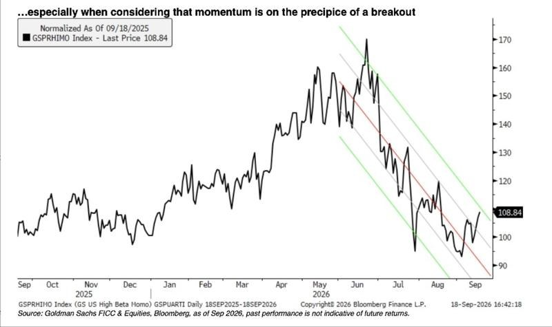
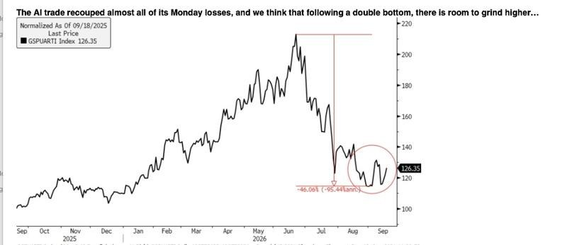
2 图
金刚石产业链调研（4）：再谈GJJG
金刚石产业链调研（4）：再谈GJJG
🐟1️⃣#铜金刚石散热性能：
核心优势为热导率高、热阻低，不同场景降温效果明确：普通轻薄本场景可实现2-5℃降温，高功率游戏本可实现5-7℃降温，可有效解决笔记本87℃左右的运行温度接近91℃报警阈值的痛点；AI数据中心场景可实现12-15℃降温，适配高算力芯片的散热需求。
🐟2️⃣#GJJG产业进展：
•#3C领域： LX多款笔记本测试结果表现最优，目前处于价格和供应量博弈阶段，预计2026年10月敲定合作；
•#服务器领域： 曙光已小批量使用几万片铜金刚石散热方案，预计2027年大规模上量；英伟达二级、三级供应商已启动国内厂商产品验证。
•#AI芯片领域： 海光2026年12月底新品发布将采用多晶金刚石方案，小批量阶段供应商为GJ、WED。
•#产能布局： 2027年MPCVD设备将从当前20多台扩充至50多台，915MHz及2.45GHz路线并行，可覆盖4-6英寸单晶、多晶金刚石生产。
🐟3️⃣#金刚石散热行业推进进展：
•2026年底-2027年：优先在封装外场景规模化应用，无需调整芯片内部制程，验证周期短，2026年底3C及数据中心客户将批量上线，2027年起规模上量。
•2028年起：逐步向封装内应用渗透，其中AI芯片会率先落地，后续成本下降后向手机、普通消费级芯片推广。目前H已完成芯片内金刚石散热的研发测试。
大摩——建滔积层板（1888.HK）：中国BEST会议2026反馈要点
大摩——建滔积层板（1888.HK）：中国BEST会议2026反馈要点
• 设备供应瓶颈锁定产能扩张，玻纤布与铜箔供需格局持续偏紧：PCB用玻纤布及铜箔的产能增长受限于关键设备交付周期。建滔积层板（KB）预计玻纤布短缺将贯穿2027年，且具备显著的涨价潜力。铜箔方面，高端HVLP产品依赖日本Mifune的表面处理设备，当前交期长达9-12个月；中低端产品虽考虑引入本土设备商，但整体供给弹性仍受压制。
• 玻纤布扩产节奏明确，细分品类价格分化加剧：KB计划2026年新增450-500台丰田织机，2027年再增约1,100台（折合每月约100台）。价格端，9月薄型E玻纤布（1080）涨幅明显大于厚型（7628），而8月两者涨幅基本持平，反映AI服务器、高速交换机等高端应用对薄型布的需求拉动更为强劲。
• 特种玻纤布产线落地与客户认证同步推进：KB将于2026年中新增4条LDK1/2/CTE等特种玻纤布产线，2026年末再增2条。目前其特种玻纤布已通过六家新CCL（覆铜板）客户的资格认证，为高端产品放量奠定基础。
• HVLP铜箔技术迭代加速，高端毛利率维持高位：KB的HVLP 1/2/3代铜箔已通过客户认证，当前正推进HVLP 4代验证。毛利率方面，LDK1约40%、LDK2约50%、低CTE产品50%+，高端材料盈利能力显著优于传统品类，构成未来利润结构优化的核心驱动力。
细分要点
• 产能扩张量化路径：玻纤布织机新增节奏——2026年450-500台、2027年1,100台；特种玻纤布产线——2026年中4条、2026年末2条。铜箔设备交期9-12个月，构成短期供给硬约束。
• 价格动态：9月薄型E玻纤布（1080）涨价幅度大于厚型（7628），延续结构性紧缺逻辑；8月两者涨幅相近，近期薄型溢价重新走阔。
• 客户拓展：特种玻纤布新增六家CCL客户认证，覆盖高端应用场景，为后续订单转化提供确定性。
• 铜箔技术路线：HVLP 1/2/3已量产认证，HVLP 4在研；高端表面处理设备以日本Mifune为主，中低端或引入本土供应商以降低成本。
• 财务与估值：评级增持（Overweight），行业观点与大盘一致（In-Line）。目标价75.00港元，2026年9月17日收盘价46.62港元，上行空间约61%。估值基于剩余收益（RI）模型，假设股权成本9.7%（Beta 1.0，股权风险溢价8.7%，无风险利率1%），中期增长率8%，永续增长率3%。2026E/2027E/2028E EPS分别为2.73/4.51/5.40港元，P/E对应17.1x/10.3x/8.6x；ROE高达52.3%/62.0%/57.4%。
催化剂与风险
• 关键催化剂：①玻纤布及铜箔涨价超预期；②特种玻纤布新产线投产及订单放量；③HVLP 4代铜箔认证通过与批量出货；④AI算力硬件需求持续拉动高端CCL材料；⑤设备交期缩短加速产能释放。
• 主要上行风险：AI需求强于预期；市场份额提升；材料升级快于预期；CPO（共封装光学）采用慢于预期（利好传统PCB/CCL链路）。
• 主要下行风险：AI需求弱于预期；份额流失；材料升级慢于预期；CPO采用快于预期（颠覆传统PCB互连架构）；设备交付延迟或成本超支。
大摩——华为发布昇腾960 SuperPoD AI基础设施全新NPO（近封装光学）方案
大摩——华为发布昇腾960 SuperPoD AI基础设施全新NPO（近封装光学）方案
• NPO技术落地印证中国光互联竞争力：华为在2026年9月17日上海全联接大会（Huawei Connect 2026）上发布第三代光互连架构——基于NPO（Near-Packaged Optics）的昇腾960 SuperPoD AI基础设施。从Atlas 910C的离散光学方案，到Atlas 950的LPO（线性驱动可插拔光学），再到Atlas 960的NPO，华为在光互联技术路径上迭代迅猛，持续领跑国产AI算力集群互联方案。
• 性能参数全面超越国际标准：7.2 Tbps NPO光引擎采用36通道×200 Gbps/lane架构，超越OIF等组织正在制定的32通道×200 Gbps（6.4 Tbps）接口标准；通信延迟压降至10 ns，同时功耗显著降低，为超大规模AI训练集群提供低延迟、高能效的互联底座。
• 超节点算力与内存规模创纪录：昇腾960 SuperPoD通过UnifiedBus可扩展至4,096颗NPU卡，提供高达8 Exaflops（FP8精度）的算力及1 PB统一HBM内存池，直接对标国际顶尖AI超算集群规格。
• 产业生态协同推进：华为同步推出“OPEN NPO”倡议及MSA（多源协议），联合中国移动研究院、京东云及20余家国内合作伙伴共建开放生态，加速国产NPO产业链成熟。
• 行业共振验证趋势：上周CIOE 2026（中国国际光电博览会）期间，摩根士丹利已观察到多家中国企业在NPO领域的积极布局，华为此次发布进一步确认NPO正成为下一代AI集群光互联的主流技术方向。
细分要点
• 技术演进路径：Atlas 910C（离散光学）→ Atlas 950（LPO）→ Atlas 960（NPO），光引擎集成度与能效比逐级跃升，反映华为在光电协同封装领域的系统性突破。
• NPO光引擎规格：7.2 Tbps总带宽，36通道，单通道200 Gbps，延迟10 ns，功耗优于传统可插拔方案。对比OIF草案（6.4 Tbps/32通道），带宽密度提升12.5%，通道数增加12.5%。
• 超节点架构：UnifiedBus互连协议支持4,096 NPU scale-up，FP8算力8 Exaflops，HBM容量1 PB，满足万亿参数大模型训练的低延迟通信需求。
• 生态开放化：OPEN NPO MSA旨在标准化接口与协议，降低供应链碎片化风险；中国移动研究院与京东云的加入，预示NPO技术将从AI训练向云数据中心、边缘推理等场景外溢。
• 竞争格局影响：华为NPO方案的推出，强化了中国在AI基础设施光互联领域的自主可控能力，对依赖国际供应链的传统光模块厂商构成长期替代逻辑；同时，国内光器件、光芯片企业有望通过OPEN NPO生态切入高端供应链。
催化剂与风险
• 关键催化剂：①OPEN NPO生态伙伴扩容及具体产品落地时间表；②昇腾960 SuperPoD客户验证与批量部署进度；③CIOE 2026后更多国内NPO技术突破的跟进；④国产200 Gbps/lane光芯片/器件的配套进展；⑤AI算力集群对低延迟互联的需求持续超预期。
• 主要上行风险：NPO技术渗透率快于预期；华为昇腾生态在全球市场的份额扩张；国内光通信产业链在NPO领域的全球竞争力提升。
• 主要下行风险：NPO量产良率及成本控制不及预期；国际竞争对手（如英伟达、博通）在CPO（共封装光学）领域的进展超预期，形成技术路线压制；地缘政治导致先进封装或光芯片供应链受限；AI资本开支周期波动影响超节点部署节奏。
高盛——住友电气工业（5802.T）：会议纪要：光器件产出已恢复正常，二季度有望改善；估值具吸引力；买入评级
高盛——住友电气工业（5802.T）：会议纪要：光器件产出已恢复正常，二季度有望改善；估值具吸引力；买入评级
核心结论：尽管住友电工（SEI）一季度信息通信业务因光器件工厂临时停产表现疲软引发市场担忧，但该扰动已完全消除。在AI算力驱动的光器件及磷化铟（InP）衬底强劲需求支撑下，公司正加速推进产能扩张计划。当前股价对应远期市盈率（Forward P/E）仅17倍，估值已具备显著安全边际，高盛维持“买入”评级，12个月目标价3,300日元，潜在上行空间57.5%。
一、光器件与InP衬底：短期扰动消除，产能扩张提速
1. 停产事件复盘：为未来扩产进行施工，工厂停工半个多月（含五月黄金周），期间发生设备问题导致良率下降。目前生产已在一季度内恢复正常，公司利用8月盂兰盆节假期弥补产能损失，当前设施处于100%满产状态，正通过提升良率进一步小幅增产。
2. 二季度展望：由于光器件制造周期长，二季度发货量仍将受此影响，销售额预计略低于初始预期，但发货已恢复正常。由于该产品组边际利润率（Marginal profit ratio）较高，追赶生产不会产生意外成本，客户流失风险极低（竞争对手同样满产，无替代供应商能快速切入）。
3. 需求与产能规划：需求趋势较三个月前未变甚至有所增强，与客户就未来业务的谈判正在加剧。截至2029年3月财年（FY3/29）的扩产目标（对比2025年3月财年：光器件4倍、InP衬底3倍）维持不变，但正考虑加速实施或上调目标。2030年3月财年（FY3/30）及之后的计划正在制定细节，已决定并启动部分措施，包括新建厂房等额外扩产方案。扩产将通过新设备投资、良率提升及延长设备运转时间组合执行。
4. 融资与竞争：投资主要由公司自身承担，但在与客户谈判未来合同时，正探讨客户能否以预付款形式承担部分资本支出，合资（Joint venture）可能性几乎为零。公司意识到中国及其他竞争对手的扩产动作，但正通过长期协议（LTA）锁定需求及预付款保障投资资金来对冲风险。
二、产品与技术：大尺寸InP衬底领先，CPO/NPO布局有序推进
1. InP衬底大尺寸化：行业主流为3英寸或4英寸，住友电工在提升直径方面处于领先地位，能提供晶体缺陷更少、波动更小的产品，便于客户加工。内部基本使用4英寸晶圆，各工艺线针对4英寸优化，效率较高，大尺寸化是公司重点考虑方向之一。
2. CPO（共封装光学）：CW激光器已完成开发，正推进多家客户的产品认证程序；光纤及连接器相关产品（包括MMC插芯、外置光源连接器、光纤阵列单元（FAU））正进行业务洽谈，部分发货及收入确认计划在本财年内启动，2027年起规模有望扩大。相较于Lumentum，住友电工在部分领域可能稍显落后，但一旦获得认证即准备发货，差距不大。CPO市场初期规模较小，从FY3/29起量，公司正按此节点推进。ELS模块方面，公司计划销售芯片，同时销售收发器芯片及外置光源用高功率激光器芯片。
3. NPO（近封装光学）：正与客户进行讨论。CPO与NPO均需光输出激光器，对住友电工而言均为业务机遇。公司正与客户对齐规格，目前无法评论商业化时机。
三、定价、合同结构与光纤维缆
1. 定价机制：公司长期协议（LTA）占比较同业高，LTA基本为固定价格，但结构设计允许通胀转嫁。新谈判中正争取有利条款，无拒绝涨价的政策。LTA起止日主要按日历年度（CY）计算（因海外客户众多）。数据中心约80%的光布线（连接器等）处于长期合同下，光缆多为年度合同而非长期合同。连接器售价在LTA下固定，光纤在成本中占比较小，故光纤涨价不构成重大问题；光缆方面，公司会根据光纤价格上涨情况适时要求提价。
2. 长期合同需求波动吸收机制：综合协议规定年度交易量，具体订单按个案处理。若项目延迟过多，将违反合同规定的最低采购量（Minimum order quantity），导致追加订单或违约金支付（迄今需求呈前置趋势，无违约金索赔案例）。
3. 光纤维缆：中东紧张局势导致的聚乙烯短缺影响已消除。公司正致力于将2027年3月财年（FY3/27）光纤产能较2025年3月财年提升1.3倍，包括外包给外部供应商的拉丝工艺。
四、其他关键议题
1. 美国对中国产光收发器监管风险：目前信息极为有限，能见度低。参考要点：（1）公司业务在中国与美国收发器制造商间平衡；（2）行业中中国制造商存在感极强，100%排除是否现实存疑；（3）中国制造商在东盟等地亦有产能，该部分如何认定是讨论焦点。公司不考虑内部生产收发器，曾自主生产，但因组装工序劳动密集且难以维持竞争力，已转向聚焦更具技术含量的核心芯片部分。
2. 全年指引与下半年展望：7月31日维持下半年计划不变的原因在于，制约因素在产能端而非需求端，扩产计划按进度推进。尽管二季度需求强劲，但未修订指引。
3. 汽车业务：全球出货量总计符合指引，按区域看，对中国出货量下降，对美国等其他区域出货量上升。
4. 利率上升影响：约一半计息债务以日元筹集，且多为长期借款，利率上升影响有所缓解。信息通信以外领域，部分业务可能因加权平均资本成本（WACC）上升而面临利差收窄，公司拟通过降本、提价及优化产品组合提升投资资本回报率（ROIC）。即便ROIC短期跌破WACC，也不会立即引发业务退出讨论，决策将立足长期视角。
5. 全年指引上下行风险：各板块均有望超越指引。上行因素包括初始指引保守、需求环境有利及美元/日元（USD/JPY）汇率假设150。汽车板块中，日本制造商在中国需求趋势令人担忧，需密切监测，尤其在中国市场。
五、估值与目标价
高盛给予“买入”评级，12个月目标价3,300日元。采用分类加总估值法（SOTP），基于2028年3月财年预期（FY3/28E）赋予目标企业价值倍数（EV/EBITDA）13.0倍。主要下行风险包括：汽车板块产量下滑、成本转嫁慢于预期；信息通信板块超大规模客户（Hyperscaler）资本支出放缓导致库存调整时间长于预期、竞争对手在超高密度光缆领域追赶；环境能源板块电力基础设施项目因材料及用工短缺延迟；工业材料板块宏观经济放缓导致硬质合金工具需求减速等。公司层面风险包括汇率波动及原材料价格持续高企。当前股价2,095日元，市值6.5万亿日元（420亿美元）。
野村——全球AI趋势追踪：垂直行业大语言模型（LLM）——网络安全会是LLM落地的下一个爆款应用吗？
野村——全球AI趋势追踪：垂直行业大语言模型（LLM）——网络安全会是LLM落地的下一个爆款应用吗？
核心结论：伴随前沿模型能力提升，LLM自身安全漏洞及生成式AI（Gen AI）平台风险引发市场高度关注，网络安全正成为LLM商业化变现的潜在核心场景。LLM在网络安全领域的应用可显著提升事件响应效率、降低误报率并实现安全效果量化，但中国传统网络安全软件厂商面临两大压制因素：一是国内政企客户需求持续疲软，行业竞争格局尚待优化；二是LLM厂商正通过编程智能体（Coding Agent）及协同工作工具切入网络安全市场，对传统安全软件企业的存量市场形成一定替代效应。野村维持对中国网络安全软件板块的“中性”评级，认为深信服（300454 CH，中性）等基本面改善的龙头存在短期交易性机会，但板块全面复苏仍需时日。
一、LLM厂商加速布局网络安全：商业化新赛道
自2026年初以来，Anthropic（未上市）、OpenAI（未上市）及Meta（META US，无评级）均报告了LLM主动发起网络攻击的安全事件，倒逼LLM厂商一方面管控自身模型风险，另一方面利用LLM能力强化基础软件的安全防御。2026年4月7日，Anthropic宣布其最新模型Mythos Preview在内部测试中展现出高度自动化的漏洞发现与利用能力。LLM赋能网络安全的潜在优势包括：
1. 效率提升：复杂事件分析耗时从数小时压缩至分钟级，AI可自动生成结构化报告；
2. 准确率改善：通过语义理解显著降低告警误报率，提升检测与预测精度；
3. 效果可量化：智能安全系统可量化防御成效，例如Anthropic的Project Glasswing在首月即协助合作方发现超10,000个高危漏洞。
此外，LLM的安全应用是其编程能力的自然延伸——代码理解、工具调用及多阶段推理能力可直接迁移至漏洞挖掘与验证环节。随着LLM复杂编程能力的持续突破，网络安全防御能力有望实现量子跃迁，并在企业市场大规模落地。
二、主要LLM厂商网络安全布局动态
1. Anthropic：2026年4月8日发布Claude Mythos Preview，同步启动防御性网络安全项目Project Glasswing，初始参与方涵盖亚马逊云科技（AWS）、苹果（Apple）、谷歌（Google）、摩根大通（JPMorgan Chase）、微软（Microsoft）、英伟达（Nvidia）、Palo Alto Networks及Linux基金会等逾40家机构；2026年5月1日向所有Claude企业版用户开放Claude Security公测，该工具可像人类研究员一样推理代码，理解组件交互与数据流以洞察复杂漏洞。
2. OpenAI：2026年3月6日推出Codex Security，可识别网络安全漏洞并提出修复方案；2026年5月12日发布基于GPT-5.5-Cyber模型及Codex Security智能体的Project Daybreak，整合思科（Cisco）、CrowdStrike、Palo Alto Networks、Cloudflare、甲骨文（Oracle）等安全合作伙伴生态，旨在强化企业软件安全防御；2026年8月10日发布GPT-5.6-Cyber，面向Daybreak Red用户开放，该模型基于GPT-5.6 Sol构建，专为提升特定网络安全任务能力并减少拒绝响应而设计；2026年9月3日宣布GPT-6的网络安全能力首次达到OpenAI防备框架（OpenAI Preparedness Framework）的最高级别“关键级”（Critical）。
3. 智谱AI（Z.AI）：2026年9月正式宣布网络安全成为GLM-5.3的首个落地场景，已有100家企业完成集成。GLM-5.3主要承接多智能体漏洞挖掘、真实业务安全研究、大规模代码库审计及金融机构安全加固等高价值任务；GLM-5.3-Flash则覆盖批量扫描、日志处理及告警分析等高频率任务。
三、安全软件厂商：新增长引擎还是被替代风险？
网络安全行业可细分为：网络与基础设施防御、零信任与安全工作空间访问、云安全、应用与应用程序接口（API）安全、身份与访问管理（IAM）、数据安全、检测/响应与安全运营、漏洞与威胁、评估与合规。对于AI产业链（AI基础设施、AI网络、LLM、AI应用）而言，安全在每个层级均扮演关键角色。LLM及AI应用催生了独特的网络安全需求，例如LLM需要越狱防护、幻觉治理及内容合规审查，这构成了生成式AI时代独有的新安全品类。此外，AI智能体被赋予过度授权以操作用户系统与数据，使得身份保护与权限治理（Agent的IAM）成为核心功能。高德纳（Gartner）预测，全球AI安全市场规模将在2027年达到48亿美元（同比增长68.7%），2028年进一步增至77亿美元。其中，AI应用安全预计在2027年以8.51亿美元成为最大支出品类，紧随其后的是AI使用控制（7.49亿美元）。IDC预测，中国安全智能体相关应用市场规模将在2028年达到16亿美元。尽管当前AI安全市场体量尚小，但AI驱动的事件响应与威胁检测、AI云防护、AI治理等领域具备强劲增长潜力。
四、中国主要安全厂商AI产品进展
1. 奇安信（Qi An Xin）：2023年8月推出QAX-GPT大语言模型，采用与其他产品捆绑销售的模式。
2. 深信服（Sangfor）：2023年5月推出Security GPT大语言模型，已升级至4.0版本并集成DeepSeek-R1；2025年2月推出AI算力网关，已在医疗、制造及独立软件开发商（ISV）等行业交付。
3. 三六零（360）：2023年7月推出360智脑大语言模型，2025年10月AI相关项目中标金额超3亿元人民币；2025年4月推出360安全大模型一体机，售价60万元人民币起。
4. 安恒信息（DBAPP Security）：2023年8月推出安全大语言模型，2024年推出安全智能体平台，2025年AI相关收入超5800万元人民币，同比增长230%。
5. 启明星辰（Venustech）：2022年推出盘小古安全大语言模型，2025年2月构建大语言模型应用安全产品矩阵，2025至2026年推出天阅及安行安全智能体系统，其大语言模型应用防火墙已在政府、电信运营商、金融、能源等行业的具体项目中落地。
五、竞争格局与关键判断
LLM厂商正切入网络安全市场，可能从传统安全厂商手中夺取份额。例如，AI应用安全产品（如LLM防火墙）正被AI云平台嵌入其模型即服务（MaaS）解决方案，作为标准组件打包出售，用户可直接在云端一站式采购LLM服务及相关安全产品，从而绕过第三方安全软件供应商。不过，传统安全厂商拥有丰富的安全数据资产与行业认知，有助于交付更定制化的解决方案，短期内网络安全市场尚难完成整合。野村认为，尽管部分安全软件龙头基本面改善带来交易性机会，但中国网络安全软件板块尚未进入全面复苏阶段，维持行业“中性”评级。
摩根大通观点：AI 基建供给不足，产业重心逐步转移
摩根大通观点：AI 基建供给不足，产业重心逐步转移
摩根大通认为 AI 基建仍是供给不足，不是需求不足。下阶段主轴从 GPU 转向 ASIC、网络、HBM、封装与晶圆厂 / WFE。
云端资本支出持续上修：2026-28 年约 9530 亿、1.41 万亿、1.54 万亿美元，2030 年上看 1.66 万亿。定制化 AI ASIC 2026 年约 600-700 亿美元，之后年复合增长 40-50%+。
出货量上，ASIC / XPU 预计 2027 年超越 GPU，2028 年占比约 55%。
博通被视为核心受益者，AI 营收模型为 580 亿→1350 亿→2450 亿美元，覆盖谷歌、Meta、OpenAI 等。
OpenAI 自研芯片已有第一代硅片，Gen 1 瞄准 2026 年底 / 2027 年。
网络成为新瓶颈，Tomahawk 6 预估 2027 年售罄。WFE 2026、2027 年分别增长约 31%、38%，无尘室是主要限制。
估值上，英伟达市盈率相对自身历史偏低，部分类比与网络股接近中段。半导体拥挤度在 AI 热潮后已回落。
瑞根上调 AI 资本支出预测：2026 年接近 1 万亿美元，增量的 90% 来自内存价格上涨
瑞根上调 AI 资本支出预测：2026 年接近 1 万亿美元，增量的 90% 来自内存价格上涨
根据瑞根的最新估计，全球 AI 资本支出（CapEx）预计将从 2025 年的5060 亿美元激增至 2026 年的9980 亿美元，接近翻倍。随后，2027 年预计将达到1.447 万亿美元。此次预测值大幅上调的主要原因不是基础设施投资规模的全面扩张，而是内存价格的急剧上涨。
1. 内存支出的爆发式增长：从配角到主角
内存正在成为 AI 资本支出增长最核心的驱动力。
全球内存支出：2025 年710 亿美元→2026 年3670 亿美元→2027 年9230 亿美元，呈急剧增长态势。
非内存 AI 支出：2026 年约为6310 亿美元，2027 年反而下降至5250 亿美元。
占比变化：内存在 AI 资本支出中的占比预计将从 2025 年的14%迅速升至 2026 年的37%、2027 年的64%。
2. AI 投资增量的实质：90% 来自内存成本上升
此次 AI 投资扩张的结构性特点在于，其源于成本上升，而非数量扩张。
2026 年：AI 资本支出同比增量中，约60%来自内存价格上涨。
2027 年：随着其他部件的支出同比下降，内存支出增量本身将超过 AI 资本支出的整体净增量。
整个期间（2025—2027 年）：估计近 1 万亿美元的 AI 资本支出增量中，约90%将来自内存支出上升。
这表明，AI 投资周期的经济驱动力正在从单纯的基础设施规模扩张，转向支撑强大计算系统的核心部件成本上升。
3. 宏观经济影响：亚洲内存生产国受益
随着支出增长由 “价格上涨” 而非 “数量” 驱动，其宏观经济影响也有所不同。
对美国经济的影响有限：由于支出增长基于内存价格上涨，对美国实际 GDP 的直接拉动作用相对有限。
利润向亚洲转移：资金流动将呈现出从 AI 基础设施投资向内存生产国转移利润的性质。全球主要内存生产国集中在亚洲，因此预计将对相关亚洲经济体的 GDP 产生直接的积极贡献。
这一分析对投资者未来的资产配置具有重要启示，并表明随着 AI 投资周期的深化，亚洲内存价值链可能获得超市场预期的收益。
按照 TF 的标准，CoWoS-S 可集成 2 个 SoC / Chiplet 和 8 个 HBM。
按照 TF 的标准，CoWoS-S 可集成 2 个 SoC / Chiplet 和 8 个 HBM。
CoWoS-L 利用硅桥，可以构建大得多的封装。
英伟达和超威半导体的 AI 加速器已经采用 CoWoS-L，Meta MTIA 400 也在使用。
AWS 和微软也预计将于 2027 年采用。
封装越大，一次缺陷造成损失的芯片和 HBM 价值也越高。
AI 芯片价格越高，封装良率每 1% 的经济价值也随之上升。
因此，台积电的护城河很难仅用产能数字解释。
以高良率量产大型 AI 封装的经验本身，就构成了进入壁垒。
台积电封装产能越紧张，CoWoS-L 的大型中介层成本越高，客户就越会寻找其他路径。
谷歌预计将于 2027 年采用 EMIB-T，AWS 也正在测试 EMIB。
【广发非银】20260918新闻及公告整理
【广发非银】20260918新闻及公告整理
一、本日行情：[红包]
今日上证指数报3911.8714点，涨0.94%；深证成指报13640.8728点，涨1.72%；创业板指报3372.6763点，涨2.25%。券商指数涨1.29%；保险指数涨0.37%。交易所统计今日股票成交金额为20771亿元；SW证券Ⅱ行业今日成交额为191.1735亿元，占0.92%。上一交易日两融余额26390.92亿元；中债估值中心测算的十年期国债到期收益率为1.68%。
二、公司公告：[發]
【广发证券】：标普全球于2026年9月16日将广发证券及其子公司广发控股香港的评级由"BBB/稳定/A-2"上调至"BBB+/稳定/A-2"，原因是中国经济韧性增强、行业监管框架完善，此次上调不影响公司偿债能力。
【华福证券】：受托管理的"23越资02"债券临时事务报告，披露越秀资本三分之一以上董事（贺玉平、周水良、舒波、谢石松卸任，曾志钊等5人新任）及信息披露事务负责人（由林颖变更为张跃龙）发生变动，属正常人事调整，不影响偿债能力。
【兴业证券】：其境外控股公司兴证国际将为全资附属公司CISI与大华银行香港分行签署的GMRA回购协议提供不超过0.2亿美元担保。CISI资产负债率超70%，但风险可控，已在授权范围内。
【永安期货】：董事马国庆因工作调整于2026年9月16日辞去董事职务，离任后不再担任公司其他职务。其未持有公司股份，离任不影响董事会正常运作，公司董事会对他的贡献表示感谢。
【红塔证券】：于2026年9月17日召开第三次临时股东会，以集中竞价交易方式回购股份方案等议案均获通过，无否决议案，表决程序合法有效，由德恒（昆明）律师事务所见证。
三、重要新闻：[烟花]
【央行：9月18日开展了4633亿元7天期逆回购操作】
【财政部：1—8月全国一般公共预算收入156633亿元 同比增长5.7%】
【商务部：1—8月全国吸收外资4799.5亿元人民币】
⛽【国联民生能源 周泰团队】全球油气供需情况：
⛽【国联民生能源 周泰团队】全球油气供需情况：
1⃣原油：截至9月11日当周，美国原油库存（包括SPR和商业库存）周环比-104万桶，汽油库存周环比+79万桶；美国炼油厂开工率周环比-1.0pct。截至9月17日，中国山东地炼开工率周环比-1.4pct。
2⃣天然气：截至9月18日，中国LNG到岸现货价为27.18美元/百万英热，周环比-5.13%，同比+134.71%；截至9月17日，荷兰TTF天然气期货收盘价为24.28美元/百万英热（即76.35欧元/MWh），周环比-7.99%，同比+127.34%。欧盟储气率为69.06%，周环比+1.41pct，同比-12.03pct。
⏰发布日期：2026年9月19日
⚠风险提示：基于公开资料信息整理，可能存在信息滞后或更新不及时、不全面的风险；任何情况下，不构成投资建议。
☎联系人：国联民生能源开采团队 周泰/李航/王姗姗
【国联民生能源 周泰团队】主产地产量同比下降，周环比下降
【国联民生能源 周泰团队】主产地产量同比下降，周环比下降
截至9月13日当周，晋陕蒙442家煤矿周度产量2605万吨，同比-4.3%，环比-0.3%；产能利用率78.8%，同比-3.5pct，环比-0.2pct。
分省份情况：
▫山西：周度产量772万吨，同比-12.2%，环比+0.3；产能利用率63.1%，同比-8.5pct，环比+0.2pct。
▫内蒙古：周度产量1180万吨，同比-1.0%，环比-1.1%；产能利用率87.5%，同比-1.0pct，环比-0.9pct。
▫陕西：周度产量653万吨，同比+0.1%，环比+0.3%；产能利用率89%，同比+0.1pct，环比+0.3pct。
【国联民生能源 周泰团队】化工耗煤量同比增速-1.0%，环比增速+0.3%
【国联民生能源 周泰团队】化工耗煤量同比增速-1.0%，环比增速+0.3%
截至9月18日当周，化工行业合计耗煤672.98万吨，同比-1.0%，周环比+0.3%。其中，甲醇耗煤347万吨，同比+3.7%，周环比+0.3%；乙二醇耗煤61.07万吨，同比-19%，周环比+0.8%；新型煤化工合计耗煤408.07万吨，同比-0.5%，周环比+0.4%。合成氨耗煤167.18万吨，同比+2.5%，周环比+1.2%；PVC耗煤52.0万吨，同比-7.1%，周环比-1.2%；纯碱耗煤44.83万吨，同比-10.5%，周环比-2.2%；传统煤化工合计耗煤264.91万吨，同比-2.0%，周环比+0.1%。
知情人士透露，多家早前有意收购恒大物业集团的私募股权公司，正考虑重新竞购这家在香港上市的物业管理企业。
知情人士透露，多家早前有意收购恒大物业集团的私募股权公司，正考虑重新竞购这家在香港上市的物业管理企业。
全球超级油轮短缺威胁长途石油运输
全球超级油轮短缺威胁长途石油运输
代表美国各大汽车制造商、供应商、经销商的车业协会，联名致信美国总统特朗普，要求政府不让中国汽车制造商进入美国市场。
代表美国各大汽车制造商、供应商、经销商的车业协会，联名致信美国总统特朗普，要求政府不让中国汽车制造商进入美国市场。
中国官媒：用Anthropic等于把数据交给美国
中国官媒：用Anthropic等于把数据交给美国


 5 图
5 图